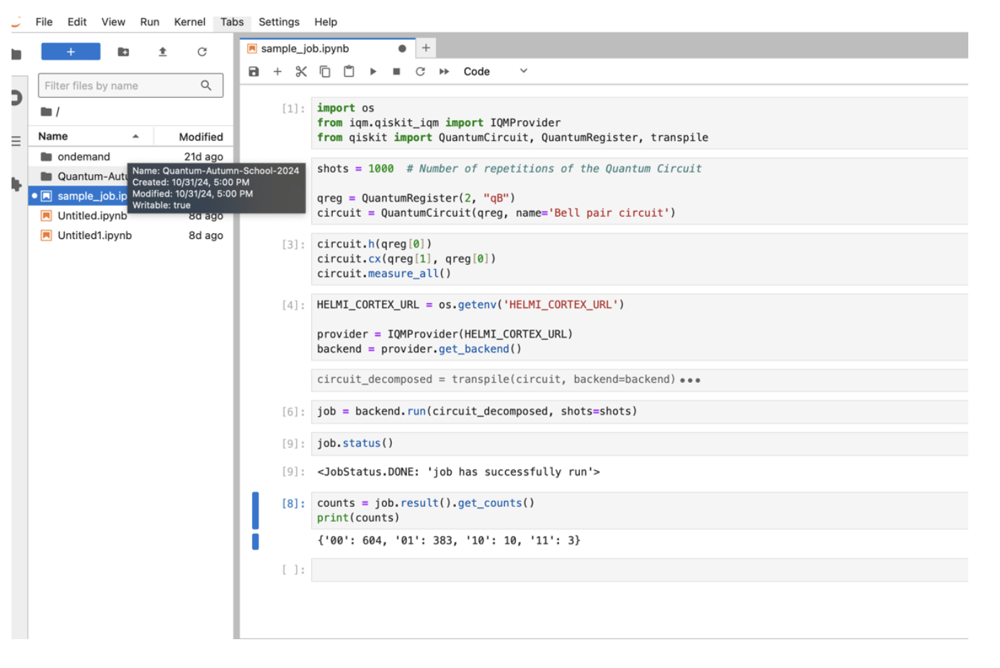
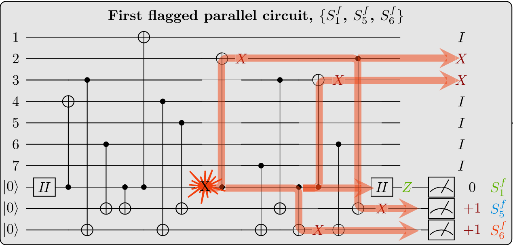
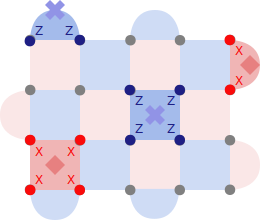
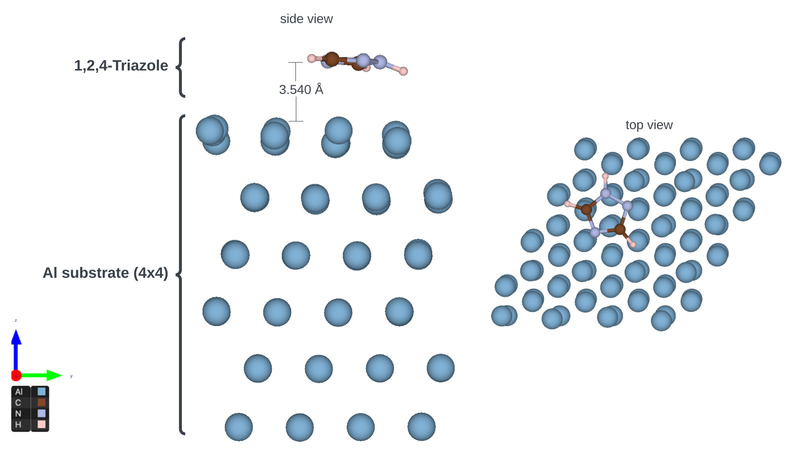
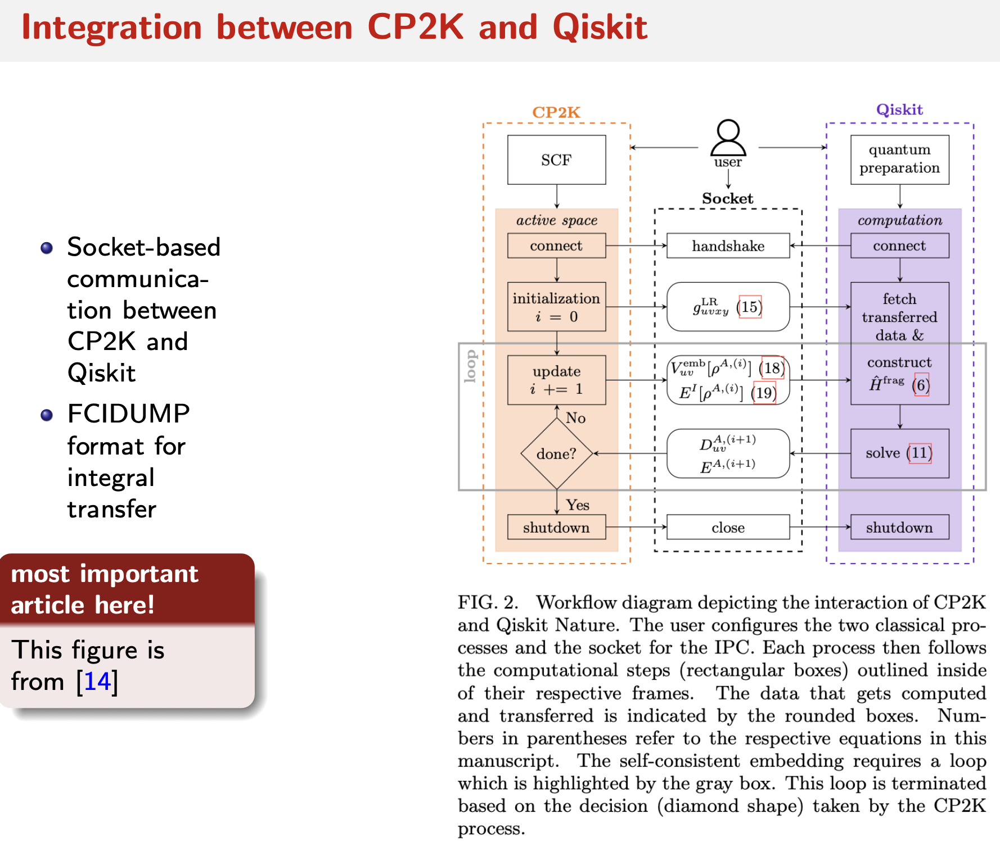
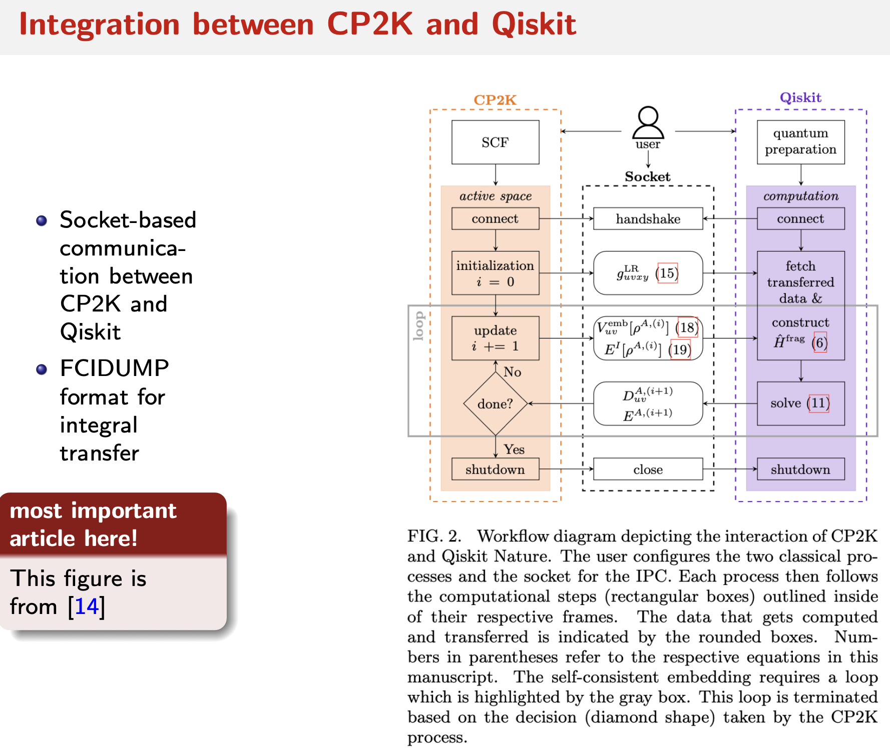

Quantum Autumn School 2024
Recent developments in quantum technology are bringing the world closer to a new technological revolution – the advent of usable quantum computers able to provide enormous acceleration to important computational tasks. In coming years, quantum computing is expected to have a significant impact on many areas of research that can utilise computational modelling. Indeed, significant efforts and investments are currently underway in Europe to bolster skills and capacity within quantum computing.
ENCCS joins forces again this year with NordIQuEst, to deliver a three-day quantum autumn school in early December 2024! The school will also be visited by and contributed to by several companies who are developing in-house expertise in various application domains of quantum computing.
NordΙQuEst brings together a consortium of seven partners from five Nordic and Baltic countries to connect world leading traditional HPC resources and quantum computers across national borders with the aim to establish a quantum computing platform customised to the needs of the region.
The quantum autumn school will be held in Stockholm in hybrid form, in-person and online.
Prerequisites
For the hands-on tutorials, basic familiarity with Python and some experience working in a Unix environment are desirable. Some previous experience with quantum computing is expected.
Setup
Participants can run the course notebooks either on the Helmi quantum computer through the LUMI Open OnDemand platform, or locally on their laptops. Please refer to step by step instructions below to get started!
Using Helmi via the Custom Quantum Course Environment on LUMI Open OnDemand
A course environment has been made with preloaded modules (qiskit-iqm) and resource settings for connecting to Helmi. This section offers guidance on accessing this environment.
See also these up-to-date instructions.
Log in to LUMI Open OnDemand / web interface with your MyCSC / Haka account
Click on
Jupyter for Courses

You should get a prefilled page shown below, you can change a few variables such as your
working directory.Please note what you selected as your working directory when launching your Jupyter Notebook as this will determine where your file is saved.
You can find more information about storage on LUMI here: https://docs.lumi-supercomputer.eu/storage/#__tabbed_1_1

You also have the flexibility to adjust some resource settings. By clicking
show custom resource settings(Please note that memory should be kept under 3GB).

Once you are ready, click on Lunch.
Depending on the queue, it might take a few minutes before you can access your session. Once your session is ready, you should see a page like this:
Click on the big blue
Connect to Jupyterbutton and it will launch a Jupyter notebook on a separate tab. Navigate to the new tab.Now you can create and run codes on a jupyter notebook. A sample is shown in the image below.

You can save your notebooks like this:
go to the top left corner, click on file
click on
Save notebookto save a specific file orSave allto save all file & changes
This environment gives each user 2 hours and 2GB per session. It is configured to load the helmi_qiskit (qiskit-iqm) module and connect to Helmi.
To add extra python packages use
pip install --user <package-name>
Useful Links
https://fiqci.fi/_posts/2024-08-23-Lumi_web_introduction
https://docs.csc.fi/computing/quantum-computing/helmi/running-on-helmi/
Locally with your laptop
All of the course contents can be followed along locally on your laptop. Each tutorial will provide installation instructions.
If you already have a preferred way to manage Python versions and libraries, you can stick to that. If not, we recommend that you install Python3 and all libraries using miniconda a free minimal installer for the package, dependency and environment manager for conda.
Please follow the installation instructions on https://docs.conda.io/en/latest/miniconda.html to install Miniconda3.
Make sure that both Python and conda are correctly installed:
$ python --version
$ # should give something like Python 3.11.7
$ conda --version
$ # should give something like conda 24.9.2
A requirements.txt file is provided which contains all of the python packages to install a local software environment on your computer. Using this a conda environment can be created using the command:
$ conda create --name qas2024 -y python=3.11.7 pip
Which creates a new conda environment with Python 3.10 and pip. You can then activate it and install the python packages:
$ conda activate qas2024
$ pip install -r requirements.txt
You can download the requirements.txt here.
To get access to the notebooks covered during the school, you can clone the Git repository behind this lesson page:
$ git clone https://github.com/ENCCS/qas2024.git
$ cd content/notebooks
Alternatively, you can navigate to https://github.com/ENCCS/qas2024, click the green “Code” button, and select “Download ZIP”.
(Backup approach) Notebooks.csc.fi
CSC’s notebooks platform provides a preconfigured python environment and jupyter-lab server for running all of the jupyter notebooks shown in this course. No setup is required to run the notebooks.
Please find instructions here.
Welcome and introduction
Agenda
Time |
Topic |
|---|---|
10:00-11:00 |
Arrival and registration |
11:00-11:15 |
Welcome and introduction to NordIQuEst, ENCCS and SQS |
11:15-12:00 |
HPC/QC integration and the NordIQuEst application library |
12:00-13:00 |
Lunch |
13:00-14:00 |
Introduction to the Helmi quantum computer |
14:00-17:00 |
Intro to variational quantum algorithms: QAOA theory and hands-on |
17:30-18:30 |
Study visit to quantum optics labs at Albanova University Center |
18:30-21:00 |
Self-organised dinner in Stockholm |
Time |
Topic |
|---|---|
09:00-12:00 |
Error correction – theory and hands-on |
12:00-13:00 |
Lunch |
13:00-14:00 |
Quantum computing hardware |
14:00-15:00 |
Quantum Monte Carlo and quantum finance |
15:00-16:30 |
QMC and quantum finance tutorial |
16:30-17:00 |
Overview of the Quantum Sweden Innovation Platform – QSIP |
17:00-17:30 |
Post-quantum cryptography |
18:00-21:00 |
QAS dinner, drinks and Pecha Kucha social event |
Time |
Topic |
|---|---|
09:00-10:00 |
Solving Flight Scheduling Optimization using QAOA – Theory |
10:00-11:00 |
Solving Flight Scheduling Optimization using QAOA – Hands-on |
11:00-12:00 |
Quantum walk – seminar and demo |
12:00-13:00 |
Lunch |
13:00-14:00 |
Quantum chemistry and materials science seminar |
14:00-15:00 |
Quantum chemistry and materials science hands-on |
15:00-15:30 |
Quantum extreme learning machine: presentation and case study |
15:30-16:15 |
Overview of the Tergite framework |
About ENCCS

About NordIQuEst


Integration of High Performance Computing and Quantum Computing
Introduction to Helmi
Tutorial - Introduction to Helmi
Estimating the GHZ fidelity
Preparing the GHZ circuit
# Importing the required modules
import os
import networkx as nx
import numpy as np
import itertools
from iqm.qiskit_iqm import IQMProvider
from iqm.qiskit_iqm.fake_backends import fake_adonis
from iqm.qiskit_iqm.iqm_transpilation import optimize_single_qubit_gates
from qiskit.compiler import transpile
from qiskit import QuantumCircuit, QuantumRegister, ClassicalRegister
from qiskit.visualization import plot_histogram
from qiskit.result import marginal_counts
from functools import reduce
import matplotlib.pyplot as plt
from scipy.optimize import minimize
# Set up the Helmi backend
HELMI_CORTEX_URL = os.getenv('HELMI_CORTEX_URL')
if not HELMI_CORTEX_URL:
raise ValueError("Environment variable HELMI_CORTEX_URL is not set")
provider = IQMProvider(HELMI_CORTEX_URL)
backend = provider.get_backend() # fake_adonis.IQMFakeAdonis()
shots = 1024
n_qubits = 5
print(f"Native operations: {backend.operation_names}")
print(f"Number of qubits: {backend.num_qubits}")
print(f"Coupling map: {backend.coupling_map}")
G = nx.Graph()
G.add_edges_from(backend.coupling_map)
node_labels = {node: f"QB{node + 1}" for node in G.nodes}
nx.draw(G, labels=node_labels, node_color="skyblue", node_size=500, font_size=10)
Let us first prepare the GHZ circuit.
# Simple GHZ circuit
qubits: dict[str, QuantumRegister] = {i: QuantumRegister(1, "QB" + str(i)) for i in range(1, 6)}
qc = QuantumCircuit(*qubits.values())
qc.h(qubits[3])
qc.cx(qubits[3],qubits[2])
qc.cx(qubits[3], qubits[4])
qc.cx(qubits[3], qubits[1])
qc.barrier()
qc.cx(qubits[3],qubits[5])
qc.measure_all() #expected equal majority counts of '00000' and '11111'
qc.draw(output="mpl")
Here is how the circuit will look like if we convert to Helmi’s native gateset.
# Optimising for Helmi ->
initial_layout: list[int] = [backend.qubit_name_to_index(qubit) for qubit in qubits.values()]
transpiled_circuit = transpile(qc, backend, initial_layout= initial_layout, optimization_level=0)
transpiled_circuit.draw(output="mpl")
As the RZ gates commute with the CZ gates, and the measurement is not affected by the final RZ gate, we can optimise those away to decrease the number of gates we perform.
transpiled_circuit = optimize_single_qubit_gates(transpiled_circuit)
transpiled_circuit = transpile(transpiled_circuit, backend, optimization_level=0)
transpiled_circuit.draw(output="mpl")
job = backend.run(transpiled_circuit, shots=shots)
result = job.result()
counts = result.get_counts()
plot_histogram(counts)
print("Unmitigated GHZ fidelity =", (counts["00000"] + counts["11111"])/shots)
Applying readout mitigation
The code used here was modified from this tutorial from NVIDIA.
To perform readout mitigation with the minimum number of jobs, we will prepare the \(\mid \! 00000 \rangle\) and \(\mid \! 11111 \rangle\) and see which states we actually measure.
First, we observe how the \(\mid \! 00000 \rangle\) state is not strongly affected by state preparation and measurement (SPAM) errors.
qubits: dict[str, QuantumRegister] = {i: QuantumRegister(1, "QB" + str(i)) for i in range(1, 6)}
qc_0s = QuantumCircuit(*qubits.values())
qc_0s.measure_all()
initial_layout: list[int] = [backend.qubit_name_to_index(qubit) for qubit in qubits.values()]
qc_0s = transpile(qc_0s, backend, initial_layout = initial_layout, optimization_level=0)
job_0s = backend.run(qc_0s, shots=shots)
result_0s = job_0s.result()
counts_0s = result_0s.get_counts()
plot_histogram(counts_0s)
Next, we can observe how the \(\mid \! 11111 \rangle\) is much more strongly affected by SPAM error. Part of this comes from the \(\mid \! 1 \rangle\) state relaxing to \(\mid \! 0 \rangle\), however, the exact ways in which Helmi is calibrated also plays an important role here.
qubits: dict[str, QuantumRegister] = {i: QuantumRegister(1, "QB" + str(i)) for i in range(1, 6)}
qc_1s = QuantumCircuit(*qubits.values())
for qubit in range(1,6):
qc_1s.x(qubits[qubit])
qc_1s.measure_all()
initial_layout: list[int] = [backend.qubit_name_to_index(qubit) for qubit in qubits.values()]
qc_1s = transpile(qc_1s, backend, initial_layout = initial_layout, optimization_level=0)
job_1s = backend.run(qc_1s, shots=shots)
result_1s = job_1s.result()
counts_1s = result_1s.get_counts()
plot_histogram(counts_1s)
local_states = ["0" * n_qubits, "1" * n_qubits]
results = {"00000": result_0s, "11111": result_1s}
for state in local_states:
res = dict(list(results[state].get_counts().items()))
print(f"{state} becomes {res}")
possible_counts = [
dict(list(results[state].get_counts().items())) for state in local_states
]
matrices = []
for k in range(n_qubits):
matrix = np.zeros([2, 2], dtype=float)
marginalized_counts = []
total_shots = []
for i in local_states:
marginal_cts = marginal_counts(results[i], indices = [k]).get_counts()
marginalized_counts.append(marginal_cts)
total_shots.append(sum(marginal_cts.values()))
# matrix[i][j] is the probability of counting i for expected j
for i in range(2):
for j in range(2):
matrix[i][j] = marginalized_counts[j].get(str(i),
0) / total_shots[j]
matrices.append(matrix)
We have just prepared the confusion matrices for each of the \(5\) qubits using just \(2\) jobs, which can be used to calculate the confusion matrix for the whole system. This does assume that measurement or doing gates on one qubit does not affect other gates. We could create these confusion matrices using \(2n_{\text{qubits}}\), or even more properly using \(2^{n_{\text{qubits}}}\) jobs, however, just these \(2\) jobs should suffice.
for i, matrix in enumerate(matrices):
print(f"Confusion matrix for QB{i+1}:")
print(matrix, "\n")
labels = list(map(list, itertools.product([0, 1], repeat=n_qubits)))
states = list(map(lambda label: "".join(map(str, label)), labels))
Let us have another look at the counts from the GHZ circuit. We will perform readout error mitigation on it, and hopefully, improve the GHZ state fidelity.
new_counts = dict(counts.items())
noisy_counts = np.array(
[new_counts.get(state, 0) for i, state in enumerate(states)])
noisy_counts
def find_closest_distribution(empirical_dist):
"""
Find the closest distribution to an empirical distribution by minimizing the L1 norm.
Args:
empirical_dist: Empirical distribution that you want to find the closest distribution to.
Returns:
Closest distribution to `empirical_dist`
"""
def objective(x):
return np.linalg.norm(empirical_dist - x, ord=1)
# Constraint: all elements of p must be positive, and the distribution must sum to 1
cons = (
{
"type": "ineq",
"fun": lambda p: p
},
{
"type": "eq",
"fun": lambda p: np.sum(p) - 1
},
)
bnds = [(0, 1) for _ in range(len(empirical_dist))]
initial_value = np.random.uniform(size=len(empirical_dist))
res = minimize(
objective,
initial_value,
method="SLSQP",
options={"maxiter": 1000},
bounds=bnds,
constraints=cons,
)
return res.x
def get_counts_from_distribution(n_qubits, size, dist):
"""
Generates samples based on a given distribution and returns the counts of each sample value.
Args:
n_qubits: The number of qubits in the quantum circuit.
dist: The probability distribution from which samples are drawn.
Returns:
An array of counts for each possible value in the distribution. The array has a length of 2^n_qubits.
"""
samples = np.random.choice(np.arange(2**n_qubits), size=size, p=dist)
values, counts = np.unique(samples, return_counts=True)
res = np.zeros(2**n_qubits, dtype=int)
res[values] = counts
return res
# Function to draw the confusion matrix
def plot_cmat(mat):
fig, ax = plt.subplots()
n = len(mat)
im2 = ax.matshow(mat, cmap=plt.cm.Reds, vmin=0, vmax=1.0)
ax.set_yticks(np.arange(n))
ax.set_xticks(np.arange(n))
ax.set_yticklabels(n * [""])
ax.set_xticklabels(n * [""])
ax.set_title(r"Confusion Matrix", fontsize=16)
ax.set_xlabel("Prepared State")
ax.xaxis.set_label_position("top")
ax.set_ylabel("Measured State")
fig.colorbar(im2, ax=ax)
plt.show()
First, we invert the confusion matrix for each individual qubit. Next, we approximate the inverse confusion matrix for Helmi using the tensor product. Now, we can simply apply this to our “noisy” results and we should have mitigated the effects of the readout errors.
As this is a mathematical operation, we can end up with negative counts, which lack any physical meaning. We can find another distribution with all positive values that is similar to our mitigated distribution. We sample this distribution probabilistically to obtain our corrected counts.
pinv_confusion_matrices = [np.linalg.pinv(m) for m in matrices]
A_pinv = reduce(np.kron, pinv_confusion_matrices)
mitigated = np.array(np.dot(A_pinv, noisy_counts), dtype=int)
print(f"Mitigated counts:\n{mitigated}")
if not np.all(mitigated >= 0):
positive_dist = find_closest_distribution(mitigated / shots)
mitigated = get_counts_from_distribution(n_qubits, shots, positive_dist)
print(f"\nCorrected for negative counts:\n{mitigated}")
A_joint = reduce(np.kron, matrices)
plot_cmat(A_joint)
As we can see, the mitigated fidelity is higher than the unmitigated fidelity, at the cost of two more jobs run.
plot_histogram([counts, dict({bin(i)[2:].zfill(5): x for i, x in enumerate(mitigated)})], legend=["Unmitigated", "Mitigated"])
print("Unmitigated GHZ fidelity =", (counts["00000"] + counts["11111"])/shots)
print("Corrected GHZ fidelity =", (mitigated[0] + mitigated[-1])/shots)
Multiple Quantum Coherences
Theory
Multiple Quantum Coherences (MQC) offers an alternative way to estimate the GHZ fidelity. It allows us to calculate a lower and upper bound on the GHZ fidelity, as well as calculating the exact GHZ fidelity if run alongside a GHZ circuit.
MQC works by utilising phase kickback, a highly versatile tool used in many algorithms to “kick” a phase from a target qubit “back” to a control qubit. First, we prepare a \(N\)-qubit GHZ state, and then we apply a phase \(\phi\) to all \(N\) qubits. Then, we “undo” the GHZ state, and this “kicksback” the phase to the control qubit, applying a phase shift of \(N\phi\) to the control qubit.
To help explain this more easily, I will quote the paper directly here.
Starting from the \(N\)-qubit ground state: \(\mid \! GS \rangle = \mid \! 000..00 \rangle\), apply a Hadamard gate on qubit \(0\) followed by a sequence of CX gates. Ideally this brings the system into the GHZ state: \(\mid \! GHZ \rangle = \tfrac 1{\sqrt 2} \left( \mid \! 000..00 \rangle + \mid \! 111..11 \rangle\right)\)
Apply a collective rotation given by the unitary \(U_{\phi}\) on all qubits. This amounts to adding a phase \(N\phi\) to the GHZ state: \(\tfrac 1{\sqrt 2} \left( \mid \! 000..00 \rangle + e^{-iN\phi}\mid \! 111..11 \rangle\right)\)
Disentangle the GHZ state by performing the CX gate sequence in reverse order. The amplified phase is mapped onto qubit \(0\): \(\tfrac 1{\sqrt 2} \left( \mid \! 000..00 \rangle + e^{-iN\phi}\mid \! 111..11 \rangle\right) \otimes \mid \! 00..00 \rangle\)
Read out the amplified phase by measuring the probability of the system returning to its initial state: \mid ! GS \rangle
The measured signal of this protocol is given by \(S_\phi = \left| \langle 000..00 \! \mid \! U^{\dagger}_{GHZ} U_{\phi} U_{GHZ} \! \mid \! 000..00 \rangle \right|^2 = Tr(\rho_\phi\rho)\) where \(\rho = U_{GHZ} \! \mid \! GS \rangle \langle GS \! \mid \! U^{\dagger}_{GHZ}\), \(U_{GHZ} = U_{CZ}H_0\), and \(\rho_\phi = U_{\phi}\rho U^{\dagger}_{\phi}\).
If we run this on a noiseless quantum computer, we expect \(S_{\phi} = \tfrac 12(1 + \cos(N\phi))\). We can then measure \(S_{\phi}\) for multiple angles \(\phi\), and then perform a Fourier transform to find which frequency our \(S_{\phi}\) actually corresponds to.
Ideally, it should be completely dependent on \(N\), and have no reliance on any of the other frequencies - however, due to noise, we shall get a spread of frequencies with varying amplitudes. We can then use these to estimate the lower and upper bounds of the GHZ fidelity.
Preparing the MQC circuits
First, let us define a parametrised circuit for the MQC experiment. Developed based on the original paper.
def mqc_circuit(angle: float):
qubits: dict[str, QuantumRegister] = {i: QuantumRegister(1, "QB" + str(i)) for i in range(1, 6)}
mqc = QuantumCircuit(*qubits.values())
mqc.h(qubits[3])
mqc.cx(qubits[3],qubits[2])
mqc.cx(qubits[3], qubits[4])
mqc.cx(qubits[3], qubits[1])
mqc.cx(qubits[3],qubits[5])
for qubit in qubits.values():
mqc.x(qubit) # We will comment out this line later
mqc.rz(angle, qubit)
mqc.cx(qubits[3],qubits[5])
mqc.cx(qubits[3],qubits[2])
mqc.cx(qubits[3], qubits[4])
mqc.cx(qubits[3], qubits[1])
mqc.h(qubits[3])
mqc.measure_all()
return mqc
Next, we define which \(\phi\) to sweep over, and how many shots to execute for each circuit. We need a minimum of \(12\) experiments here, so that our Fourier transform can detect frequencies upto \(6\).
n_exp = 2 * n_qubits + 2
angles = [2 * np.pi * j / n_exp for j in range(n_exp)]
shots = 16_384
The parameterized circuits are collected in a list mqc_circuits.
mqc_circuits = []
for angle in angles:
mqc = mqc_circuit(angle)
mqc_circuits.append(mqc)
Let us observe how the untranspiled circuit looks.
mqc_circuits[1].draw(output='mpl')
Before running, we transpile each circuit to the native gate set and map the logical qubits to the physical qubits.
initial_layout: list[int] = [backend.qubit_name_to_index(qubit) for qubit in ["QB1", "QB2", "QB3", "QB4", "QB5"]]
fidelity_circuits = transpile(mqc_circuits, backend, initial_layout= initial_layout, optimization_level=2)
fidelity_circuits = optimize_single_qubit_gates(fidelity_circuits)
fidelity_circuits = transpile(fidelity_circuits, backend, initial_layout= initial_layout, optimization_level=0)
Let’s have a look at the transpiled circuit.
fidelity_circuits[1].draw(output='mpl')
With Ideal Backend
fake_backend = fake_adonis.IQMFakeAdonis()
fake_jobs = fake_backend.run(fidelity_circuits, shots=shots)
fake_results = fake_jobs.result()
fake_counts = fake_results.get_counts()
plot_histogram(fake_counts[1])
After running the circuit, we should only have the states \(\mid \! 00000 \rangle\) and \(\mid \! 00100 \rangle\).
fake_outcomes = [fake_count['00000'] / (fake_count['00000'] + fake_count['00100']) for fake_count in fake_counts] # (fake_count['00000'] + fake_count['00100'])
fig, ax = plt.subplots(1, 1, figsize=(10, 6))
all_angles = np.linspace(0, 2 * np.pi, 10_000)
expected_fidelity = [(1 + np.cos(n_qubits * j)) / 2 for j in all_angles]
ax.plot(angles, fake_outcomes, 'o', label='Fake', color='red')
ax.plot(all_angles, expected_fidelity, '-', label='Expected', color='black')
ax.set_xlabel('Angle $(\phi)$')
ax.set_ylabel('$S_{\phi}$')
ax.legend(loc='lower right')
plt.show()
I_0 = 0
I_n = 0
for i, angle in enumerate(angles):
I_0 += fake_outcomes[i]
I_n += np.exp(1j * n_qubits * angle) * fake_outcomes[i]
I_0 = np.abs(I_0 / n_exp)
I_n = np.abs(I_n / n_exp)
print("Lower bound for MQC fidelity = " + str(2 * np.sqrt(I_n)))
print("Upper bound for MQC fidelity = " + str(np.sqrt(I_0 / 2) + np.sqrt(I_n)))
Simulations vs Actual Hardware
Let us now rerun this, but comment out the mqc.x(qubit) line at the very start of the circuit. Similarly, try changing the n_exp to a higher value. What changes do you observe?
Spoiler warning
We should not observe any significant changes in the fidelity estimates for the simulator. However, we will now see how this changes when we run on actual hardware.
With Helmi Backend
jobs = backend.run(fidelity_circuits, shots=shots)
jobs.status()
mqc_results = jobs.result()
mqc_counts = mqc_results.get_counts()
mqc_results.timestamps
plot_histogram(mqc_counts[1])
outcomes = [mqc_count['00000'] / (mqc_count['00000'] + mqc_count['00100']) for mqc_count in mqc_counts] # (mqc_count['00000'] + mqc_count['00100'])
fig, ax = plt.subplots(1, 1, figsize=(10, 6))
all_angles = np.linspace(0, 2 * np.pi, 10_000)
expected_fidelity = [(1 + np.cos(n_qubits * i)) / 2 for i in all_angles]
ax.plot(angles, fake_outcomes, 'o', label='Simulated', color='red')
ax.plot(angles, outcomes, 'o', label='Experimental', color='blue')
ax.plot(all_angles, expected_fidelity, '-', label='Expected', color='black')
ax.set_xlabel('Angle $(\phi)$')
ax.set_ylabel('$S_{\phi}$')
ax.legend(loc='lower right')
plt.show()
I_0 = 0
I_n = 0
for i, angle in enumerate(angles):
I_0 += outcomes[i]
I_n += np.exp(1j * n_qubits * angle) * outcomes[i]
I_0 = np.abs(I_0 / n_exp)
I_n = np.abs(I_n / n_exp)
print("Lower bound for MQC fidelity = " + str(2 * np.sqrt(I_n)))
print("Upper bound for MQC fidelity = " + str(np.sqrt(I_0 / 2) + np.sqrt(I_n)))
What we observe is that removing the \(X\) gates results in a noticeable phase shift in the results, even though it should technically not matter. The presenter’s hypothesis is that this phenomenon is related to qubit relaxation, which causes the state \(\mid \! 00000\rangle\) to dominate over \(\mid \! 11111\rangle\), even though they should be even. Consequently, applying the \(X\) gates inverts this distribution, and further relaxation should lead to a more balanced ratio of these states. An analogy can be drawn to the Hahn-Echo experiment, where a \(Z\) gate can help cancel out some of the dephasing effects.
Furthermore, running more experiments provides a higher fidelity. The presenter hypothesises that this can be attributed to the noise after the Fourier transform being spread out over more frequencies, leading to improved results. We are not changing the experiment - just collecting additional data to help average out errors.
Introduction to variational quantum algorithms: VQE and QAOA
Tutorial - Variational Quantum Algorithms
Exercise 1: Max 4-Cut
Problem Definition
The Max 4-Cut problem is defined on a graph \( G = (V, E) \), with a corresponding problem Hamiltonian given by:
where \( w_e \) represents the weight of edge \( e \in E\), and \( H_e \) is the Hamiltonian associated with that edge.
Generic Graph Problem
In this exercise, the class GraphProblem from the qaoa.problems module is used to define the problem. The class requires two inputs:
A networkx graph \(G\),
The number of qubits per vertex/node.
The GraphProblem class includes a method to create a quantum circuit for implementing the phase separating Hamiltonian \(e^{-i\theta H_P}\).
Specific problem implementation
However, GraphProblem relies on an abstract method, create_edge_circuit, which must be implemented to define the phase separating Hamiltonian \( H_e \) for an edge.
import networkx as nx
import numpy as np
from qaoa.problems import GraphProblem
from qiskit import QuantumCircuit
from qiskit.circuit.library import PhaseGate
class Max4Cut(GraphProblem):
def __init__(self, G: nx.Graph ) -> None:
N_qubits_per_node = 2
super().__init__(G, N_qubits_per_node)
# each color is associated with a bitstring combination
self.colors = {
"color1": ["00"],
"color2": ["01"],
"color3": ["10"],
"color4": ["11"],
}
# Create a dictionary to map each index to its corresponding set
self.bitstring_to_color = {}
for key, indices in self.colors.items():
for index in indices:
self.bitstring_to_color[index] = key
def create_edge_circuit(self, theta):
qc = QuantumCircuit(2 * self.N_qubits_per_node)
" ---------------------"
" implement the circuit"
" ---------------------"
return qc
def create_edge_circuit_fixed_node(self, theta):
pass
Show the circuit for one edge
test = Max4Cut(nx.Graph([(0, 1, {"weight": 1.0})]))
test.create_edge_circuit(0.2).draw("mpl")
Graph contains nodes with one or zero edges. These can be removed to reduce the size of the problem.

Graph instance
Let’s start by defining a Graph with 10 nodes
import matplotlib.pyplot as plt
# Create a graph with 8 nodes
G = nx.Graph()
# Add nodes
G.add_nodes_from(range(8))
# Add edges (example connections)
edges = [
(0, 1), (0, 2), (1, 3), (1, 4), (2, 4), (2, 5),
(3, 6), (4, 7), (5, 6), (6, 7), (7,3), (3,5)
]
G.add_edges_from(edges)
# Draw the graph
plt.figure(figsize=(3,3))
nx.draw(G, with_labels=True, pos = nx.circular_layout(G))
Problem instance
Now we can instantiate a Max4Cut problem with the graph and create and draw the resulting circuit for the phase separating Hamiltonian. Observe that there is one circuit per edge in the graph.
max4cut = Max4Cut(G)
max4cut.create_circuit()
max4cut.circuit.draw("mpl")

QAOA instance
We create a QAOA instance using
as initial state we use the \(\ket{+}\) state,
as mixing operator the \(X\)-mixer, and
as phase separation operator our newly created max4cut instance.
from qaoa import QAOA
from qaoa.initialstates import Plus
from qaoa.mixers import X
from qiskit_algorithms.optimizers import COBYLA
settings = {"maxiter": 100, "tol": 1e-3, "rhobeg": 0.1}
optimizer = [COBYLA, settings.copy()]
qaoa_k4 = QAOA(initialstate=Plus(), problem=max4cut, mixer=X(), optimizer=optimizer)
Run QAOA
Sample the cost landscape and plot it.
from mpl_toolkits.axes_grid1 import make_axes_locatable
def plot_E(qaoa_instance, fig=None):
angles = qaoa_instance.landscape_p1_angles
dgamma = (qaoa_instance.gamma_grid[1]-qaoa_instance.gamma_grid[0])/2
dbeta = (qaoa_instance.gamma_grid[1]-qaoa_instance.gamma_grid[0])/2
extent = [
angles["gamma"][0]-dgamma,
angles["gamma"][1]+dgamma,
angles["beta"][0]-dbeta,
angles["beta"][1]+dbeta,
]
return __plot_landscape(qaoa_instance.exp_landscape(), extent, fig=fig)
def __plot_landscape(A, extent, fig):
if not fig:
fig = plt.figure(figsize=(6, 6), dpi=80, facecolor="w", edgecolor="k")
_ = plt.xlabel(r"$\gamma$")
_ = plt.ylabel(r"$\beta$")
ax = fig.gca()
_ = plt.title("Expectation value")
im = ax.imshow(A, interpolation="nearest", origin="lower", extent=extent)
divider = make_axes_locatable(ax)
cax = divider.append_axes("right", size="5%", pad=0.05)
_ = plt.colorbar(im, cax=cax)
qaoa_k4.sample_cost_landscape( angles={"gamma": [0, np.pi, 20], "beta": [0, np.pi, 20]} )
plot_E(qaoa_k4)
2024-12-02 13:36:14 [info ] Calculating energy landscape for depth p=1... file=qaoa.qaoa func=sample_cost_landscape
2024-12-02 13:36:15 [info ] Executing sample_cost_landscape file=qaoa.qaoa func=sample_cost_landscape
2024-12-02 13:36:15 [info ] parameters: 2 file=qaoa.qaoa func=sample_cost_landscape
2024-12-02 13:36:15 [info ] Done execute file=qaoa.qaoa func=sample_cost_landscape
2024-12-02 13:36:22 [info ] Done measurement file=qaoa.qaoa func=sample_cost_landscape
2024-12-02 13:36:22 [info ] Calculating Energy landscape done file=qaoa.qaoa func=sample_cost_landscape
Use a local optimizer to find the optimum for \(p=1\). We converge quickly to the local optimum.
qaoa_k4.optimize(depth=1)
fig = plt.figure(figsize=(6, 6))
gamma = []
beta = []
angles = qaoa_k4.optimization_results[1].angles
for i in range(len(angles)):
gamma.append(angles[i][0])
beta.append(angles[i][1])
plt.plot(gamma, beta, "x-k")
plt.plot(gamma[0], beta[0], "wo")
plt.plot(gamma[-1], beta[-1], "or")
plot_E(qaoa_k4, fig=fig)
2024-12-02 13:36:23 [info ] cost(depth 1 = -10.727539062500002 file=qaoa.qaoa func=optimize
Run QAOA up to depth \(p=5\). We can see how the approximation ratio increases with \(p\).
maxdepth = 5
qaoa_k4.optimize(depth=maxdepth)
p = np.arange(1, len(np.array(qaoa_k4.get_Exp())) + 1)
maxval=12
plt.plot(p, -np.array(qaoa_k4.get_Exp()) / maxval, marker="x")
plt.xlabel("depth")
plt.ylabel("Approx. ratio")
plt.title("QAOA Max 4-Cut")
plt.ylim([0, 1])
plt.show()
2024-12-02 13:36:25 [info ] cost(depth 2 = -11.204101562499991 file=qaoa.qaoa func=optimize
2024-12-02 13:36:29 [info ] cost(depth 3 = -11.468749999999988 file=qaoa.qaoa func=optimize
2024-12-02 13:36:34 [info ] cost(depth 4 = -11.54296875 file=qaoa.qaoa func=optimize
2024-12-02 13:36:39 [info ] cost(depth 5 = -11.604492187500007 file=qaoa.qaoa func=optimize
Exercise 2: Max 3-Cut using the full Hilbert space
Find the circuit with pen and paper
Given \(\operatorname{clr}^3_{< 3}\) we now want to devide the states into the following sets (containing power of two states),
set one consist of \(\ket{1011}, \ket{1110}\), and
set two consists of \(\ket{0000}, \ket{0101}, \ket{1010}, \ket{1111}, \).
Apply Theorem 1 from [1] and work out what the circuit for an edge should look like, using pen and paper.
Are there any gates that cancel?
Specific problem implementation
class Max3CutFullH(GraphProblem):
def __init__(self, G: nx.Graph ) -> None:
N_qubits_per_node = 2
super().__init__(G, N_qubits_per_node)
self.colors = {
"color1": ["00"],
"color2": ["01"],
"color3": ["10", "11"],
}
# Create a dictionary to map each index to its corresponding set
self.bitstring_to_color = {}
for key, indices in self.colors.items():
for index in indices:
self.bitstring_to_color[index] = key
def create_edge_circuit(self, theta):
qc = QuantumCircuit(2 * self.N_qubits_per_node)
" ---------------------"
" implement the circuit"
" ---------------------"
return qc
def create_edge_circuit_fixed_node(self, theta):
pass
test = Max3CutFullH(nx.Graph([(0, 1, {"weight": 1.0})]))
test.create_edge_circuit(0.2).draw("mpl")
Graph contains nodes with one or zero edges. These can be removed to reduce the size of the problem.

Run QAOA
qaoa_k3_fullH = QAOA(initialstate=Plus(), problem=Max3CutFullH(G), mixer=X(), optimizer=optimizer)
qaoa_k3_fullH.optimize(depth=1, angles={"gamma": [0, np.pi, 20], "beta": [0, np.pi, 20]} )
fig = plt.figure(figsize=(6, 6))
gamma = []
beta = []
angles = qaoa_k3_fullH.optimization_results[1].angles
for i in range(len(angles)):
gamma.append(angles[i][0])
beta.append(angles[i][1])
plt.plot(gamma, beta, "x-k")
plt.plot(gamma[0], beta[0], "wo")
plt.plot(gamma[-1], beta[-1], "or")
plot_E(qaoa_k3_fullH, fig=fig)
2024-12-02 13:36:39 [info ] Calculating energy landscape for depth p=1... file=qaoa.qaoa func=sample_cost_landscape
---------------------------------------------------------------------------
IndexError Traceback (most recent call last)
Cell In[18], line 1
----> 1 qaoa_k3_fullH.optimize(depth=1, angles={"gamma": [0, np.pi, 20], "beta": [0, np.pi/2, 10]} )
3 fig = plt.figure(figsize=(6, 6))
4 gamma = []
File c:\Users\rubenb\OneDrive - SINTEF\Desktop\test_qas\.venv\Lib\site-packages\qaoa\qaoa.py:451, in QAOA.optimize(self, depth, angles)
449 if self.current_depth == 0:
450 if self.Exp_sampled_p1 is None:
--> 451 self.sample_cost_landscape(angles=angles)
452 ind_Emin = np.unravel_index(
453 np.argmin(self.Exp_sampled_p1, axis=None), self.Exp_sampled_p1.shape
454 )
455 angles0 = np.array(
456 (self.gamma_grid[ind_Emin[1]], self.beta_grid[ind_Emin[0]])
457 )
File c:\Users\rubenb\OneDrive - SINTEF\Desktop\test_qas\.venv\Lib\site-packages\qaoa\qaoa.py:352, in QAOA.sample_cost_landscape(self, angles)
350 logger.info("Done measurement")
351 else:
--> 352 self.createParameterizedCircuit(depth)
353 gamma = [None] * angles["beta"][2] * angles["gamma"][2]
354 beta = [None] * angles["beta"][2] * angles["gamma"][2]
File c:\Users\rubenb\OneDrive - SINTEF\Desktop\test_qas\.venv\Lib\site-packages\qaoa\qaoa.py:248, in QAOA.createParameterizedCircuit(self, depth)
245 for d in range(depth):
246 self.gamma_params[d] = Parameter("gamma_" + str(d))
247 tmp_circuit = self.problem.circuit.assign_parameters(
--> 248 {self.problem.circuit.parameters[0]: self.gamma_params[d]},
249 inplace=False,
250 )
251 self.parameterized_circuit.compose(tmp_circuit, inplace=True)
253 if self.usebarrier:
File c:\Users\rubenb\OneDrive - SINTEF\Desktop\test_qas\.venv\Lib\site-packages\qiskit\circuit\parametertable.py:241, in ParameterView.__getitem__(self, index)
239 def __getitem__(self, index):
240 """Get items."""
--> 241 return self.data[index]
IndexError: list index out of range
maxdepth = 5
qaoa_k3_fullH.optimize(depth=maxdepth)
p = np.arange(1, len(np.array(qaoa_k3_fullH.get_Exp())) + 1)
maxval=12
plt.plot(p, -np.array(qaoa_k3_fullH.get_Exp()) / maxval, marker="x")
plt.xlabel("depth")
plt.ylabel("Approx. ratio")
plt.title("QAOA Max 3-Cut using the full Hilber space")
plt.ylim([0, 1])
plt.show()
Exercise 3: Max 3-Cut using subspaces
Show that the Grover mixer is valid using pen and paper
Create circuit for Grover mixer
Using the package qaoa create a Grover mixer for \(\ket{ltk3} = \frac{\ket{00} + \ket{01} + \ket{11}}{\sqrt{3}}\). For this we import the following:
from qaoa.initialstates import LessThanK
ltk3 = LessThanK(3)
ltk3.create_circuit()
ltk3.circuit.draw("mpl")
Create a circuit for \(\ket{ltk3}^{\otimes 3}\). For this we can use the Tensor class.
from qaoa.initialstates import Tensor
numNodes = 3
phi0 = Tensor(ltk3, numNodes)
phi0.create_circuit()
phi0.circuit.draw("mpl")
create the Grover mixer for \(\ket{ltk3}^{\otimes 3}\)
from qaoa.mixers import Grover
grover =
" ---------------------"
" define the Grover mixer"
" ---------------------"
Numerically test that the Grover mixer is valid
Show that we have a valid mixer by plotting the overlap \(\bra{z_1} U_M(\beta) \ket{z_2}\) depending on \(\beta\):
Pick two feasible computational basis states \(\ket{z_1} \neq \ket{z_2}\) and see that the overlap is nonzero for some values of \(\beta\)
Pick a feasible and an infeasible state, and show that the overlap is always zero
Let’s start by importing the necessary things, before we can do some plots.
import numpy as np
import matplotlib.pyplot as pl
from tqdm import tqdm
from qiskit_aer import Aer
from qiskit import (
QuantumCircuit,
QuantumRegister,
ClassicalRegister,
transpile,
)
backend=Aer.get_backend("qasm_simulator")
overlap = []
betavalues = np.linspace(0,2*np.pi,50)
shots=10**5
for beta in tqdm(betavalues):
q = QuantumRegister(numNodes*2)
c = ClassicalRegister(numNodes*2)
circuit = QuantumCircuit(q, c)
" ---------------------"
" implement a circuit for <z_1|"
" ---------------------"
circuit.barrier()
circuit.append(grover.circuit, q)
circuit.measure(q, c)
circuit = transpile(circuit, backend)
# Assign float values to the parameters
parameters = list(circuit.parameters)
parameter_values = [beta]
bound_circuit = circuit.assign_parameters(dict(zip(parameters, parameter_values)))
# Run the job
job = backend.run(bound_circuit, shots=shots)
counts = job.result().get_counts()
overlap.append(counts.get(
" ---------------------"
" choose string for |z_2>"
" ---------------------"
,0.)/shots)
# bound_circuit.draw('mpl')
pl.plot(betavalues, overlap)
Problem class
class Max3Cut(GraphProblem):
def __init__(self, G: nx.Graph ) -> None:
N_qubits_per_node = 2
super().__init__(G, N_qubits_per_node)
# each color is associated with a bitstring combination
self.colors = {
"color1": ["00"],
"color2": ["01"],
"color3": ["10"],
}
# Create a dictionary to map each index to its corresponding set
self.bitstring_to_color = {}
for key, indices in self.colors.items():
for index in indices:
self.bitstring_to_color[index] = key
def create_edge_circuit(self, theta):
qc = QuantumCircuit(2 * self.N_qubits_per_node)
qc.cx(0, 2)
qc.cx(1, 3)
qc.x([2, 3])
phase_gate = PhaseGate(-theta).control(1)
qc.append(phase_gate, [2, 3])
qc.x([2, 3])
qc.cx(1, 3)
qc.cx(0, 2)
return qc
def create_edge_circuit_fixed_node(self, theta):
# we will not use this function, so we can skip it
pass
Initial state class
To run QAOA we need to implement the InitialState class that creates a Tensor of \(\ket{ltk3}\) state, which can be done just as above
from qaoa.initialstates import InitialState
class Max3CutInitialState(InitialState):
def create_circuit(self) -> None:
numQubitsPerNode = 2
self.num_V = int(self.N_qubits/numQubitsPerNode)
tg =
" ---------------------"
" define the initial state"
" ---------------------"
tg.create_circuit()
self.circuit = tg.circuit
Mixer class
We also need to implement the Mixer class that creates a Tensor of Grover mixer, which can be done just as above
from qaoa.mixers import Mixer
class Max3CutGrover(Mixer):
def create_circuit(self) -> None:
numQubitsPerNode = 2
self.num_V = int(self.N_qubits/numQubitsPerNode)
gm =
" ---------------------"
" define the Box Grover mixer"
" ---------------------"
gm.create_circuit()
self.circuit = gm.circuit
Run QAOA
create an instance of QAOA and plot the resulting landscape
qaoa_k3_subH = QAOA(
initialstate=Max3CutInitialState(),
problem=Max4Cut(G),
mixer=Max3CutGrover(),
optimizer=optimizer)
qaoa_k3_subH.optimize(depth=1, angles={"gamma": [0, 2*np.pi, 20], "beta": [0, 2*np.pi, 20]} )
fig = plt.figure(figsize=(6, 6))
gamma = []
beta = []
angles = qaoa_k3_subH.optimization_results[1].angles
for i in range(len(angles)):
gamma.append(angles[i][0])
beta.append(angles[i][1])
plt.plot(gamma, beta, "x-k")
plt.plot(gamma[0], beta[0], "wo")
plt.plot(gamma[-1], beta[-1], "or")
plot_E(qaoa_k3_subH, fig=fig)
Comparison for MAX 3-CUT
Compare the convergence for the method using the full Hilbert space and the subspace encoding up to d
maxdepth = 5
qaoa_k3_subH.optimize(depth=maxdepth)
p = np.arange(1, len(np.array(qaoa_k3_subH.get_Exp())) + 1)
maxval=12
plt.plot(p, -np.array(qaoa_k3_fullH.get_Exp()) / maxval, marker="x", label="full H")
plt.plot(p, -np.array(qaoa_k3_subH.get_Exp()) / maxval, marker="x", label="sub H")
plt.xlabel("depth")
plt.ylabel("Approx. ratio")
plt.legend()
plt.title("QAOA Max 3-Cut comparison")
plt.ylim([0, 1])
plt.show()
For more info you can look into the following reference.
References
[1] Fuchs, Franz G., Ruben P. Bassa, and Frida Lien. “Encodings of the weighted MAX k-CUT on qubit systems.” Preprint arXiv 2024. arXiv:2411.08594
[2] Fuchs, Franz G., Ruben P. Bassa. “LX-mixers for QAOA: Optimal mixers restricted to subspaces and the stabilizer formalism.” Quantum 8 (2024): 1535. 10.22331/q-2024-11-25-1535
[3] Bärtschi, Andreas, and Stephan Eidenbenz. “Grover mixers for QAOA: Shifting complexity from mixer design to state preparation.” In 2020 IEEE International Conference on Quantum Computing and Engineering (QCE), pp. 72-82. IEEE, 2020. 10.1109/QCE49297.2020.00020
Tutorial - MAP Decoding Exercise
The goal of MAP decoding is to find the most probable error vector e given the syndrome s.
We optimize:
max P(e | s)
Given the constraints from the parity-check matrix H:
H @ e = s (mod 2)
Throughout the excercise we will assume that errors are iid with \(p<1/2\).
1. MAP Decoding for [7,4] Hamming code
import numpy as np
from itertools import product
# Function to compute the syndrome for a given error vector
def compute_syndrome(H, e):
return np.mod(H @ e, 2)
# Example of a parity-check matrix for a [7,4] Hamming code
H = np.array([
[1, 1, 0, 1, 1, 0, 0],
[1, 0, 1, 1, 0, 1, 0],
[0, 1, 1, 1, 0, 0, 1],
])
# Define an error vector e
e = np.array([1, 0, 0, 0, 0, 0, 0])
s = np.mod(H@e, 2)
print("\nReceived syndrome, s= ", s)
Received syndrome, s= [1 1 0]
2. Exhaustive MAP Decoding
Now let’s assume we only received the syndrome s and want to find the most likely error vector e
Let’s simulate the decoding process by searching through all possible error vectors.
Generate all possible error vectors
e.Check which satisfy
H @ e = s (mod 2).Among valid solutions, select the one with the smallest Hamming weight.
# Generate all possible error vectors for n = 7
n = H.shape[1]
error_vectors = [np.array(e) for e in product([0, 1], repeat=n)]
# Find all error vectors that satisfy H @ e = s (mod 2)
print("Valid error vectors, with weight:")
valid_errors = []
for e in error_vectors:
if np.array_equal(compute_syndrome(H, e), s):
valid_errors.append(e)
print(e, np.sum(e))
# Select the error vector with the smallest Hamming weight
best_error = min(valid_errors, key=lambda e: np.sum(e))
print("\nBest error vector (minimum weight):", best_error, np.sum(best_error))
print("We needed to search", len(error_vectors), "error vectors.")
Valid error vectors, with weight:
[0 0 0 0 1 1 0] 2
[0 0 0 1 0 0 1] 2
[0 0 1 0 1 0 1] 3
[0 0 1 1 0 1 0] 3
[0 1 0 0 0 1 1] 3
[0 1 0 1 1 0 0] 3
[0 1 1 0 0 0 0] 2
[0 1 1 1 1 1 1] 6
[1 0 0 0 0 0 0] 1
[1 0 0 1 1 1 1] 5
[1 0 1 0 0 1 1] 4
[1 0 1 1 1 0 0] 4
[1 1 0 0 1 0 1] 4
[1 1 0 1 0 1 0] 4
[1 1 1 0 1 1 0] 5
[1 1 1 1 0 0 1] 5
Best error vector (minimum weight): [1 0 0 0 0 0 0] 1
We needed to search 128 error vectors.
3. Heuristic Approach: Greedy Decoding
Instead of checking all error vectors, we can approximate the solution using a greedy algorithm:
Start with an initial guess (e.g., all zeros).
Iteratively flip bits to reduce the syndrome error.
This is not guaranteed to find the optimal solution but can be faster in practice.
Observe that the number of steps varies with each run, and it can give solutions that do not minimize the weight.
# Greedy decoding algorithm
def greedy_decoder(H, s, max_iter=10):
steps = 0
n = H.shape[1]
e = np.zeros(n, dtype=int) # Start with no errors
for _ in range(max_iter):
steps+=1
syndrome = compute_syndrome(H, e)
if np.array_equal(syndrome, s):
break # Decoded successfully
# Find a bit to flip (choose one randomly for simplicity)
flip_index = np.random.choice(np.where(syndrome != s)[0])
e[flip_index] ^= 1 # Flip the bit
return e, steps
# Run the greedy decoder
decoded_error, steps = greedy_decoder(H, s)
print("\nDecoded error vector using heuristic:", decoded_error)
print("Number of steps required:", steps)
Decoded error vector using heuristic: [1 0 0 0 0 0 0]
Number of steps required: 2
Tutorial - Fault-Tolerant Quantum Computing with CSS codes
In this notebook we’ll explore how fault-tolerant quantum computing looks like at the circuit-level.
For our exploration we’ll introduce the Steane Code, proposed by Andrew Steane in 1996. It is a quantum code from the class of Calderbank-Shor-Steane (CSS) codes which was introduced in the lecture.
Our goal is to understand:
How is a logical qubit prepared at the circuit-level?
How can we implement logical gates between those logical qubits?
How does the quantum error correction procedure looks like at the circuit-level?
Let’s explore the Steane code! 🔭
Steane Code
The Steane code is a \([[7,1,3]]\) stabilizer code, which means that it encodes 7 physical qubits into 1 logical qubits. Its code distance is \(d=3\), meaning that it will correct up to $\(t = \lfloor 3 - 1 /2 \rfloor = 1\)$ errors.
Code Construction
CSS codes:
The class of Calderbank-Shor-Steane (CSS) codes provides a simple recipe of constructing quantum error correcting codes from classical linear codes. In a linear \([n,k]\)-code \(C\), the code space is defined by the kernel of a parity check matrix \(H \in \mathbb{Z}_2^{n - k \times n}\).
Meaning that for a code word \(x \in \mathbb{Z}_2^n\), we must have:
Since we have to protect our quantum state from Pauli-\(X\) and Pauli-\(Z\) errors, CSS codes combine two classical linear codes \(C_1\) and \(C_2\). The respective parity check matrices \(H_1\) and \(H_2\) define the \(X\) and \(Z\) stabilizers. To emphasize this fact, we’ll denote the matrices as \(H_X\) and \(H_Z\).
The rows of the parity check matrices define the stabilizer.
Example: If the \(i\)-th row of \(H_X\) is given as \(1001\) then the corresponding stabilizer is \(X_1X_4 = X_1 \otimes I_2 \otimes I_3 \otimes X_4\).
Since all stabilizers from the same parity check matrix necessarily commute, we need to make sure that rows from \(H_X\) and \(H_Z\) commute. This is ensured if the number of qubits targeted by both stabilizer types is even for each possible pair of stabilizers.
Example: \(X_1X_2X_5X_6\) and \(Z_1Z_2Z_3Z_4\) commute as they both target qubits 1 and 2 which is an even number of qubits.
Parity Check Matrix:
For the Steane code, we have \(H_X = H_Z = H\) with
Stabilizers:
We can now define the generators of the stabilizer group corresponding to the Steane code based on \(H\):
Exercise 1
Given the stabilizers, write down a valid code state \(|\psi \rangle = | \psi_1\rangle \otimes | \psi_2\rangle \otimes | \psi_3\rangle \otimes | \psi_4\rangle \otimes | \psi_5\rangle \otimes | \psi_6\rangle \otimes | \psi_7\rangle \) of the Steane code.
As a reminder, a valid code state is the simultaneous Eigenstate of all stabilizers such that: $\(S|\psi\rangle = |\psi\rangle \;\;\; \forall S \in S_X \cup S_Z\)$
Tip: Any stabilizer can be decomposed into a product of generators. This means that only generators have to be considered when checking the stabilizing property.
Visualizing the Steane Code
To think about the properties of quantum error correcting codes it is often beneficial to visualize them. In the picture below, the vertices represent the physical qubits. Each coloured face defines an \(X\) and \(Z\)-type stabilizer.

Putting the stabilizers together we get triangle with three faces also called plaquettes in the literature.

Source: Arthur Pesah’s blog post on the stabilizer formalism.
Excursion: Stim and Stabilizer formalism
To implement the Steane Code, we’ll use Stim, a stabilizer simulator developed by Google, which is used for quantum error corection research.
We’ll introduce the 3 most important objects, which are:
PauliString: Representation of a Pauli string such as \(X_1X_4\).Tableau: A table holding the current stabilizers of a circuit.Circuit: Representation of quantum circuit similar to Qiskit.
Pauli Strings
A Pauli string is an \(n\)-qubit operator formed by taking the tensor product of single-qubit Pauli operators:
For example, a two-qubit Pauli string might be \(P = X \otimes Y\), often written as \(XY\).
Note: We usually omit the identity gates, by adding indices. For example, for \(P = X \otimes I \otimes Y\) is written as \(X_1Y_3\).
Efficient Encoding of Pauli Strings in Software:
Stim is designed to allow the simulation of very large stabilizer codes, so an efficient representation on a computer is crucial. There are 4 different single-qubit Pauli operators, so 2 bits are required to represent them. Stim uses the following encoding:
This encoding is chosen to reflect the algebraic properties of Pauli operators, also called a group homomorphism: \(enc : (G_1,\cdot) \rightarrow (\mathbb{Z}_2^2,\oplus)\).
The first bit indicates the presence of an \(X\) operation, while the second bit indicates a \(Z\) operation. The \(Y\) operator, can be decomposed into \(X \cdot Z\) and has therefore both bits set to 1.
This enables multiplication of Pauli operators through simple bitwise operations. For two Pauli operators \(A\) and \(B\), their product (up to a global phase) is computed by:
where \(\oplus\) represents bitwise XOR. For example:
This matches the algebraic relation \(XY = iZ\) (ignoring the phase factor \(i\)).
Let’s explore Stim’s PauliString API:
import stim
xx = stim.PauliString("+XX")
zz = stim.PauliString("+ZZ")
# Pauli strings can be multiplied
mul_res = xx * zz
print("Multiplication: XX * ZZ = ", mul_res)
# Pauli strings can be concatenated
add_res = xx + zz
print("Addition: XX + ZZ = ", add_res)
# We can check if 2 Pauli strings commute
print("XX and ZZ commute: ", xx.commutes(zz))
Tableau
A tableau is the foundation of efficient simulation of stabilizer circuits. That is circuits, only composed of Clifford gates, mapping Pauli operators to other Pauli operators.
Reminder: a Clifford operator \(C\), applied to a product of Pauli’s \(P\), maps it to \(CPC^{\dagger}\) which is again a Pauli product.
During execution of a quantum circuit consisting only of Clifford gates, we only need to update the stabilizer generator Pauli strings by applying the update rule above. With our efficient encoding, this can be done very fast.
# Define a Tableau simulator
simulator = stim.TableauSimulator()
# Prepare GHZ state
simulator.h(0)
simulator.cx(0,1)
simulator.cx(0,2)
simulator.measure_many(0,1,2)
While it is important to understand how the Tableau works, Stim’s Tableau is heavily optimized which increases it’s complexity. A nice introduction on Tableau simulation is given by Aaronson and Gottesman in “Improved Simulation of Stabilizer Circuits”.
For now, we are happy that we can apply gates to the Tableau and obtain correct measurements.
Circuit
Stim allows us to also define quantum circuits with a API like Qiskit or Cirq. Below we create the same 3 qubit circuit preparing a GHZ state.
c = stim.Circuit()
c.append("H", 0)
c.append("CNOT", [0,1,0,2])
c.append("M", [0,1,2])
We can print the circuit using the diagram method of stim.Circuit.
There are different options to print the circuit:
timeline-text: ASCII diagramtimeline-svg: SVG imagetimeline-svg-html: Resizable SVG imagetimeline-3d-html: A 3d model, in GLTF format embedded in HTMLtimeslice-svg: Prints circuit between “TICK” operations (more on that later)
c.diagram('timeline-text')
We can sample from the circuit by compiling a sampler
sampler = c.compile_sampler()
samples = sampler.sample(shots=10)
As expected roughly half of our measurements are \(00\) and the other half is \(11\)
samples
We can also execute the circuit with a Tableau simulator:
# Reset all qubits
simulator.reset(0,1,2)
simulator.do(c)
# All measurements are stored in the measurement record of the Tableau simulator
simulator.current_measurement_record()[-3::]
Logical Operators of the Steane Code
The Steane code has exactly 6 stabilizer generators, imposing independent constraints on the logical qubit state: $\(S|\psi\rangle = |\psi\rangle \;\;\; \forall S \in S_X \cup S_Z\)$
Intuitively, this means that for \(7\) qubits we have 1 degree of freedom left, meaning that the Steane code encodes a single logical qubit.
It can be shown, that for \(m\) stabilizers and \(n\) qubits, the number of logical qubits is \(k = n - m\).
Assuming, that we have found a logical operator \(O_L\), then applying it to the logical qubit should result in another valid code state. We can express this condition as:
Therefore \(O_LS\) must be a stabilizer and the following must hold
As a reminder, the stabilizer generators for the Steane code are $\(S_X = \langle X_1X_2X_3X_4, X_2X_3X_5X_6, X_3X_4X_6X_7 \rangle\)\( \)\(S_Z = \langle Z_1Z_2Z_3Z_4, Z_2Z_3Z_5Z_6, Z_3Z_4Z_6Z_7 \rangle\)$
We can see that the operators
satisfy the conditions above. We have found logical \(X_L\) and \(Z_L\) operators!
Note: Although it is custom to denote the Pauli string containing Pauli-\(Z\) as \(Z_L\), the naming is completely arbitrary. We only care about the algebraic properties of the operators.
Exercise 2
(a) Verify in Stim, that the logical operators map the set of generators to itself and that \(X_L\) and \(Z_L\) anti-commute.
from stim import PauliString
steane_stabilizer = [
PauliString("XXXXIII"),
PauliString("IXXIXXI"),
PauliString("IIIXXXX"),
PauliString("ZZZZIII"),
PauliString("IZZIZZI"),
PauliString("IIIZZZZ"),
]
log_x = None # TODO
log_z = None # TODO
# Conjugate the stabilizers one by one with the logical observables and compare the lists
conj_log_x = []
conj_log_z = []
display(conj_log_x)
display(conj_log_z)
# Logical operators anti-commute
# TODO
(b) Applying a stabilizer to a logical qubit does not change its state. This means that logical observables form equivalence classes modulus the stabilizers. Use Stim to find equivalent logical observables

Source: Arthur Pesah’s blog post on the stabilizer formalism.
(c) - Pen & Paper The Steane code is a CSS code, meaning that logical Clifford gates can be performed transversally. Verify that \(H_L = H^{\otimes 7}\) is a logical operator. Then show that it correspond to a logical Hadamard based on how it acts on \(X_L\) and \(Z_L\).
Note: In the same manner it can be shown that \(S_L = S^{\otimes 7}\) implement the logical \(S_L\) operator.
Quantum Computing with Logical Qubits
State Initialization
Quantum circuits usually expect their qubits to be initialized in state \(\ket{0}\). Unfortunately, \(\ket{0000000}\) is not a valid code state.
Question: Which stabilizers do not stabilize this state?
Therefore, an important, but usually costly, part of QEC is the logical qubit initialization. A naive approach is to prepare the physical qubits in state \(\ket{0}\) and measure all stabilizers.
Question: How many entangling gates are needed to measure all stabilizers of the Steane code naively in sequence?
To allow for fault-tolerant preparation of the logical qubit, avoiding spreading of errors due to entangling gates, various efficient schemes have been developed.
In the following we provide code for a scheme proposed by Goto.
The scheme requires 8 CNOT gates to prepare the state, followed by a measurement of \(Z_L\) via 3 CNOT gates using an ancilla qubit. If the measured ancilla is in the state \(|0\rangle\) then we succesfully prepared the state \(|0\rangle_L\), otherwise we reset all qubits and repeat the procedure.
def encoding_circuit(log_qb_idx: int = 0) -> stim.Circuit:
"""Encoding scheme proposed by Goto 2015: https://www.nature.com/articles/srep19578
To prepare the logical Steane qubit in state |0>_L.
The qubit index allows shifting the indices so that we can prepare multiple logical qubits
"""
c = stim.Circuit()
# shift registers to target logical qubit with given index
s = log_qb_idx * 8
c.append("H", [s, 4+s, 6+s])
c.append("CNOT", [s, 1+s])
c.append("CNOT", [4+s, 5+s])
c.append("CNOT", [6+s, 3+s])
c.append("CNOT", [6+s, 5+s])
c.append("CNOT", [4+s, 2+s])
c.append("CNOT", [0+s, 3+s])
c.append("CNOT", [4+s, 1+s])
c.append("CNOT", [3+s, 2+s])
# Entangle with ancilla qubit and measure logical Pauli-Z
c.append("CNOT", [1+s, 7+s])
c.append("CNOT", [3+s, 7+s])
c.append("CNOT", [5+s, 7+s])
c.append("M", [7+s])
return c
The encoding circuit can be visualized in Stim by printing the diagram
c = stim.Circuit()
c += encoding_circuit()
c.diagram('timeline-svg')
Given the encoding scheme, we should verify if it actually prepares a state with the correct stabilizers.
t = c.to_tableau(ignore_measurement=True)
print("Stabilizers")
t.to_stabilizers()
We can see that the state prepared by the circuit is stabilized by $\(X_1X_2X_3X_4,\;\;X_2X_3X_5X_6,\;\;X_3X_4X_6X_7\)$
What about the Pauli-\(Z\) stabilizers?
The Goto scheme, prepares the \(|0\rangle_L\) state by measuring only the \(Z\)-stabilizers. Since arbitrary Pauli-\(Z\) errors are in this case equivalent to no errors or single-qubit \(Z\) errors which can be corrected by the Steane code.
As a final sanity check, we can sample shots from the circuit and measure \(Z_L\). In the absence of noise, we should prepare the state \(|0\rangle_L\) with 100% success rate.
To avoid code repetition, let’s first define a method that takes a circuit, samples from it, and returns the measurements
import numpy as np
def measure_logical_qubits(log_qubit_indices: list[int] = [0]) -> stim.Circuit:
c = stim.Circuit()
for log_qubit_index in log_qubit_indices:
# shift index
s = log_qubit_index * 8
# final measurement
c.append("M", np.array([0,1,2,3,4,5,6]) + s)
return c
def sample_from_circuit(c: stim.Circuit, shots: int = 10) -> np.array:
# compile a sampler and sample 10 shots
s = c.compile_sampler()
r = s.sample(shots=shots).astype(int)
return r
Exercise 3
Given the helper function above, complete the circuit above to correctly compute the logical \(Z_L\) measurement result given the measurements of the physical qubits.
c = stim.Circuit()
# prepare |0>_L
c += encoding_circuit()
# append final measurement
c += measure_logical_qubits()
# sample from circuit
r = sample_from_circuit(c, shots=10)
# compute Z_L observable from measurement
logical_measurement_output = None # TODO
Note, that the first column of r corresponds to the ancilla qubit measurement and not the first qubit!
print("Logical measurement outcome: ", logical_measurement_output)
As there is no noise, the ancilla should always be measured in state \(|0\rangle\)
print("Ancilla qubit measurement outcome: ", r[:,0])
Different Basis State Preparation
We can prepare the state \(| 0 \rangle_L\) with the method above. Next, we’ll want to prepare the logical qubit in different basis states
This can easily be done by using the logical gates \(X_L, Z_L, S_L\), and \(H_L\), that we identified in the previous section.
Exercise 4
Complete the lines marked with TODO in the function below (Always add the index shift s to prepare for operations on multiple logical qubits!)
def logical_single_qubit_gate(gate: str, log_qb_idx: int = 0) -> stim.Circuit:
"""
Supported logical gates:
- "Z": Logical Z gate
- "X": Logical X gate
- "H": Logical Hadamard gate
- "S": Logical S (phase) gate
Args:
c (stim.Circuit): The stim Circuit object to append the logical gate to
gate (str): The name of the logical gate to apply. Must be one of: "Z", "X", "H", "S"
log_qb_idx (int, optional): Index of the logical qubit to operate on. Used to offset the
physical qubit indices when working with multiple logical qubits. Defaults to 0.
Each logical qubit uses 8 physical qubits (7 data + 1 ancilla).
Returns:
stim.Circuit: The modified circuit with the logical gate appended
"""
c = stim.Circuit()
# shift registers to target logical qubit with given index
s = log_qb_idx * 8
match gate:
case "Z":
# TODO
pass
case "X":
# TODO
pass
case "H":
# TODO
pass
case "S":
c.append("S", np.array([0,1,2,3,4,5,6]) + s)
case "S_DAG":
c.append("S_DAG", np.array([0,1,2,3,4,5,6]) + s)
case _:
raise ValueError("Logical gate name '{logical_gate}' undefined")
return c
We define a helper function to prepare the logical qubit in the Eigenstate of a given Stabilizer
def prepare_stab_eigenstate(stabilizer: str) -> stim.Circuit:
"""Generates a circuit preparing the Eigenstate of a given singe-qubit stabilizer"""
c = stim.Circuit()
match stabilizer:
case "+Z": # |0>
pass
case "-Z": # |1>
c += logical_single_qubit_gate(gate="X")
case "+X": # |+>
c += logical_single_qubit_gate(gate="H")
case "-X": # |->
c += logical_single_qubit_gate(gate="X")
c += logical_single_qubit_gate(gate="H")
case "+Y": # |+i>
c += logical_single_qubit_gate(gate="H")
c += logical_single_qubit_gate(gate="S")
case "-Y": # |-i>
c += logical_single_qubit_gate(gate="X")
c += logical_single_qubit_gate(gate="H")
c += logical_single_qubit_gate(gate="S")
case _:
raise ValueError(f"Unknown stabilizer {stabilizer}")
return c
Let’s test the state preparation for our logical qubit when measuring in the \(Z_L\) basis
c = stim.Circuit()
# prepare |0>_L
c += encoding_circuit()
# apply a bit-flip
c += logical_single_qubit_gate(gate="X")
# append final measurement
c += measure_logical_qubits()
# sample from circuit
r = sample_from_circuit(c, shots=10)
logical_measurement_output = r[:,5] ^ r[:,6] ^ r[:,7]
print("Logical bit-flip measurement outcome: ", logical_measurement_output)
c = stim.Circuit()
# prepare |0>_L
c += encoding_circuit()
# apply a logical Hadamard gate
c += prepare_stab_eigenstate("-Z")
# append final measurement
c += measure_logical_qubits()
# sample from circuit
r = sample_from_circuit(c, shots=20)
# compute Z_L observable from measurement
logical_measurement_output = r[:,5] ^ r[:,6] ^ r[:,7]
print("Logical Hadamard measurement outcome: ", logical_measurement_output)
c = stim.Circuit()
# prepare |0>_L
c += encoding_circuit()
# apply a logical X by using logical HZH construction
c += logical_single_qubit_gate(gate="H")
c += logical_single_qubit_gate(gate="Z")
c += logical_single_qubit_gate(gate="H")
# append final measurement
c += measure_logical_qubits()
# sample from circuit
r = sample_from_circuit(c, shots=20)
# compute Z_L observable from measurement
logical_measurement_output = r[:,5] ^ r[:,6] ^ r[:,7]
print("Logical bit-flip measurement outcome: ", logical_measurement_output)
Based on the results above, we can see that logical operators works as expected and that we prepare any state that we interested in.
Measuring in different Basis
To measure a qubit in a different basis we usually apply single-qubit rotations before the measurement in the \(Z\)-basis.
For example, if we want to measure in the \(X\)-basis we need to apply a Hadamard gate before the measurement since
Exercise 5
Complete the lines marked with TODO in the function below.
def rotate_to_measurement_basis(meas_basis: str) -> stim.Circuit:
"""Appends single-qubit rotations to a circuit to prepare measurement in specified basis"""
c = stim.Circuit()
match meas_basis:
case "Z":
pass
case "X":
# TODO
pass
case "Y":
c += logical_single_qubit_gate(gate="S_DAG")
c += logical_single_qubit_gate(gate="H")
case _:
raise ValueError("Specified target basis not known")
return c
c = stim.Circuit()
# prepare |0>_L
c += encoding_circuit()
# rotate to X-basis
c += rotate_to_measurement_basis(meas_basis="X")
# append final measurement
c += measure_logical_qubits()
# sample from circuit
r = sample_from_circuit(c, shots=10)
# compute Z_L observable from measurement
logical_measurement_output = r[:,5] ^ r[:,6] ^ r[:,7]
print("Logical bit-flip measurement outcome: ", logical_measurement_output)
Transversal gates
We have now a good understanding of how to manipulate a single logical qubit. To leverage quantum advantage in the future, we will also need to be able to entangle our logical qubits.
In this section we are going to implement a logical CNOT gate. Then, we’ll put everything together to prepare a logical GHZ state using 14 + 2 physical qubits: $\(\ket{GHZ}_L = \frac{1}{\sqrt{2}}\left(\ket{00}_L + \ket{11}_L\right)\)$
In a first step, we prepare the state \(|0\rangle_L \otimes |0\rangle_L\)
# prepare |0>_L x |0>_L
c = stim.Circuit()
c += encoding_circuit(log_qb_idx=0)
c += encoding_circuit(log_qb_idx=1)
c.diagram("timeline-svg")
Logical CNOT Implementation
As shown in the lecture, CSS codes allow for transversal implementation of logical entangling gates such as the logical CNOT gate. In the Steane code the logical transversal CNOT gate is simply the pairwise CNOT between physical qubits at the same index of their respective logical qubit.
Let’s write a method that implements the logical CNOT:
def logical_cnot(ctrl_idx: int, target_idx: int) -> stim.Circuit:
"""Implement a transversal CNOT by applying CNOT between physical qubits of the logical qubits
"""
c = stim.Circuit()
if ctrl_idx == target_idx:
raise ValueError("Control index cannot be equal target index")
offset_ctrl = ctrl_idx * 8
offset_target = target_idx * 8
for i in range(7):
c.append("CNOT", [i + offset_ctrl, i + offset_target])
return c
Before applying the logical CNOT, we flip the control logical qubit to be able to test our gate
c += logical_single_qubit_gate(gate="X")
c += logical_cnot(ctrl_idx=0, target_idx=1)
c += measure_logical_qubits(log_qubit_indices=[0,1])
c.diagram("timeline-svg")
r = sample_from_circuit(c, shots=10)
logical_measurement_output_qb1 = r[:,6] ^ r[:,7] ^ r[:,8]
logical_measurement_output_qb2 = r[:,6 + 7] ^ r[:,7 + 7] ^ r[:,8 + 7]
print(logical_measurement_output_qb1)
print(logical_measurement_output_qb2)
Logical Bell State
Now, we have all tools to implement a logical Bell state!
# prepare |0>_L x |0>_L
c = stim.Circuit()
c += encoding_circuit(log_qb_idx=0)
c += encoding_circuit(log_qb_idx=1)
# Apply Hadamard to first qubit
c += logical_single_qubit_gate(gate="H", log_qb_idx=0)
# Apply logical CNOT
c += logical_cnot(ctrl_idx=0, target_idx=1)
# Add final measurements
c += measure_logical_qubits(log_qubit_indices=[0,1])
# Optionally display the circuit
c.diagram("timeline-svg")
# sample and extract states
r = sample_from_circuit(c, shots=20)
logical_measurement_output_qb1 = r[:,6] ^ r[:,7] ^ r[:,8]
logical_measurement_output_qb2 = r[:,6 + 7] ^ r[:,7 + 7] ^ r[:,8 + 7]
print(logical_measurement_output_qb1)
print(logical_measurement_output_qb2)
Optional: Simulating the Steane Code on noisy Hardware: Quantinuum Experiment
The Steane code has been realized in various experiments:
Quantum computations on a topologically encoded qubit, 2014, Nigg et al.
Realization of Real-Time Fault-Tolerant Quantum Error Correction, 2021
Demonstration of logical qubits and repeated error correction with better-than-physical error rates, 2024
In the following, we provide code to simulate parts of the experiment by Quantinuum in 2021, where they implemented a single logical qubit on their ion-trap device and applied multiple rounds of error correction to it.
This will hopefully give you a better understanding of how rounds of quantum error correction are actually implemented and how errors are handled. Please refer to the paper to learn more about the details of the experiment. Happy exploring!
Introducing Errors
Quantinuum error parameters
In their experiment, Quantinuum measured various error sources for their ion-trap device.
Operation |
Error Channel |
Probability |
|---|---|---|
Initilization |
Bit flip |
\(1.66 \cdot 10^{-6}\) |
Measurement |
Bit flip |
\(2.4 \cdot 10^{-3}\) |
Single-qubit gate |
Depolarizing |
\(7 \cdot 10^{-5}\) |
Two-qubit gate |
Depolarizing |
\(3.1 \cdot 10^{-3}\) |
Note: We excluded non-Pauli channels, such as leakage, as they cannot be handled by Stim.
Below, we define a helper function that allows us to inject the noise defined in the paper into our circuits:
class NoiseModel:
"""Applies noise to quantum circuits.
Adds depolarizing noise after 1 and 2-qubit gates, measurement errors,
and initialization errors based on typical superconducting qubit parameters.
"""
def __init__(self):
self.init_error = 1.66 * 1e-6
self.meas_error = 2.4 * 1e-3
self.depolarize1 = 7 * 1e-5
self.depolarize2 = 3.1 * 1e-3
self.enabled = True
def apply(self, c: stim.Circuit) -> stim.Circuit:
if not self.enabled:
return c
cn = stim.Circuit()
for op in c:
if not op.name == "CX":
cn.append(op)
if op.name in ["H", "X", "Y", "S", "S_DAG"]:
cn.append("DEPOLARIZE1", op.targets_copy(), self.depolarize1)
if op.name == "M":
cn.append("X_ERROR", op.targets_copy(), self.meas_error)
if op.name == "R":
cn.append("X_ERROR", op.targets_copy(), self.init_error)
else:
targets = op.targets_copy()
for i in range(0, len(targets), 2):
control = targets[i]
target = targets[i+1]
cn.append("CX", [control, target])
cn.append("DEPOLARIZE2", [control, target], self.depolarize2)
return cn
noise = NoiseModel()
Faulty logical state preparation
To test our noise model, we apply it to the Goto scheme. We expect to see some state preparation failures.
c = stim.Circuit()
# prepare |0>_L
c += noise.apply(encoding_circuit())
# append final measurement
c += measure_logical_qubits()
c.diagram("timeline-svg")
num_shots = 100_000
r = sample_from_circuit(c, shots=num_shots)
# compute Z_L observable from measurement
logical_measurement_output = r[:,5] ^ r[:,6] ^ r[:,7]
# Measure how often the ancilla qubit is measured in state |0>
print("Success rate: ", (1 - (np.sum(r[:,0]) / num_shots)) * 100, "%")
Syndrome extraction
After succesful state preparation, the logical qubit is idling and the physical qubits will accumulate errors. This will cuase the logical qubit to decohere if we don’t measure the stabilizers, effectively digitizing the noise, and tracking the changes in stabilizer measurements!
Below we first provide a function to measure all stabilizers of the code in a sequence.
def measure_all_syndromes() -> stim.Circuit:
"""Appends a circuit that measures all 6 stabilizers of the [[7,1,3]]-Steane code"""
# indices for X-/Z-stabilizers
syndrome_qubits = [
[0,1,2,3], # 1st plaquette
[1,2,4,5], # 2nd plaquette
[2,3,5,6] # 3rd plaquette
]
# indices for ancilla qubits
ancilla_qubits = [8,9,10]
c = stim.Circuit()
# measure X-stabilizers
for ancilla, data_qubits in zip(ancilla_qubits, syndrome_qubits):
for data in data_qubits:
c.append("CNOT", [data, ancilla])
c.append("M", ancilla)
c.append("R", ancilla)
# measure Z-stabilizers
for ancilla, data_qubits in zip(ancilla_qubits, syndrome_qubits):
c.append("H", ancilla)
for data in data_qubits:
c.append("CNOT", [ancilla, data])
c.append("H", ancilla)
c.append("M", ancilla)
c.append("R", ancilla)
return c
c = stim.Circuit()
c += measure_all_syndromes()
c.diagram('timeline-svg')
This approach for syndrome extraction is problematic as it is clearly not fault-tolerant. For example, consider a \(Z\) error on one of the ancilla qubits. A single error can spread to 4 physical qubits during a single stabilizer measurement!
Can we do better?
A first approach could be to group the entangling gates, so that we measure the stabilizers in parallel. We can measure at most 3 stabilizers in parallel. This also reduces the time the physical qubits spent idling.
Furthermore, we need to consider the spreading of errors from the ancillas, so called hook errors. Since the Steane code is a distance \(d=3\) code, we can at most correct a single error and detect two errors.
A simple approach to detect hook errors is to add additional “flag” qubits, which measure parity checks on subsets of ancillas. In the following, we define circuits where the ancillas act themselves as flags for hook errors without the need for additional ancillas (Syndrome qubits reciprocally flag each other).
def measure_flagged_syndromes_xzz() -> stim.Circuit:
"""Extracts flagged syndrome measurements for stabilizers 1, 5, 6
1: XXXXIII (Z errors on first plaquette)
5: IZZIZZI (X errors on second plaquette)
6: IIZZIZZ (X errors on third plaquette)
"""
c = stim.Circuit()
c.append("H", 8)
c.append("CNOT", [8,3])
c.append("CNOT", [2,10])
c.append("CNOT", [5,9])
# correlate
c.append("CNOT", [8,9])
c.append("CNOT", [8,0])
c.append("CNOT", [3,10])
c.append("CNOT", [4,9])
c.append("CNOT", [8,1])
c.append("CNOT", [6,10])
c.append("CNOT", [2,9])
#correlate
c.append("CNOT", [8,10])
c.append("CNOT", [8,2])
c.append("CNOT", [5,10])
c.append("CNOT", [1,9])
c.append("H", 8)
# measure ancillas and reset them
c.append("M", [8,9,10])
c.append("R", [8,9,10])
return c
xzz = measure_flagged_syndromes_xzz()
xzz.diagram('timeline-svg')
def measure_flagged_syndromes_zxx() -> stim.Circuit:
"""Extracts flagged syndrome measurements for stabilizers 2, 3, 4
2: ZZZZIII (X errors on first plaquette)
3: IXXIXXI (Z errors on second plaquette)
4: IIXXIXX (Z errors on third plaquette)
"""
c = stim.Circuit()
c.append("H", [9,10])
c.append("CNOT", [3,8])
c.append("CNOT", [10,2])
c.append("CNOT", [9,5])
# correlate
c.append("CNOT", [9,8])
c.append("CNOT", [0,8])
c.append("CNOT", [10,3])
c.append("CNOT", [9,4])
c.append("CNOT", [1,8])
c.append("CNOT", [10,6])
c.append("CNOT", [9,2])
#correlate
c.append("CNOT", [10,8])
c.append("CNOT", [2,8])
c.append("CNOT", [10,5])
c.append("CNOT", [9,1])
c.append("H", [9, 10])
# measure ancillas and reset them
c.append("M", [8,9,10])
c.append("R", [8,9,10])
return c
An example of hook errors with flags is shown in the picture below, taken from the Quantinuum paper:

Full QEC cycle
We are nearly ready to run our full QEC cycle. We can now come up with a protocol to reliably correct a single physical qubit error. Our flagged syndrome circuits can detect hook errors. To differentiate them from heigher weight Pauli errors, we combine flagged and unflagged syndrome extraction.
If the flagged syndrome circuits do not indicate an error, than we are done and the next QEC cycle starts. Otherwise, we know that an error occurred, but we need to measure the complete set of stabilizers to identify whether a hook error occurred.
This combination of conditional syndrome extraction is also known as adaptive syndrome extraction and can reduce average QEC cycle time significantly.
The adaptive QEC cycle is depicted in the picture below:

Unfortunately, Stim does not support conditional circuit execution, which means that we need to drive the TableauSimulator manually.
# define a logger allowing us to print the progress of the execution of the QEC experiment
import logging
logging.basicConfig(format='%(message)s')
The Decoder
The decoder is a simple two-stage Lookup Table Decoder (LUT). This means that for each syndrome pattern there is a fixed rule on how to update the Pauli Frame, which indicates whether the logical qubit has been flipped or not.
The first stage is used to decode the unflagged syndromes and the second stage decodes the flagged syndromes.
\(X\)/\(Z\)-type errors are handled separately, but since the stabilizers have the same structure we can use the same LUT decoder.
Note: We don’t provide the syndromes directly to the decoder but only whether the syndromes changed between QEC cycle rounds.
def unflagged_decoder(syndromes: np.array) -> int:
"""Given X-/Z-type stabilizer measurements. The syndromes are used to infer whether a logical error has occurred
This is exactly the case, when there is a change in syndromes for the 2nd/3rd stabilizer
"""
bad_syndrome_patterns = np.array([[0,0,1], [0,1,0], [0,1,1]])
if np.any(np.all(bad_syndrome_patterns == syndromes, axis=1)):
logging.debug("Unflagged decoder: Logical error detected!")
return 1
else:
return 0
def flagged_decoder(syndromes: np.array, flagged_syndromes: np.array) -> int:
"""
Handle hook errors.
"""
if np.all(flagged_syndromes == [1,0,0]) and np.all(syndromes == [0,1,0]):
return 1
elif np.all(flagged_syndromes == [1,0,0]) and np.all(syndromes == [0,0,1]):
return 1
elif np.all(flagged_syndromes == [0,1,1]) and np.all(syndromes == [0,0,1]):
return 1
else:
return 0
def decoder(syndromes: np.array, flagged_syndromes: np.array) -> list[int, int]:
pf = unflagged_decoder(syndromes)
pf_flag = flagged_decoder(syndromes, flagged_syndromes)
return pf, pf_flag
def qec_cycle(simulator: stim.TableauSimulator, x_syndromes: np.array, z_syndromes: np.array, pauli_frame: np.array, m_idx: int, noise: NoiseModel) -> int:
"""Run a full QEC cycle for the [[7,1,3]]-Steane code by driving the Tableau simulator manually"""
# track the delta of previous and current syndrome measurement
flag_diff_x = np.array([0,0,0]) # track delta of X-stabilizers
flag_diff_z = np.array([0,0,0]) # track delta of Z-stabilizers
# first flagged syndrome extraction
simulator.do(noise.apply(measure_flagged_syndromes_xzz()))
# measure first X-stabilizer, and second/third Z-stabilizer
fx0, fz1, fz2 = simulator.current_measurement_record()[m_idx:m_idx+4]
# update syndrome delta
flag_diff_x[0] = fx0 ^ x_syndromes[0]
flag_diff_z[1] = fz1 ^ z_syndromes[1]
flag_diff_z[2] = fz2 ^ z_syndromes[2]
# shift measurement index
m_idx += 3
# print delta for debugging
logging.debug(f"Delta after 1st flagged measurement (XZZ): X {flag_diff_x}, Z {flag_diff_z}")
# if no syndrome changed continue with second round of flagged syndrome measurements
if np.all(flag_diff_x == 0) and np.all(flag_diff_z == 0):
# second flagged syndrome extraction
simulator.do(noise.apply(measure_flagged_syndromes_zxx()))
# measure first Z-stabilizer, and second/third X-stabilizer
fz0, fx1, fx2 = simulator.current_measurement_record()[m_idx:m_idx+4]
# update syndrome delta
flag_diff_z[0] = fz0 ^ z_syndromes[0]
flag_diff_x[1] = fx1 ^ x_syndromes[1]
flag_diff_x[2] = fx2 ^ x_syndromes[2]
# shift measurement index
m_idx += 3
# print delta for debugging
logging.debug(f"Delta after 2nd flagged measurement (ZXX): X {flag_diff_x}, Z {flag_diff_z}")
# re-measure all syndromes if flagged syndrome extraction indicates changes in syndromes
if np.any(flag_diff_z == 1) or np.any(flag_diff_x == 1):
# run full syndrome extraction
simulator.do(noise.apply(measure_all_syndromes()))
s = simulator.current_measurement_record()[m_idx:m_idx+7]
# update syndromes
current_z_syndromes = np.array(s[0:3], dtype=int) # First 3 measurements Z-stabilizers
current_x_syndromes = np.array(s[3::], dtype=int) # Final 3 measurements X-stabilizers
# compute delta
diff_x_syndromes = x_syndromes ^ current_x_syndromes
diff_z_syndromes = z_syndromes ^ current_z_syndromes
# shift measurement index
m_idx += 6
# print new syndrome measurements
logging.debug(f"Delta after unflagged measurement: X {diff_x_syndromes}, Z {diff_z_syndromes}")
# call decoder to get updated pauli frame
pf_x, pf_flag_x = decoder(diff_x_syndromes, flag_diff_x)
pf_z, pf_flag_z = decoder(diff_z_syndromes, flag_diff_z)
# update pauli frame
pauli_frame[0] = pauli_frame[0] ^ pf_x ^ pf_flag_x
pauli_frame[1] = pauli_frame[1] ^ pf_z ^ pf_flag_z
logging.debug(f"Pauli frame: Z: {pauli_frame[0]}, X: {pauli_frame[1]}")
# update syndromes
x_syndromes = current_x_syndromes
z_syndromes = current_z_syndromes
return simulator, x_syndromes, z_syndromes, pauli_frame, m_idx
For the final round of quantum error correction, we measure all physical qubits simultaneously in the \(Z\)-basis.
Given the measurement results, we compute the syndrome measurements as well as the logical observable by classically XORing the bits.
Depending on the chosen measurement basis, we need to modify the syndromes.
def destructive_logical_measurement(simulator: stim.TableauSimulator, meas_basis: str, x_syndromes: np.array, z_syndromes: np.array, pauli_frame: np.array, m_idx: int, noise: NoiseModel) -> int:
"""Perform final destructive measurement where all physical qubits are measured.
Returns a single bit, corresponding to the logical qubit measurement in the specified measurement basis.
A final set of syndromes can be computed depending on the measurement basis.
"""
# Measure all seven physical qubits of our logical qubit destructively
simulator.do(noise.apply(measure_logical_qubits()))
r = simulator.current_measurement_record()[m_idx:m_idx+7]
# Compute the logical observable
log_obs = r[4] ^ r[5] ^ r[6]
# Compute syndromes
s1 = r[0] ^ r[1] ^ r[2] ^ r[3] # First plaquette
s2 = r[1] ^ r[2] ^ r[4] ^ r[5] # Second plaquette
s3 = r[2] ^ r[3] ^ r[5] ^ r[6] # Third plaquette
syndromes = np.array([s1, s2, s3], dtype=int)
match meas_basis:
case "X":
syndrome_diff = syndromes ^ x_syndromes
case "Y":
syndrome_diff = syndromes ^ x_syndromes
syndrome_diff = syndromes ^ z_syndromes
case "Z":
syndrome_diff = syndromes ^ z_syndromes
case _:
raise ValueError(f"Unknown measurement basis {meas_basis}!")
logging.debug(f"Delta final round: {syndrome_diff}")
# Get final corrections from the unflagged decoder
final_correction = unflagged_decoder(syndrome_diff)
# Update the logical obs
log_obs = log_obs ^ final_correction
# Finally, apply correction based on measurement basis
match meas_basis:
case "X":
log_obs = log_obs ^ pauli_frame[0]
case "Y":
log_obs = log_obs ^ pauli_frame[0] ^ pauli_frame[1]
logging.debug("log : %s, pf: %s", log_obs, pauli_frame)
case "Z":
log_obs = log_obs ^ pauli_frame[1]
return log_obs
def expected_result(measure_output: int, stabilizer: str, meas_basis: str) -> int:
"""Evaluate if measurement corresponds to the expected measurement result for a given stabilizer and measurement basis."""
pauli_measurement = stim.PauliString(meas_basis)
pauli_stabilizer = stim.PauliString(stabilizer)
commute = pauli_stabilizer.commutes(pauli_measurement)
if not commute:
raise ValueError("Anti-commuting stabilzers, measurement is random")
sign = (pauli_measurement * pauli_stabilizer).sign
if sign == 1:
return int(0 == measure_output)
else:
return int(1 == measure_output)
Finally, we can put everything together and run the whole QEC cycle!
def steane_code_exp(initial_state: str = "+Z", meas_basis: str = "Z", num_cycles: int = 1, shots: int = 100, noise = NoiseModel()):
"""Runs an error correction experiment for the Steane [[7,1,3]]-code.
The quantum state is represented by the state of the stim TableauSimulator.
"""
results = []
for _ in range(shots):
simulator = stim.TableauSimulator()
m_idx = 0 # shift measurement index
# state preparation (3 attempts)
# prepare the logical |0>_L state and verify with ancilla
for _ in range(3):
simulator.do(noise.apply(encoding_circuit()))
state_prep_ancilla = simulator.current_measurement_record()[m_idx]
logging.debug("State preparation ancilla: %s", int(state_prep_ancilla))
m_idx += 1
if not state_prep_ancilla:
break
# apply single qubit gate to prepare correct state
simulator.do(noise.apply(prepare_stab_eigenstate(initial_state)))
# run QEC cycles
x_syndromes = np.array([0,0,0])
z_syndromes = np.array([0,0,0])
# Pauli frame tracks which logical correction to apply
# Pauli Frame = [Apply X_L?, Apply Z_L?]
pauli_frame = np.array([0,0])
for i in range(num_cycles):
logging.debug(f"--- QEC cycle {i}")
simulator, x_syndromes, z_syndromes, pauli_frame, m_idx = qec_cycle(simulator, x_syndromes, z_syndromes, pauli_frame, m_idx, noise)
# Rotate to correct logical measurement basis
simulator.do(noise.apply(rotate_to_measurement_basis(meas_basis=meas_basis)))
# Perform final destructive logical measurement
final_measurement = destructive_logical_measurement(simulator, meas_basis, x_syndromes, z_syndromes, pauli_frame, m_idx, noise)
logging.debug(f"Final measurement: {final_measurement}")
success = expected_result(final_measurement, initial_state, meas_basis)
logging.debug(f"Success: {success}\n")
results.append(success)
return results
# Uncomment to follow QEC cycle execution
logging.getLogger().setLevel(logging.DEBUG)
noise = NoiseModel()
noise.enabled = False
steane_code_exp(num_cycles=3, shots=1, initial_state=f"+Y", meas_basis=f"Y", noise=noise)
Simulating Logical Error Rates for Steane Code for each Basis
shots = 2048
cycles_sweep = [0,1,2,3,4,5,6]
basis_sweep = ["Z", "X", "Y"]
noise = NoiseModel()
noise.enabled = True
results = []
for basis in basis_sweep:
cycle_results = []
for cycles in cycles_sweep:
exp_results = steane_code_exp(num_cycles=cycles, shots=shots, initial_state=f"+{basis}", meas_basis=f"{basis}", noise=noise)
cycle_results.append(np.sum(exp_results)/shots)
results.append(cycle_results)
import matplotlib.pyplot as plt
plt.title("Steane Code Logical Error Rate vs. QEC cycles")
plt.xlabel("QEC Cycles")
plt.ylabel("Logical Error Rate")
plt.grid(axis='y')
plt.yscale('log')
for idx, basis in enumerate(basis_sweep):
plt.scatter(cycles_sweep, 1 - np.array(results[idx]), label=basis)
plt.legend(title="Basis")
Tutorial - Estimating the Surface Code Threshold
In this notebook, we will estimate the threshold of the Surface Code, for a simple phenomenological circuit-noise model.
Python Dependencies
To run the Jupyter Notebook locally, you’ll need the following dependencies:
stim~=1.14
numpy~=1.0 # require for PyMatching
scipy
pymatching
matplotlib
If not already installed in your environmnet you can install them with
pip install stim~=1.14 numpy~=1.0 scipy pymatching matplotlib
The Surface Code
As discussed in the lecture, the Surface Code is a stabilizer code with code distance \(d\), \(d^2\) data qubits, and \(d^2-1\) syndrome measurement qubits, embedded in a 2D-plane.
The stabilizers of the code have weight 4 (interior) or 2 (boundary) depending on their location on the surface. In the picture below, a distance \(d=5\) Surface Code is shown. The red squares depict the \(X\)-type stabilizers, and the blue squares depict the \(Z\)-type stabilizers.

Source: https://errorcorrectionzoo.org/c/rotated_surface
To measure the syndromes, the code requires only local operation between neighboring qubits since each syndrome qubit measures only its neighboring data qubits.
Surface Code Circuit in Stim
We will use the stabilizer simulator Stim to simulate the circuit code execution and the circuit noise.
Stim allows us to load a set of pre-defined quantum circuits for well-known quantum error correction codes such as the Surface Code.
We’ll start by generating a distance \(d=3\) Surface Code quantum circuits with 3 rounds of syndrome measurements.
import stim
circuit = stim.Circuit.generated(
"surface_code:rotated_memory_x",
rounds=2,
distance=3)
circuit.diagram('timeline-svg')
For \(d=3\), we expect the circuit to have 9 data qubits and 8 ancilla qubits to measure the stabilizers, so a total of 15 qubits. The cirucit generated above contains a few idle wires (corresponding to unused qubits).
A better way to see which qubits are actually utilized is to print a timeslice diagram of the circuit. A timeslice diagram depicts the parts of the circuit executed between two TICK operations.
stim automatically injects TICK operations so that we can easily follow the code circuit execution.
circuit.diagram('timeslice-svg')
We can see that in each round of syndrome measurement, 4 blocks of parallel CNOT gates are applied. In each block, 6 CNOTs are executed - 4 for the stabilizers in the interior of the surface and 2 for the stabilizers at the boundary measuring 2 data qubits.
Note: The CNOT gates are executed in a specific order to avoid hook errors, which would spread low-weight Pauli errors, to higher weight Pauli errors, making fault-tolerant operations impossible!
After each round, the ancillas are measured, extracting the stabilizer Eigenvalues, followed by a reset operation to re-use them for the next round of error detection.
Circuit Metadata
In the circuit above, we can see two other annotations, besides the TICK operation, which do not correspond to quantum gates operating on the qubits.
The first 16 instructions of the circuit use the QUBIT_COORDS(x, y) qubit_index annotation to provide Stim information about the qubit’s location in space. This information is utilized by various tools to visualize the circuit execution such as the timeslice visualizer.
circuit[0:17]
The second annotiation is the DETECTOR annotation which is discussed in the next section.
Detectors
We can see that Stim appended to the end of each QEC cycle a bunch of DETECTOR statements.
A detector is a parity check, based on a set of measurements in the measurement record denoted as rec. Under noiseless execution, the parity of the detector should never change.
The latest measurement in the measurement recored is accessible through rec[-1].
Each DETECTOR can be assigned a location in space-time via a triplet of coordinates (\(x,y,z\)), which can later be used to display a space-time graph.
If we print the instructions for the first QEC cycle, we see that 4 detectors have been added. Those are used for the \(Z\)-type stabilizer parity checks, detecting Pauli-\(X\) errors.
# Instructions for the first QEC cycle
circuit[17:37]
What about the \(X\)-type stabilizers?
Since at the beginning of the circuit we prepared our qubits in the \(\ket{1}\) state, they are already Eigenvectors of all \(Z\)-type stabilizers resulting in a deterministic measurement (\(Z\)-type stabilizers have an even amount of Pauli-\(Z\) operators cancelling out the phase-flip of \(-1\) for single physical qubits).
Example: \(ZZZZ\ket{1}\ket{1}\ket{1}\ket{1} = (-1)^4 \ket{1}\ket{1}\ket{1}\ket{1} = \ket{1}\ket{1}\ket{1}\ket{1}\)
For the \(X\)-type stabilizers, we require an initial measurement round projecting them randomly onto one of the 2 Eigenspaces \(+1\)/\(-1\). Subsequent measurements, in the absence of noise, should always yield the same Eigenvalues when measuring the stabilizers.
Therefore, we can add additional DETECTOR statements for the \(X\)-type stabilizers after the second round of measurements as shown below:
circuit[37:60]
In the second round, we bitwise XOR the measurement results of the first round, with the measurements of the second round.
This way, DETECTOR events inform the decoder about changes in the syndromes in the presence of noise.
Note: The SHIFT_COORDS instruction can be used to shift the \(z\)-index (time) by 1, which allows us to to reuse the same detector coordinates in every QEC cycle.
Final Measurement Round
At the end of the circuit, all physical data qubits are measured destructively in the \(X\)-basis, and detectors computing \(Z\)-type stabilizer parities are defined.
Finally, we define the logical observable measurement as the parity of physical qubits \(1\), \(8\), and \(15\), corresponding to a logical \(X_L\) measurement.
circuit[60::]
Detectors in the Absence of Noise
Without any noise in the circuit, our detectors and the logical observable should always measure the same parities.
We can put this to the test by, compiling a sampler which will simulate the circuit and collect detector events.
# Define a detector sampler
sampler = circuit.compile_detector_sampler()
# Sample detection events and logical observable
shots = 10
detection_events, observable_flips = sampler.sample(shots, separate_observables=True)
Below we can see that the detection events never change parity
print(detection_events)
The same applies to the observable
print(observable_flips)
Noisy Surface Code Circuits
Now, that we understand how the Surface Code circuit looks like and how detectors behave, we can explore what happens when noise is added to the mix.
Stim doesn’t support a noise model, like the ones Qiskit or Cirq support, but we can easily generate the same Surface Code circuit with noisy gates injected.
noisy_circuit = stim.Circuit.generated(
"surface_code:rotated_memory_x",
rounds=2,
distance=3,
after_clifford_depolarization=0.001,
after_reset_flip_probability=0.001,
before_measure_flip_probability=0.001,
before_round_data_depolarization=0.001)
The cirucit contains now noise operations, simulating qubit reset, measurement and gate errors.
noisy_circuit.diagram('timeline-svg')
With the noise, we observe for the first time logical errors after measuring the logical observable
import numpy as np
shots = 10_000
sampler = noisy_circuit.compile_detector_sampler()
detection_events, observable_flips = sampler.sample(shots, separate_observables=True)
print(f"Success rate after 1 QEC cycle: {(1 - (np.sum(observable_flips) / shots)) * 100} %")
We also observe detection events in the measured data, indicating the presence of errors:
detection_events[0:10]
The Detector Error Model (DEM)
Our goal is to decode the Surface Code. In this section, we introduce a useful abstraction, called the detector error model (DEM) which we will use for decoding.
Given a set of measurement parities, defined through detectors and logical observables in the circuit, the detector error model informs the decoder with which probability any of the checks fails due to an error.
For our noisy Surface Code circuit, we can compile a detector model and print the DEM model representation
dem = noisy_circuit.detector_error_model()
print(repr(dem))
The first instruction
error(0.00193118) D0 D2
tells us, that there is some error mechanism in our circuit, that occurs with probability \(0.00193118\) and that will flip the parities of both detectors D0 and D2, defined as
detector(2, 0, 0) D0
detector(4, 2, 0) D2
in our Surface Code circuit. As a reminder: Detectors are directly associated with stabilizer measurements. This means, that the error probability tells us with which probability a stabilizer measurement will fail given the circuit-level noise model.
Example: DEM for Repetition Code
Since our noisy Surface Code has many source of errors, retracing the source of error probabilities in the DEM is not a simple task.
Instead, let’s continue our analysis for the \(X\)-flip repetition code:
repetition_circuit = stim.Circuit("""
X_ERROR(0.1) 0 1 2
CNOT 0 3 1 3 1 4 2 4
MR 3 4
DETECTOR(0,0,0) rec[-1]
DETECTOR(0,0,0) rec[-2]
""")
repetition_circuit.diagram('timeline-svg')
The corresponding DEM has the following form
dem = repetition_circuit.detector_error_model()
print(repr(dem))
Unsurprisingly, there are three possible errors affecting our detectors. Since both detectors measure the second qubit they will be flipped with probability \(0.1\):
error(0.1) D0 D1
Adding Pauli-\(Z\) errors to our circuit does not affect the DEM as the repetition code cannot detect them:
repetition_circuit = stim.Circuit("""
X_ERROR(0.1) 0 1 2
Z_ERROR(0.1) 0 1 2
CNOT 0 3 1 3 1 4 2 4
MR 3 4
DETECTOR(0,0,0) rec[-1]
DETECTOR(0,0,0) rec[-2]
""")
dem = repetition_circuit.detector_error_model()
print(repr(dem))
Replacing the Pauli-\(X\) and Pauli-\(Z\) errors by depolarizing noise, results in the following DEM:
repetition_circuit = stim.Circuit("""
DEPOLARIZE1(0.1) 0 1 2
CNOT 0 3 1 3 1 4 2 4
MR 3 4
DETECTOR(0,0,0) rec[-1]
DETECTOR(0,0,0) rec[-2]
""")
dem = repetition_circuit.detector_error_model()
print(repr(dem))
For depolarizing noise with probability \(p\), Stim applies a given Pauli gate with probability:
\(I\): \((1-p)\)
\(X\): \(\frac{p}{3}\)
\(Y\): \(\frac{p}{3}\)
\(Z\): \(\frac{p}{3}\)
Therefore, we have a probability of \(\frac{2p}{3}\) that our detectors are flipped as we only need to take into account Pauli-\(X\) and Pauli-\(Y\) errors.
DEM model and the Tanner Graph
The detector errror model represents a weighted graph, where the nodes are parity checks and the weights represent independent error probabilities affecting the checks.
This representation is very natural for decoders operating on a Tanner graph such as the Minimum-Weight Perfect Matching decoder introduced in the lecture.
To further emphasize the relationship, we can visualize the DEM of a larger repetition code using Stim:
circuit = stim.Circuit.generated(
"repetition_code:memory",
rounds=25,
distance=9,
before_round_data_depolarization=0.04,
before_measure_flip_probability=0.01)
circuit.diagram('timeline-svg')
dem = circuit.detector_error_model()
dem.diagram('matchgraph-svg')
The matching graph is a 2D space-time graph. The \(x\)-axis represents space and the \(y\)-axis time.
At each time step, we count 8 vertices, representing the 8 detectors. Furthermore, we have two invisible boundary nodes, for matching errors on the outer qubits, which are only measured by a single detector.
For analyzing the Surface Code DEM, it is usually simpler to print the graph in 3D
Exercise 1: Test different error mechanisms and see how they affect the connectivity in the DEM graph.
noisy_circuit = stim.Circuit.generated(
"surface_code:rotated_memory_x",
rounds=25,
distance=3,
# before_round_data_depolarization=0.001,
after_reset_flip_probability=0.001,
before_measure_flip_probability=0.001)
dem = noisy_circuit.detector_error_model()
dem.diagram('matchgraph-3d')
DEM model for Decoder Research and Reproducibility
Besides being a powerful abstraction, a DEM model is also very useful for sharing noise models.
DEM model errors can be measured on a real device and loaded into Stim, making Stim a powerful tool for evaluating decoders even without access to actual hardware.
DEM models for Google’s recent paper: Quantum Error Correction Below the Surface Code Threshold can be found on Zenodo
Decoding Errors: Minimum-Weight Perfect Matching
Given a DEM model, it is straightforward to feed the graph and detector events to a minimum-weight perfect matching decoder.
In this tutorial, we are going to use a MWPM implementation called PyMatching, developed by Oscar Higgots.
We’ll begin by instantiating a noisy repetition circuit in Stim:
# Instantiate noisy repetition code
noisy_repetition_circuit = stim.Circuit.generated(
"repetition_code:memory",
rounds=25,
distance=9,
before_round_data_depolarization=0.04,
before_measure_flip_probability=0.01)
# Instantiate a sampler to sample detector events
sampler = circuit.compile_detector_sampler()
# Sample detection events and observable flips
num_shots = 10_000
detection_events, observable_flips = sampler.sample(num_shots, separate_observables=True)
print(f"Success rate after 25 QEC cycles: {(1 - (np.sum(observable_flips) / num_shots)) * 100} %")
Next, we import PyMatching and use its bindings to construct a graph from our DEM and return predictions given detection events.
import pymatching
# generate DEM for noisy circuit
detector_error_model = noisy_repetition_circuit.detector_error_model(decompose_errors=True)
# Istantiate MWPM decoder
matcher = pymatching.Matching.from_detector_error_model(detector_error_model)
We can print some metadata about the decoder
print("Number of detectors:", matcher.num_detectors)
print("Number of nodes:", matcher.num_nodes)
print("Number of edges: ", matcher.num_edges)
Now, we are ready to decode our sampled data!
predictions = matcher.decode_batch(detection_events)
# print(predictions)
Finally, we need to count the decoding mistakes
# Count the mistakes.
num_errors = 0
for shot in range(shots):
actual_for_shot = observable_flips[shot]
predicted_for_shot = predictions[shot]
if not np.array_equal(actual_for_shot, predicted_for_shot):
num_errors += 1
print(f"Number of errors for {num_shots} shots: {num_errors}")
Estimating the Repetition Code Threshold
In order to calculate the threshold of a code for a fixed noise model and decoder, we need to evaluate the decoder at different code distances \(d\) and noise-levels \(p\).
We start by writing a function that automates the steps we performed above:
def count_logical_errors(circuit: stim.Circuit, num_shots: int) -> int:
# Sample the circuit.
sampler = circuit.compile_detector_sampler()
detection_events, observable_flips = sampler.sample(num_shots, separate_observables=True)
# Configure a decoder using the circuit.
detector_error_model = circuit.detector_error_model(decompose_errors=True)
matcher = pymatching.Matching.from_detector_error_model(detector_error_model)
# Run the decoder.
predictions = matcher.decode_batch(detection_events)
# Count the mistakes.
num_errors = 0
for shot in range(num_shots):
actual_for_shot = observable_flips[shot]
predicted_for_shot = predictions[shot]
if not np.array_equal(actual_for_shot, predicted_for_shot):
num_errors += 1
return num_errors
The function returns the number of logical errors for num_shots. From that, we can compute the logical error rate (LER) per shot needed for our threshold evaluation.
Next, let’s run our threshold estimation for our repetition code:
import matplotlib.pyplot as plt
results = []
num_shots = 10_000
for d in [3, 5, 7]:
print("--- Code distance:", d)
xs = []
ys = []
for noise in [0.1, 0.2, 0.3, 0.4, 0.5]:
circuit = stim.Circuit.generated(
"repetition_code:memory",
rounds=d * 3,
distance=d,
before_round_data_depolarization=noise)
num_errors_sampled = count_logical_errors(circuit, num_shots)
print(f"Decoding errors at noise level {noise}: {num_errors_sampled}")
xs.append(noise)
ys.append(num_errors_sampled / num_shots)
results.append((d, [xs, ys]))
plt.plot(xs, ys, label="d=" + str(d))
plt.loglog()
plt.xlabel("physical error rate")
plt.ylabel("logical error rate per shot")
plt.legend()
plt.show()
The results look very promising. Based on our simulation, the threshold for the repetition code is around \(p=0.4\)!
For physical noise levels \(\le p\) we observe a significant decrease of the LER, consistent with the threshold theorem.
Unfortunately, the repetition code is not as good as the graph might indicate!
There are several problems with our result:
The repetition code doesn’t consider \(Z\)-type errors
We didn’t introduce any reset or measurement errors
Our noise model is missing important error processes such as for example leakage, where the qubit escapes its computational subspace and leaks to higher energy states such as \(\ket{2}, \ket{3}, ...\).
Nevertheless, we were able to estimate the code threshold with a few lines of code, demonstrating the usefulness of Stim :-)
Next, we are going to evaluate the Surface Code under a slightly more realistic noise model to get an idea of the threshold value of a real quantum code.
Exercise: Estimating the Threshold of the Surface Code
Exercise 2: Re-use the code for the repetition code to evaluate the Surface Code threshold. This time introduce reset and measurement errors as well depolarizing errors before the QEC cycles.
Tip 1: The threshold for the Surface Code is significantly lower than the one for the repetition code. Use a noise range between \([0.002, 0.009]\) to find the threshold.
Tip 2: Observe the number of shots needed to sample a logical error and adjust the number of shots accordingly
Exercise 3: The error suppression factor \(\Lambda = \frac{\varepsilon_d}{\varepsilon_{d+2}}\) is an important metric to see if our code effectively suppresses the error.
The LER is denoted as \(\varepsilon_d\), at a fixed code distance \(d\) and physical error rate \(p\).
Calculate \(\Lambda\) at \(p=2 \times 10^{-3}\) and compare it to the theoretical estimate \(p_{thr}/p\).
Tip: You can use the results list object for your calculations.
References
To learn more about Stim:
Read the
Getting Started Tutorialwhich forms the basis for this notebook.Check out the paper
Stim: A fast stabilizer circuit simulatorto learn about Stim’s internals and how it is leveraging SIMD instructions to squeeze the maximum performance out of our CPUs.
To learn more about the Surface Code:
Paper introducing the surface code and logical gates by Fowler et al.
Google’s Surface Code experiment:
Quantum error correction below the surface code thresholdcontains a lot of details about different noise simulation techniques and other decoder types.
To learn more about QEC codes, visit the QEC Zoo: https://errorcorrectionzoo.org/ !
Quantum Monte Carlo and quantum finance
Option pricing on a quantum computer
Quantum Amplitude Estimation – Applications to Derivative Pricing
Pricing a European call option on a quantum computer
This notebook is based on the work of M. Q. Hlatshwayo, NQCC.
A call option is a financial contract in which the holder (buyer) has the right (but not the obligation) to buy a specified quantity of a security at a specified price (strike price) within a fixed period of time (until its expiration).
For the writer (seller) of a call option, it represents an obligation to sell the underlying security at the strike price if the option is exercised. The call option writer is paid a premium for taking on the risk associated with the obligation.
Suppose a European call option with strike price \(K\) and an underlying asset whose spot price at maturity \(S_T\) follows a given distribution. The corresponding payoff function is defined as:
In the following, a quantum algorithm based on amplitude estimation is used to estimate the expected payoff, i.e., the fair price before discounting, for the option:
The approximation of the objective function and a general introduction to option pricing and risk analysis on quantum computers are given in the following papers:
Encoding the probability distribution
We construct a circuit to load a log-normal random distribution into a quantum state. The distribution is truncated to a given interval \([x_{min}, x_{max}]\) and discretized using \(2^n\) grid points, where \(n\) denotes the number of qubits used. The unitary operator corresponding to the circuit implements the following:
where \(p_i\) denote the probabilities corresponding to the truncated and discretized distribution and where \(i\) is mapped to the right interval using the affine map:
import numpy as np
import matplotlib.pyplot as plt
from qiskit_finance.circuit.library import LogNormalDistribution
from qiskit import QuantumCircuit, QuantumRegister, ClassicalRegister, AncillaRegister
from qiskit.circuit.library import LinearAmplitudeFunction, QFT, GroverOperator
from qiskit_algorithms import EstimationProblem, IterativeAmplitudeEstimation
from qiskit.visualization import plot_distribution
from qiskit.primitives import StatevectorSampler as Sampler
# number of qubits to represent the stock price
num_uncertainty_qubits = 3
# parameters for considered random distribution
S = 2.0 # initial spot price
vol = 0.4 # volatility of 40%
r = 0.05 # annual interest rate of 4%
T = 40 / 365 # 40 days to maturity
# resulting parameters for log-normal distribution
mu = (r - 0.5 * vol**2) * T + np.log(S)
sigma = vol * np.sqrt(T)
mean = np.exp(mu + sigma**2 / 2)
variance = (np.exp(sigma**2) - 1) * np.exp(2 * mu + sigma**2)
stddev = np.sqrt(variance)
# lowest and highest value considered for the spot price; in between, an equidistant discretization is considered.
low = np.maximum(0, mean - 3 * stddev)
high = mean + 3 * stddev
# construct A operator for QAE for the payoff function by
# composing the uncertainty model and the objective
uncertainty_model = LogNormalDistribution(
num_uncertainty_qubits, mu=mu, sigma=sigma**2, bounds=(low, high)
)
# view circuit
uncertainty_model.draw('mpl')

# view detailed circuit in terms of basis gates
uncertainty_model.decompose().decompose().decompose().draw("mpl")

%matplotlib inline
# plot probability distribution
x = uncertainty_model.values
y = uncertainty_model.probabilities
plt.figure()
plt.bar(x, y, width=0.2)
plt.xticks(x, size=15, rotation=90)
plt.yticks(size=15)
plt.grid()
plt.xlabel(r"Spot Price at Maturity $S_T$ (EUR)", size=15)
plt.ylabel(r"Probability ($\%$)", size=15)
plt.show()

# set the strike price (should be within the low and the high value of the uncertainty)
strike_price = 1.896
# plot exact payoff function (evaluated on the grid of the uncertainty model)
x = uncertainty_model.values
y = np.maximum(0, x - strike_price)
plt.figure()
plt.plot(x, y, "ro-")
plt.grid()
plt.title("Payoff Function", size=15)
plt.xlabel(r"Spot Price at Maturity $S_T$ (EUR)", size=15)
plt.ylabel("Payoff Amount (EUR)", size=15)
plt.xticks(x, size=15, rotation=90)
plt.yticks(size=15)
plt.show()

The payoff function equals zero as long as the spot price at maturity \(S_T\) is less than the strike price \(K\) and then increases linearly. The implementation uses a comparator, that flips an ancilla qubit from \(\big|0\rangle\) to \(\big|1\rangle\) if \(S_T \geq K\), and this ancilla is used to control the linear part of the payoff function.
Eventually, we are interested in the probability of measuring \(\big|1\rangle\) in the last qubit. Recall that
For more details on the implementation, we refer to:
LinearAmplitudeFunction | IBM Qiskit Documentation
# set the approximation scaling for the payoff function
c_approx = 0.25
# setup piecewise linear objective function
breakpoints = [low, strike_price]
slopes = [0, 1]
offsets = [0, 0]
f_min = 0
f_max = high - strike_price
european_call_objective = LinearAmplitudeFunction(
num_uncertainty_qubits,
slopes,
offsets,
domain=(low, high),
image=(f_min, f_max),
breakpoints=breakpoints,
rescaling_factor=c_approx,
)
# view payoff function circuit
european_call_objective.draw('mpl')
# view payoff function circuit
function_circuit = european_call_objective.decompose().decompose().decompose().decompose().decompose()
function_circuit.draw("mpl")
Combining the distribution and payoff circuits
We combine the circuits for the underlying distribution and the payoff function, respectively. The \(q\) qubit contains the expected value of the payoff. We add a measurement operator for \(q\).
# construct A operator for QAE for the payoff function by
# composing the uncertainty model and the objective
num_qubits = european_call_objective.num_qubits
num_clbits = 1
qreg = QuantumRegister(num_uncertainty_qubits, 's')
qreg2 = QuantumRegister(1, 'q')
qreg3 = AncillaRegister(num_qubits-num_uncertainty_qubits-1, 'a')
creg = ClassicalRegister(num_clbits, 'creg')
european_call = QuantumCircuit(qreg, qreg2, qreg3)
european_call.append(uncertainty_model, range(num_uncertainty_qubits))
european_call.append(european_call_objective, range(num_qubits))
european_call.draw("mpl")
We can add a measurement to the objective qubit, in order to run the combined circuit and calculate the average \(\hat p\). The average is scaled back from the \([0,1]\) interval to the original \([x_{min}, x_{max}]\) interval.
# Add a measurement to the objective qubit
measured_european_call = european_call.copy()
measured_european_call.add_register(creg)
measured_european_call.measure(qreg2, creg)
# draw the circuit
measured_european_call.draw("mpl")

# Run on local simulator
sampler = Sampler()
n_shots = 10000
result = sampler.run([measured_european_call], shots=n_shots).result()
dist = result[0].data.creg.get_int_counts()
plot_distribution(dist)
p_hat = dist[1]/n_shots
p_std = np.sqrt(p_hat*(1-p_hat)/n_shots)
print("raw estimated average:\t%.4f" % p_hat, ", standard deviation:\t%.4f" % p_std)
expectation = european_call_objective.post_processing(p_hat)
upper = european_call_objective.post_processing(p_hat + 2*p_std)
lower = european_call_objective.post_processing(p_hat - 2*p_std)
print("estimation of expected payoff:\t%.4f" % expectation)
print("lower confidence bound:\t%.4f" % lower)
print("upper confidence bound:\t%.4f" % upper)
raw estimated average: 0.3653 , standard deviation: 0.0048
estimation of expected payoff: 0.1440
lower confidence bound: 0.1215
upper confidence bound: 0.1665
# evaluate exact expected value (normalized to the [0, 1] interval)
exact_value = np.dot(uncertainty_model.probabilities, y)
print("exact expected value from discretization:\t%.4f" % exact_value)
exact expected value from discretization: 0.1623
Amplitude estimation
Convergence rate of Classical Monte Carlo
The standard Monte Carlo method for pricing consists in approximating the expected payoff \(\mu = \mathbb{E}[f(S_T)]\) as $\( \mu \approx \tilde{\mu}_N = \frac1{N} \sum_{i=1}^{N} f\left(S_T^{(i)} \right)\)$
where \(S_T^{(i)}, i=1,...,N \) are independent, identically distributed samples from the probability distribution of the underlying asset \(S\) at the expiration time \(T\).
A consequence of the central limit theorem is that the estimation error of the Monte Carlo method satisfies $\( \left|\tilde{\mu}_N-\mu \right| \sim \mathcal{O}\left(\frac1{\sqrt{N}}\right). \)$
Amplitude estimation
Quantum amplitude estimation (QAE) is a quantum algorithm that provides an alternative to classical Monte Carlo in order to compute approximate expectations of random variables.
Suppose we are able to construct a circuit that implements an operator acting on an (n+1) qubit register as follows $\( \mathcal{U}|0\rangle_{n+1} = \sqrt{1 - a}\ket{\psi_0}_n \ket{0}+ \sqrt{a}\ket{\psi_1}_n\ket{1}, \)\( where \)a\in [0,1]\( is an unknown quantity associated with the value \)\mu\( which we intend to estimate (e.g., an appropriate re-scaling of \)\mu\( to the interval \)[0,1]$).
Then, QAE can be used to obtain an estimate of \(a\) through repeated controlled applications of the grover operator $\( Q = \mathcal{U} S_0 \mathcal{U}^{\dagger}S_{\Psi_0} \)$ and an inverse quantum Fourier transform.
For further details on the algorithm, the reader is refered to Quantum Amplitude Amplification and Estimation. Brassard et. al.
It can be shown that, with high probability (\(8/\pi^2 \approx 81\%\)), the estimate \(\tilde{a}_M\) provided by QAE satisfies $\( \left| \tilde{a}_M-a\right| \le \frac{2\pi\sqrt{a(1-a)}}{M} + \frac{\pi^2}{M^2} \sim \mathcal{O}\left(\frac{1}{M}\right), \)\( where \)M=2^m\(, and \)m$ is the number of ancilla qubits used by the algorithm.
That is, QAE provides a quadratic speedup over classical Monte Carlo.
QAE can be applied to the circuit constructed above, which encodes the expected payoff into the amplitude of the objective qubit. To this end, we decompose the circuit into basis gates:
european_call = european_call.decompose().decompose().decompose().decompose().decompose().decompose()
Then, the QAE circuit can be constructed (you can look at the provided code ae_circuit.py to see how this is done).
class AECircuit(QuantumCircuit):
def __init__(self, state_preparation_circuit, num_ancilla_qubits, objective_qubit):
self.state_preparation_circuit = state_preparation_circuit # The cirtuit implementing operator A
self.num_ancilla_qubits = num_ancilla_qubits # Number of ancilla qubits (m in IQAE paper)
self.num_state_qubits = state_preparation_circuit.num_qubits # Number of qubits in circuit A (n+1 in the IQAE paper)
self.objective_qubit = objective_qubit # Index of the objective qubit within the circuit A (0<=objective_qubit<=num_state_qubits)
# Initialize circuit
ancilla_register = AncillaRegister(self.num_ancilla_qubits, name="ancilla")
state_register = QuantumRegister(self.num_state_qubits, name="state")
classical_register = ClassicalRegister(self.num_ancilla_qubits, name="creg")
super().__init__(
ancilla_register,
state_register,
classical_register
)
# Hadamard gates on the ancilla qubits
for j in range(self.num_ancilla_qubits):
self.h(ancilla_register[j])
# Circuit A on the state and objective qubits
A_gate = self.state_preparation_circuit.to_gate(label="$A$")
self.append(A_gate, state_register[:])
self.barrier()
# Powers of Q
Q = self.groverOp(self.state_preparation_circuit, self.objective_qubit)
for j in range(num_ancilla_qubits):
Qj = Q.power(2**j).to_gate(label=f"$Q^{{{2**j}}}$").control(1) # Controlled version of Q^{2j}
# Apply the controlled Q^{2j} gate on state and objective qubits, controlled by the j-th ancilla qubit
self.append(Qj, [ancilla_register[self.num_ancilla_qubits-j-1]] + state_register[:])
self.barrier()
# Inverse QFT
QFT_gate = QFT(num_qubits=self.num_ancilla_qubits, inverse=True, do_swaps=False).to_gate(label="$QFT^\dagger$")
self.compose(QFT_gate, ancilla_register, inplace=True)
self.barrier()
# Measure the ancilla qubits
self.measure(ancilla_register, classical_register)
def groverOp(self, state_preparation_circuit, objective_qubit):
# construct the grover operator
oracle = QuantumCircuit(max(state_preparation_circuit.num_qubits - state_preparation_circuit.num_ancillas,1))
oracle.h(objective_qubit)
oracle.x(objective_qubit)
oracle.h(objective_qubit)
Q = GroverOperator(oracle, state_preparation_circuit)
return Q
num_ancilla_qubits = 7
qae = AECircuit(state_preparation_circuit=european_call, num_ancilla_qubits=num_ancilla_qubits, objective_qubit=num_uncertainty_qubits)
qae.decompose(reps=5).depth()
454840
Run QAE on local simulator
We can run QAE on our local simulator, and check that the estimator it produces is close to the MC estimator.
# Run on local simulator
sampler = Sampler()
n_shots = 100
result = sampler.run([qae], shots=n_shots).result()
counts = result[0].data.creg.get_int_counts()
# QAE post-processing
M = 2**num_ancilla_qubits # Number of grid points = 2^num_ancilla_qubits
q = np.array(list(counts.keys()))
theta_estimates = q*np.pi/M
estimates = np.round(np.sin(theta_estimates)**2,15)
probabilities = np.array(list(counts.values()), dtype="float64")
probabilities /= np.sum(probabilities)
# Combine duplicates
new_estimates = list(set(estimates))
new_probabilities = [np.sum(probabilities[estimates==e]) for e in new_estimates]
estimates = np.array(new_estimates)
probabilities = np.array(new_probabilities)
p_mode = estimates[np.argmax(probabilities)] # Extract estimate with highest probability
qae_expected_payoff = european_call_objective.post_processing(p_mode) # Re-scale estimate to get expected payoff
qae_expected_payoff
np.float64(0.17487657133764406)
We can compute the accuracy of QAE as a function of quantum samples
def estimate_ae(num_ancilla_qubits):
# Construct QAE circuit
qae = AECircuit(state_preparation_circuit=european_call, num_ancilla_qubits=num_ancilla_qubits, objective_qubit=num_uncertainty_qubits)
# Run on local simulator
sampler = Sampler()
n_shots = 100
result = sampler.run([qae], shots=n_shots).result()
counts = result[0].data.creg.get_int_counts()
# Post-processing
M = 2**num_ancilla_qubits # Number of grid points = 2^num_ancilla_qubits
q = np.array(list(counts.keys()))
theta_estimates = q*np.pi/M
estimates = np.round(np.sin(theta_estimates)**2,15)
probabilities = np.array(list(counts.values()), dtype="float64")
probabilities /= np.sum(probabilities)
# Combine duplicates
new_estimates = list(set(estimates))
new_probabilities = [np.sum(probabilities[estimates==e]) for e in new_estimates]
estimates = np.array(new_estimates)
probabilities = np.array(new_probabilities)
p_mode = estimates[np.argmax(probabilities)] # Extract estimate with highest probability
return p_mode
ancillas_range = np.array(range(1, 8))
qae_estimates = np.array([estimate_ae(num_ancilla_qubits) for num_ancilla_qubits in ancillas_range])
# Plot results
M = 2**np.array(ancillas_range)
qae_expected_payoffs = qae_estimates
plt.semilogx(2**np.array(ancillas_range), qae_expected_payoffs, ".-", base=2) # QAE estimates
# Confidence intervals
M = 2**np.array(ancillas_range)
confidence_intervals = 2*np.pi*np.sqrt(qae_estimates[-1]*(1-qae_estimates[-1]))/M + np.pi**2/M**2
plt.fill_between(M, qae_estimates - abs(confidence_intervals), qae_estimates + abs(confidence_intervals), color='gray', alpha=0.2)
plt.grid()
plt.xlabel("$M=2^m$");
plt.ylabel("QAE estimates");

Some thoughts
Look at the depth of the QAE circuit. Is this algorithm NISQ-ready?
There are some more advanced versions of QAE, which attempt to reduce the required circuit depth without compromising accuracy. We refer the interested reader to
Iterative quantum amplitude estimation
Iterative quantum amplitude estimation (IQAE) uses the same ideas as canonical QAE while reducing the while reducing circuit depth and the required number of ancillas.
The qiskit_algorithms module implements the method IterativeAmplitudeEstimation, which can be used to estimate the expected payoff as follows:
from qiskit_aer.primitives import Sampler
epsilon = 0.01
alpha = 0.05
problem = EstimationProblem(
state_preparation=european_call,
objective_qubits=[num_uncertainty_qubits],
post_processing=european_call_objective.post_processing,
)
iae = IterativeAmplitudeEstimation(
epsilon_target=epsilon, alpha=alpha, sampler=Sampler(run_options={"shots": 100})
)
result = iae.estimate(problem)
conf_int = np.array(result.confidence_interval_processed)
print("Exact value: \t%.4f" % exact_value)
print("Estimated value: \t%.4f" % (result.estimation_processed))
print("Confidence interval:\t[%.4f, %.4f]" % tuple(conf_int))
Exact value: 0.1623
Estimated value: 0.1676
Confidence interval: [0.1615, 0.1737]
Tutorial - Pricing a European call option using quantum computing
Welcome!👋👋 This tutorial notebook is designed such that you will get to work hands-on with pricing a European call option using quantum computing algorithms. It is structured in the following 4 sections:
Reminder - what is a European call option?
Asset distributions and payoff function
Classical Monte Carlo on a QC
Quantum Amplitude Estimation (QAE)
If you have any questions or need assistance, dont hesitate to find either one of us in the room and we’ll try and help you! 🤗
Authors: Björn Löfdahl, Victorio Úbeda Sosa, Wilhelm Ågren
0. Reminder - what is a European call option?
A call option is a financial contract in which the holder (buyer) has the right (but not the obligation) to buy a specified quantity of a security at a specified price (strike price) within a fixed period of time (until its expiration/maturity). For a European call option the holder can only exercise the option at expiry/maturity.
For the writer (seller) of a call option, it represents an obligation to sell the underlying security at the strike price if the option is exercised. The call option writer is paid a premium for taking on the risk associated with the obligation (this is however omitted here as it only offsets the payoff by the premium price).
Suppose a European call option with strike price \(K\) and and underlying asset whose spot price at maturity \(S_T\) follows a given distribution, then the corresponding payoff function for the holder is defined as
For an investor to profit from a European call option, the spot price at maturity \(S_T\) has to be high enough above the strike price to cover the cost of the option premium.
Simple example
Assume that Bob is the writer for a European call option with IonQ (NYSE: IONQ) as the underlying with spot price \(S_0=€30\). The contract has maturity time \(T\) of 30 days from today, strike price \(K=€35\), with a premium of \(€5\) per contract. In this simple example we disregard all brokerage and assume that Bob does not already own the underlying asset (referred to as a naked call option).
Is this premium too high? Is it too low? Is it perhaps a fair price? 🤔
Alice is interested in buying this call option but is unsure whether Bob has a fair premium on the contract. However, Alice strongly believes that IonQ will be trading for \(€50\) in 30 days (i.e. at maturity \(T\)). Fast forward 30 days and in this case Alices’ beliefs turned out to be true, thus she will make \(S_T - K - \text{premium} = 50 - 35 - 5 = €10\) per contract.
If IonQ would be worth less than the strike price \(K\) at maturity \(T\) then the option is not exercised and expires worthless. The holder (Alice) loses the premium and the writer (Bob) profits on the premium.
Why would Bob want to write this specific call option? Based on the strike price \(K=€35\) and the premium \(€5\) we know that Bob makes money if IonQ is trading for less than \(€40\) at maturity (\(\text{premium} -(S_T - K) = 5 - (40 - 35)\)). If \(S_T=€38\) then Bob makes \(5 - (38 -35) = €2\) per contract. So Bob would only really want to write this call option because he believes that IonQ will not be worth much more in the future.
In our simple case above Alice accepted the premium (the price of the option) based solely on her strong belief that IonQ would be worth much more in the future. But could she in some way have made a better decision on whether or not the premium of the call option was fair?
Yes, she herself could have estimated a fair price of the call option based on e.g. the current spot price \(S_t\), the desired strike price \(K\), the time to maturity \(T\), the risk-free rate \(r\), the assets implied volatility \(\sigma\) by, and a prediction on the value of the underlying at maturity, by estimating the discounted expected payoff
So what should be the fair price of the European call option? Let’s estimate it using quantum computing! 🚀
1. Asset distributions and payoff function
The first step in estimating a fair price for the European call option is to encode/load the distribution of the underlying asset on to a quantum circuit. Assume that the underlying asset can be described by the Geometric Brownian Motion
and that we follow the Black & Scholes model such that the spot price at time \(S_t\) is described by the following log-normal distribution
where \(\mu\) is the annual drift rate of S and we denote \(\sigma'\) as its scaled volatility, such that
Because we will be working with quantum circuits in this tutorial, we will have to create an equidistant discretization of the distribution on to \(2^n\) grid points, where \(n\) is the number of qubits of our quantum circuit. To be able to do this we also have to limit the range of the distribution to some interval, e.g., between 3 standard deviations of its mean
📝 Exercise
Now we want you to:
Classically create the distribution that we just defined, and sample from it on an equidistant interval.
Change the variables around and see how the distribution of the spot price at maturity \(S_T\) changes.
What happens if the asset has a large initial spot price \(S_0 > 10\) with a relatively high volatility \(\sigma > 0.2\)?
Hint: perhaps we have too few qubits to represent such a “wide” distribution?
Some help to get you started:
To calculate \(\mu\) and \(\sigma\) refer to the above equations.
To create an equidistant range with \(2^n\) grid points you can use the
np.linspacemethod.Normalizing the distribution in this context means that the probabilities should sum to 1.
import numpy as np
import matplotlib.pyplot as plt
from scipy import stats
n_uncertainty_qubits = 3 # change this also if you want to :)
n_qubit_states = 2 ** n_uncertainty_qubits
S = 2 # initial spot price
volatility = 0.4 # implied volatility
r = 0.05 # risk-free market rate
T = 40 / 365 # time to maturity
mu = ... # this should be the annualized drift rate of S
sigma = ... # this should be the scaled volatility
# Some properties of the log-normal distribution
# https://en.wikipedia.org/wiki/Log-normal_distribution
mean = np.exp(mu + 0.5 * sigma ** 2)
variance = (np.exp(sigma ** 2) - 1) * np.exp(2 * mu + sigma ** 2)
std_dev = np.sqrt(variance)
low = np.maximum(mean - 3 * std_dev, 0)
high = mean + 3 * std_dev
# Scipy log-normal distribution
# https://docs.scipy.org/doc/scipy/reference/generated/scipy.stats.lognorm.html
lognorm_scale = S * np.exp(r * T - 0.5 * sigma ** 2)
xx = ... # create an equidistant interval from `low` to `high` with `n_qubit_states` grid points
yy = stats.lognorm.pdf(xx, sigma, scale=lognorm_scale) / sigma
yy = ... # normalize the pdf
plt.figure()
plt.bar(xx, yy, width=0.2, alpha=0.5)
plt.plot(xx, yy, linewidth=2, color="blue")
plt.xticks(np.arange(min(xx) - 0.05, max(xx) + 0.05, (max(xx) - min(xx)) / 10), size=12, rotation=70)
plt.yticks(size=12)
plt.title(r"$ln \frac{S_T}{S_t} \sim N((r - \frac{1}{2}\sigma^2)T, \sigma\sqrt{T})$", size=20)
plt.xlabel(r"Spot price at maturity $S_T$ (€)", size=15)
plt.ylabel(r"Probability ($\%$)", size=15)
plt.grid()
plt.show()
Encode the distribution onto a quantum circuit
Next we need to construct a circuit to load the log-normal distribution into a quantum state. The distribution as defined before is truncated to the given interval \([\mu - 3\sigma, \mu + 3\sigma]\) and discretized using \(2^n\) grid points, where \(n\) denotes the number of qubits we are using. The unitary operator \(\mathcal{A}\) coresponding to the circuit can be represented as
where \(\ket{i}_n\) is the \(i^{th}\) state, \(p_i\) represents the probability of measuring the \(i^{th}\) discretized grid.
We can use a pre-defined circuit from the qiskit-finance library which calculates the same probabilities as we did above and then initalizes a circuit with gates that encode the probabilities for the states. It uses the Initialize class from the main qiskit library to create a circuit with gates that represent the provided probabilities.
📝 Exercise
No we want you to:
Change the number of qubits (defined in the code cell above) and see how the depth of the circuit changes.
What happens to the depth? Is this a sustainable behaviour?
Look at the types of gates and try and think about what would happen if the hardware we wanted to run on only supported a certain set of (native) basis gates. Do you think the circuit would be deeper? Shallower? What are you thoughts?
You will get to explore this practically later in the tutorial, but it is good to start thinking about already.
Verify that the quantum circuit has implemented the expected distribution (the one you made in the code cell above).
from qiskit_finance.circuit.library import LogNormalDistribution
uncertainty_model = LogNormalDistribution(
n_uncertainty_qubits, mu=mu, sigma=sigma**2, bounds=(low, high)
)
decomposed_uncertainy_model = uncertainty_model.decompose(reps=10)
print(f"Depth of the P(X) circuit: {decomposed_uncertainy_model.depth()} ({n_uncertainty_qubits} qubits)")
display(uncertainty_model.draw("mpl"))
display(decomposed_uncertainy_model.draw("mpl"))
# Verify that the circuit encodes the same probability distribution.
# You should see the exact same distribution as above when we used `scipy.stats.lognorm.pdf`.
xx = uncertainty_model.values
yy = uncertainty_model.probabilities
plt.figure()
plt.bar(xx, yy, width=0.2, alpha=0.5)
plt.plot(xx, yy, linewidth=2, color="blue")
plt.xticks(np.arange(min(xx) - 0.05, max(xx) + 0.05, (max(xx) - min(xx)) / 10), size=12, rotation=70)
plt.yticks(size=12)
plt.title(r"$ln \frac{S_T}{S_t} \sim N((r - \frac{1}{2}\sigma^2)T, \sigma\sqrt{T})$", size=20)
plt.xlabel(r"Spot price at maturity $S_T$ (€)", size=15)
plt.ylabel(r"Probability ($\%$)", size=15)
plt.grid()
plt.show()
Encoding the payoff function
Next step is to encode the payoff function onto a quantum circuit. Remember that the payoff function is defined as
and since we have a equidistant discretized grid for the random variable \(X\) on \(\{0, 1, \dots, 2^n - 1\}\) we can define an operator \(\mathcal{F}\) as
where it is required that the function \(f(x) \mapsto [0, 1]\). Applying the operator \(\mathcal{F}\) to our distribution operator \(\mathcal{A}\ket{0}_n\ket{0}\) yields
where we get that the probability of measuring \(\ket{1}\) in the final qubit is
However, we have a problem, because our payoff function does not currently map to the \([0, 1]\) interval. To fix this we can rescale it as
📝 Exercise
No we want you to:
Set a desired strike price \(K\)
Implement the payoff function \(f(X)\) classically
Some help:
Set the strike price based on your belief on how the underlying assets value will evolve until the time to maturity.
The
np.maximummethod can be used to get the largest of two values.
K = ... # define a strike price
xx = uncertainty_model.values
yy = ... # implement the payoff function
plt.figure()
plt.plot(xx, yy, linewidth=2, color="red", marker=".", ms=8)
plt.title(r"Payoff function $\phi(S_T) = \max(S_T - K, 0)$", size=20)
plt.xlabel(r"Spot price at maturity $S_T$ (€)", size=15)
plt.ylabel(r"Payoff amount (€)", size=15)
plt.xticks(np.arange(min(xx) - 0.05, max(xx) + 0.05, (max(xx) - min(xx)) / 10), size=12, rotation=70)
plt.yticks(size=12)
plt.grid()
plt.show()
Now we want to implement this function on a quantum circuit. The LinearAmplitudeFunction in the qiskit circuit library uses PiecewiseLinearPauliRotations to implement the piecewise linear function which is our payoff function.
📝 Exercise
Set the slopes of the piecewise payoff function.
Set the minimum and maximum value that the payoff function can have.
Some help:
Look at the above plot of the payoff function and try and figure out which two lines together make up the payoff function.
Hint: At the strike price \(K\) we start making money, before that, we profit nothing (payoff=0).
What is the minimum amount of money that we can make? Think logically 😊
The maximum amount of money we can make depends on the highest value in our equidistant range.
from qiskit.circuit.library import LinearAmplitudeFunction
# approximation scaling for the payoff function, determines accuracy in the Taylor approximation.
# https://www.nature.com/articles/s41534-019-0130-6
c_approx = 0.25
# piecewise linear with breakpoints on x_min and when S_T >= K.
breakpoints = (low, K)
slopes = ... # set the slopes of the piecewise linear payoff function
offsets = (0, 0)
f_min = ... # set the minimum value that the payoff function can have
f_max = ... # set the maximum value that the payoff function can have
european_call_objective = LinearAmplitudeFunction(
num_state_qubits=n_uncertainty_qubits,
slope=slopes,
offset=offsets,
domain=(low, high),
image=(f_min, f_max),
breakpoints=breakpoints,
rescaling_factor=c_approx,
)
decomposed_european_call_objective = european_call_objective.decompose(reps=10)
print(f"Depth of the f(x) circuit: {decomposed_european_call_objective.depth()} ({n_uncertainty_qubits} qubits)")
display(decomposed_european_call_objective.draw("mpl"))
Wait, now we are working with more qubits than we originally specified for \(P(X)\).. ❓
For each qubit in our \(P(X)\) circuit we need an equal amount of qubits as ancilla qubits for the payoff function circuit, plus one extra qubit which encodes the value that we are trying to estimate in its \(\ket{1}\) state.
📝 Exercise
For a circuit with \(n\) qubits for the \(P(X)\) circuit, how many total qubits would we need to construct the full circuit with both \(P(X)\) and the payoff function circuit?
Hint: change the number of qubits for \(P(X)\) and see how the number of qubits changes for the payoff function circuit.
Now we need to add the \(P(X)\) distribution circuit to before the payoff function
from qiskit import AncillaRegister, ClassicalRegister, QuantumCircuit, QuantumRegister
n_payoff_qubits = european_call_objective.num_qubits
n_cl_bits = 1
qreg_s = QuantumRegister(n_uncertainty_qubits, "s")
qreg_target = QuantumRegister(1, "q")
qreg_a = AncillaRegister(n_payoff_qubits - n_uncertainty_qubits - 1, "a")
creg = ClassicalRegister(n_cl_bits, "creg")
european_call = QuantumCircuit(qreg_s, qreg_target, qreg_a)
european_call.append(uncertainty_model, range(n_uncertainty_qubits))
european_call.append(european_call_objective, range(n_payoff_qubits))
measured_european_call = european_call.copy()
measured_european_call.add_register(creg)
measured_european_call.measure(qreg_target, creg)
decomposed_european_call = european_call.decompose(reps=10)
decomposed_measured_european_call = measured_european_call.decompose(reps=10)
print(f"Depth of the P(X) + f operations circuit: {decomposed_measured_european_call.depth()} ({decomposed_measured_european_call.num_qubits} qubits)")
display(measured_european_call.draw("mpl"))
display(decomposed_measured_european_call.draw("mpl"))
Do you see any potential issues with the circuit depth?
What would happen to the depth if we had to apply the payoff function circuit \(f(x)\) multiple times?
2. Classical Monte Carlo on a QC
If we sample multiple times from the circuit that we have defined above then we can get an estimate of the expected payoff, however, this is just classical monte carlo but performed using quantum circuits.
There is no potential speed-up involved by doing this, but doing this step might be helpful for you to see and understand the gains with doing actual Quantum Monte Carlo (also referred to as Quantum Amplitude Estimation), which you will get to do soon in this tutorial.
Estimate the expected payoff for the European call option
Now you will perform classical monte carlo using the quantum circuit that you created above. We are specifically interested in the probability of measuring the \(\ket{1}\) state in the target qubit
and with probability \(1 - \delta\), the estimate \(\tilde{\mu}\) satisfies \(|\mu - \tilde{\mu}| < \epsilon\) with
📝 Exercise
Determine how many samples you want to take.
Try both a small - and a large amount, and see how the estimation and its confidence bound changes.
Rescale the estimated value to its original interval \([x_{\min}, x_{\max}]\).
Hint: the circuit used for implementing the objective function has a method called post_processing that can be used to map the scaled results to its original domain.
Define a confidence bound on the estimated value.
Hint: assume a confidence bound on \([\mu - 2\sigma, \mu + 2\sigma]\) and use the same method as above to rescale to the correct interval.
from qiskit.primitives import StatevectorSampler as Sampler
sampler = Sampler()
n_shots = ... # how many samples do you want to take for your MC?
result = sampler.run([measured_european_call, ], shots=n_shots).result()
quasi_dist_dict = result[0].data.creg.get_int_counts()
quasi_dist = np.array([quasi_dist_dict[0], quasi_dist_dict[1]])
dist = quasi_dist / quasi_dist.sum()
plt.figure()
plt.bar(["|0>", "|1>"], dist, width=0.2, alpha=0.8)
plt.yticks(size=12)
plt.xticks(size=12)
plt.title(r"Probability of measuring either $|0>$ or $|1>$", size=20)
plt.ylabel(r"Quasi-probability ($\%$)", size=15)
plt.grid()
plt.show()
p_hat = dist[1]
p_std = np.sqrt(p_hat * (1 - p_hat) / n_shots)
print(f"Raw estimated mu={p_hat:.5f}, std={p_std:.5f}")
mc_expectation = ... # estimated value
mc_lower_conf = ... # lower confidence bound
mc_upper_conf = ... # upper confidence bound
print(f"Estimation of the expected payoff:\t\t{mc_expectation:.5f}")
exact_value = np.dot(uncertainty_model.probabilities, np.maximum(uncertainty_model.values - K, 0))
print(f"Exact expected value from discretization:\t{exact_value:.5f}")
print(f"Confidence bound on estimation:\t\t({mc_lower_conf:.5f}, {mc_upper_conf:.5f})")
3. Quantum Amplitude Estimation (QAE)
Remember that the standard Monte Carlo method for pricing consists in approximating the expected payoff \(\mu = \mathbb{E}[f(S_T)]\) as
where \(S_T^{(i)},\, i=1,\dots,N\) are i.i.d samples from the probability distribution of the underlying asset \(S\) at the expiration time \(T\). Note that a consequence of the central limit theorem is that the estimation error of the classical Monte Carlo method satisfies
and the posed question is whether or not the estimation error rate can be improved on?
Quantum Amplitude Estimation (QAE) is a quantum algorithm that provides an alternative to the classical Monte Carlo in order to compute approximate expectations of random variables.
Suppose we are able to construct a circuit that implements a state preparation operator \(\mathcal{U}\) acting on an \((n+1)\) qubit register as follows
where \(a\in[0, 1]\) is an unknonwn quantity associated with the value \(\mu\) which we want to estimate (e.g. an appropriate re-scaling of \(\mu\) to the interval \([0, 1]\)).
Then, QAE can be used to obtain an estimate of \(a\) through repeated controlled applications of the Grover operator
together with an inverse Quantum Fourier Transform (QFT), where \(S_0\) is the zero reflection and \(S_{\Psi_0}\) is the phase oracle in the Grover operator. For further details on the algorithm, please refer to Quantum Amplitude Amplification and Estimation. Brassard et al., 2000.
It can be showed that, with high probability \((8/\pi^2 \approx 81\%)\), the estimate \(\tilde{a}_M\) provided by the QAE satisfies
where \(M=2^m\), and \(m\) is the number of ancilla qubits used by the algorithm (which determines how many repetitions of the operator \(\mathcal{Q}\) should be applied). Comparing this to classical Monte Carlo and we can see that QAE provides a (theoretical) quadratic speedup.
Quantum Amplitude Estimation can be applied to our circuit that we performed classical Monte Carlo on, and doing QAE should theoretically improve our estimation on the fair price of the European call option.
So lets apply QAE and see if we get a better result than classical Monte Carlo! 🚀🚀
📝 Exercise
Pick \(m\), i.e., the number of repetitions of \(\mathcal{Q}\).
How is the depth of the circuit impacted by the choice of \(m\)?
# Define QAE circuit
from qiskit import QuantumCircuit, QuantumRegister, AncillaRegister, ClassicalRegister
from qiskit.circuit.library import QFT, GroverOperator
class AECircuit(QuantumCircuit):
def __init__(self, state_preparation_circuit, num_ancilla_qubits, objective_qubit):
self.state_preparation_circuit = state_preparation_circuit # The cirtuit implementing operator A
self.num_ancilla_qubits = num_ancilla_qubits # Number of ancilla qubits (m in IQAE paper)
self.num_state_qubits = state_preparation_circuit.num_qubits # Number of qubits in circuit A (n+1 in the IQAE paper)
self.objective_qubit = objective_qubit # Index of the objective qubit within the circuit A (0<=objective_qubit<=num_state_qubits)
# Initialize circuit
ancilla_register = AncillaRegister(self.num_ancilla_qubits, name="ancilla")
state_register = QuantumRegister(self.num_state_qubits, name="state")
classical_register = ClassicalRegister(self.num_ancilla_qubits, name="creg")
super().__init__(
ancilla_register,
state_register,
classical_register
)
# Hadamard gates on the ancilla qubits
for j in range(self.num_ancilla_qubits):
self.h(ancilla_register[j])
# Circuit A on the state and objective qubits
A_gate = self.state_preparation_circuit.to_gate(label="$A$")
self.append(A_gate, state_register[:])
self.barrier()
# Powers of Q
Q = self.groverOp(self.state_preparation_circuit, self.objective_qubit)
for j in range(num_ancilla_qubits):
Qj = Q.power(2**j).to_gate(label=f"$Q^{{{2**j}}}$").control(1) # Controlled version of Q^{2j}
# Apply the controlled Q^{2j} gate on state and objective qubits, controlled by the j-th ancilla qubit
self.append(Qj, [ancilla_register[self.num_ancilla_qubits-j-1]] + state_register[:])
self.barrier()
# Inverse QFT
QFT_gate = QFT(num_qubits=self.num_ancilla_qubits, inverse=True, do_swaps=False).to_gate(label="$QFT^\dagger$")
self.compose(QFT_gate, ancilla_register, inplace=True)
self.barrier()
# Measure the ancilla qubits
self.measure(ancilla_register, classical_register)
def groverOp(self, state_preparation_circuit, objective_qubit):
# construct the grover operator
oracle = QuantumCircuit(max(state_preparation_circuit.num_qubits - state_preparation_circuit.num_ancillas,1))
oracle.h(objective_qubit)
oracle.x(objective_qubit)
oracle.h(objective_qubit)
Q = GroverOperator(oracle, state_preparation_circuit)
return Q
m = ... # The number of Q repetitions (number of ancilla qubits)
M = 2 ** m
n_ancilla_qubits = m
qae = AECircuit(
state_preparation_circuit=decomposed_european_call,
num_ancilla_qubits=n_ancilla_qubits,
objective_qubit=n_uncertainty_qubits,
)
decomposed_qae = qae.decompose(reps=10)
print(f"Depth of the full QAE circuit: {decomposed_qae.depth()} ({decomposed_qae.num_qubits} qubits) ({m} ancilla qubits)")
display(qae.draw("mpl"))
Recall from the lecture that quantum amplitude estimation uses a combination of phase estimation and amplitude amplification in order to get an estimate of \(\mu\), specifically, because of the inverse QFT, what we are measuring from the quantum circuit is a number \(\tilde{q} \in \{0, 1, \dots, 2^m - 1\}\) that we have to map to the actual estimate through
Now you should run the QAE circuit that was constructed above. Note that in a world with perfect quantum computers, with no errors, we would only have to run this circuit once.
However, we do not (yet?) live in such a world, and thus we have to sample \(\tilde{q}\) multiple times.
📝 Exercise
Define how many times you want to sample/measure from the QAE circuit.
sampler = Sampler()
n_shots = ... # how many samples do you want to take for the estimation?
result = sampler.run([qae], shots=n_shots).result()
📝 Exercise
Calculate the angles based on the measured values \(\tilde{q}\):
Hint: the formula for the angle is \(\frac{\pi \tilde{q}}{2^m}\)
Calculate the estimates based on the angles:
Hint: the formula for the estimate is \(\tilde{\mu} = \sin^2\Bigl( \frac{\pi \tilde{q}}{2^m} \Bigr)\)
Optional: round it to a suitable number of decimals (e.g. 15)
Determine which estimate has the highest probability and then post-process it.
Hint: you can use the
np.argmaxmethod to get the index with the largest value.
#
# QAE Post-processing
#
counts = result[0].data.creg.get_int_counts()
qq = np.array(list(counts.keys()))
theta_estimates = ... # Calculate the angles
estimates = ... # Calculate the estimates
probabilities = np.array(list(counts.values()), dtype="float64")
probabilities = probabilities / probabilities.sum()
# Combine any estimate or probability duplicates (because sin is periodic)
unique_estimates = list(set(estimates))
unique_probabilities = [np.sum(probabilities[estimates==e]) for e in unique_estimates]
qae_estimates = np.array(unique_estimates)
qae_probabilities = np.array(unique_probabilities)
qae_p_mode = ... # Extract the estimate with the highest probability
qae_expectation = european_call_objective.post_processing(qae_p_mode)
print(" Exact MC QAE")
print("="*70)
print(f"Expectation: {exact_value:.5f} {mc_expectation:.5f} {qae_expectation:.5f}")
print(f"Diff (abs): N/A {np.abs(exact_value - mc_expectation):.5f} {np.abs(exact_value - qae_expectation):.5f}")
print(f"Diff (%): N/A {np.abs(exact_value - mc_expectation)/mc_expectation:.5f} {np.abs(exact_value - qae_expectation)/qae_expectation:.5f}")
What if we wanted to run this QMC circuit on a specific backend?
If you for example wanted to run this circuit on the Helmi QC then you would have to transpile the circuit to be compatible with the native gate set of the target backend.
Qiskit has a method for (attempting) translating (transpiling) your circuit with your gates to the target gate set, this method is called transpile and composes 6 different stages (each of which can be read about in detail on the provided link).
The 5th stage in the transpilation process is called optimization and can be controlled by the user by specifying what optimization level you want to have. The optimization stage is necessary in order to manage increased circuit depths due to the transpilation process potentially adding a lot of gates in order to both: map the source gates to the target gate set, but also to match the target hardware qubit topology. We have discussed circuit depth quite a bit in this tutorial, and one way to (potentially) cope with extremely deep circuits is through transpilation optimization.
The user can specify what optimization level they want to run with:
no optimization
light optimization
heavy optimization
even heavier optimization
and the default level is 2. The higher the optimization level, the more optimized circuits, at the expense of longer transpilation times. Important to note is that the transpilation process is stochastic and will thus generate circuits with e.g. varying depth and gate layout even for the same source circuit.
📝 Exercise
Decide on a set of native gates that you want to have as target for the transpilation process.
If you have the time, you could try and find the specifications of a real QPU and its native gate set and use that. Here is a link for the IBM QPUs.
Set your desired optimization level and see how the depth of the circuit changes as you change the optimization level.
How many gates can you remove from the original (extremely deep) QAE circuit by optimizing it?
Can you find a gate set that you can’t transpile the circuit to? Why do you think that is?
from qiskit import transpile
from typing import List
backend_native_gates: List[str] = ... # the native gates of the target backend
optimization_level: int = ... # your desired optimization level [0, 3]
transpiled_circuit = transpile(
circuits=qae,
basis_gates=backend_native_gates,
optimization_level=optimization_level,
)
print(transpiled_circuit.depth())
# You can most likely not display this circuit since the transpilation process
# decomposes any grouped gates, meaning, it will try and draw ~100_000 gates...
# display(transpiled_circuit.draw("mpl"))
That’s all we had prepared for you today, well done! 🎉💫🌟
Hopefully you had the time to get a better understanding of how quantum amplitude estimation can be used in finance for pricing options, and also that you had the time to reflect on the suitability of these algorithms in the NISQ era.
Code solutions
If you are stuck on a problem or you want to compare your code to our code, look here. 😎
#
# Log-normal distribution (classically)
#
import numpy as np
import matplotlib.pyplot as plt
from scipy import stats
n_uncertainty_qubits = 3
n_qubit_states = 2 ** n_uncertainty_qubits
S = 2 # initial spot price
volatility = 0.4 # implied volatility
r = 0.05 # risk-free market rate
T = 40 / 365 # time to maturity
mu = (r - 0.5 * volatility ** 2) * T + np.log(S)
sigma = volatility * np.sqrt(T)
# Some properties of the log-normal distribution
# https://en.wikipedia.org/wiki/Log-normal_distribution
mean = np.exp(mu + 0.5 * sigma ** 2)
variance = (np.exp(sigma ** 2) - 1) * np.exp(2 * mu + sigma ** 2)
std_dev = np.sqrt(variance)
low = np.maximum(mean - 3 * std_dev, 0)
high = mean + 3 * std_dev
# Scipy log-normal distribution
# https://docs.scipy.org/doc/scipy/reference/generated/scipy.stats.lognorm.html
lognorm_scale = S * np.exp(r * T - 0.5 * sigma ** 2)
xx = np.linspace(low, high, num=n_qubit_states)
yy = stats.lognorm.pdf(xx, sigma, scale=lognorm_scale) / sigma
yy = yy / yy.sum()
plt.figure()
plt.bar(xx, yy, width=0.2, alpha=0.5)
plt.plot(xx, yy, linewidth=2, color="blue")
plt.xticks(np.arange(min(xx) - 0.05, max(xx) + 0.05, (max(xx) - min(xx)) / 10), size=12, rotation=70)
plt.yticks(size=12)
plt.title(r"$ln \frac{S_T}{S_t} \sim N((r - \frac{1}{2}\sigma^2)T, \sigma\sqrt{T})$", size=20)
plt.xlabel(r"Spot price at maturity $S_T$ (€)", size=15)
plt.ylabel(r"Probability ($\%$)", size=15)
plt.grid()
plt.show()
#
# Encoding the payoff function (classically)
#
K = 1.713 # this can be whatever..
xx = uncertainty_model.values
yy = np.maximum(xx - K, 0)
plt.figure()
plt.plot(xx, yy, linewidth=2, color="red", marker=".", ms=8)
plt.title(r"Payoff function $\phi(S_T) = \max(S_T - K, 0)$", size=20)
plt.xlabel(r"Spot price at maturity $S_T$ (€)", size=15)
plt.ylabel(r"Payoff amount (€)", size=15)
plt.xticks(np.arange(min(xx) - 0.05, max(xx) + 0.05, (max(xx) - min(xx)) / 10), size=12, rotation=70)
plt.yticks(size=12)
plt.grid()
plt.show()
#
# Encoding the payoff function (QC)
#
from qiskit.circuit.library import LinearAmplitudeFunction
# approximation scaling for the payoff function, determines accuracy in the Taylor approximation.
# https://www.nature.com/articles/s41534-019-0130-6
c_approx = 0.25
breakpoints = (low, K)
slopes = (0, 1)
offsets = (0, 0)
f_min = 0
f_max = high - K
european_call_objective = LinearAmplitudeFunction(
num_state_qubits=n_uncertainty_qubits,
slope=slopes,
offset=offsets,
domain=(low, high),
image=(f_min, f_max),
breakpoints=breakpoints,
rescaling_factor=c_approx,
)
decomposed_european_call_objective = european_call_objective.decompose(reps=10)
print(f"Depth of the f(x) circuit: {decomposed_european_call_objective.depth()} ({n_uncertainty_qubits} qubits)")
display(decomposed_european_call_objective.draw("mpl"))
#
# Performing classical MC on a QC
#
from qiskit.primitives import StatevectorSampler as Sampler
sampler = Sampler()
n_shots = 100_000
result = sampler.run([measured_european_call, ], shots=n_shots).result()
quasi_dist_dict = result[0].data.creg.get_int_counts()
quasi_dist = np.array([quasi_dist_dict[0], quasi_dist_dict[1]])
dist = quasi_dist / quasi_dist.sum()
plt.figure()
plt.bar(["|0>", "|1>"], dist, width=0.2, alpha=0.8)
plt.yticks(size=12)
plt.xticks(size=12)
plt.title(r"Probability of measuring either $|0>$ or $|1>$", size=20)
plt.ylabel(r"Quasi-probability ($\%$)", size=15)
plt.grid()
plt.show()
p_hat = dist[1]
p_std = np.sqrt(p_hat * (1 - p_hat) / n_shots)
print(f"Raw estimated mu={p_hat:.5f}, std={p_std:.5f}")
expectation = european_call_objective.post_processing(p_hat)
lower_conf = european_call_objective.post_processing(p_hat - 2 * p_std)
upper_conf = european_call_objective.post_processing(p_hat + 2 * p_std)
print(f"Estimation of the expected payoff:\t\t{expectation:.5f}")
exact_value = np.dot(uncertainty_model.probabilities, np.maximum(uncertainty_model.values - K, 0))
print(f"Exact expected value from discretization:\t{exact_value:.5f}")
print(f"Confidence bound on estimation:\t\t({lower_conf:.5f}, {upper_conf:.5f})")
#
# QAE Post-processing
#
counts = result[0].data.creg.get_int_counts()
qq = np.array(list(counts.keys()))
theta_estimates = qq * np.pi / M
estimates = np.round(np.sin(theta_estimates) ** 2, 15)
probabilities = np.array(list(counts.values()), dtype="float64")
probabilities = probabilities / probabilities.sum()
# Combine any estimate or probability duplicates (because sin is periodic)
unique_estimates = list(set(estimates))
unique_probabilities = [np.sum(probabilities[estimates==e]) for e in unique_estimates]
qae_estimates = np.array(unique_estimates)
qae_probabilities = np.array(unique_probabilities)
qae_p_mode = qae_estimates[np.argmax(qae_probabilities)]
qae_expectation = european_call_objective.post_processing(qae_p_mode)
print(" Exact MC QAE")
print("="*70)
print(f"Expectation: {exact_value:.5f} {mc_expectation:.5f} {qae_expectation:.5f}")
print(f"Diff (abs): N/A {np.abs(exact_value - mc_expectation):.5f} {np.abs(exact_value - qae_expectation):.5f}")
print(f"Diff (%): N/A {np.abs(exact_value - mc_expectation)/mc_expectation:.5f} {np.abs(exact_value - qae_expectation)/qae_expectation:.5f}")
#
# Transpiling and optimizing quantum circuits using qiskit
#
from qiskit import transpile
from typing import List
backend_native_gates: List[str] = ["u", "x", "ry", "cx"]
optimization_level: int = 3
transpiled_circuit = transpile(
circuits=qae,
basis_gates=backend_native_gates,
optimization_level=optimization_level,
)
print(transpiled_circuit.depth())
# You can most likely not display this circuit since the transpilation process
# decomposes any grouped gates, meaning, it will try and draw ~100_000 gates...
# display(transpiled_circuit.draw("mpl"))
References
QSIP - Quantum Sweden Innovation Platform
Tutorial - Solving Flight Scheduling Optimization using QAOA
Quantum computing has introduced a new approach for solving complex optimization problems. Notably, the Quantum Approximate Optimization Algorithm (QAOA) – a hybrid (quantum-classical) – has emerged as a promising candidate. In this tutorial, we will see how QAOA can be applied to solve a real-world optimization problem, specifically, the tail-assignment problem – with Qiskit.
Requirements
Before starting this tutorial, be sure you have the following installed:
Qiskit SDK v1.0 or later, with visualization support (
pip install 'qiskit[visualization]')Qiskit Runtime v0.22 or later (
pip install qiskit-ibm-runtime)Qiskit AER v0.15.0 or later (
pip install qiskit-aer)
The Tail-Assignment Problem
The tail-assignment problem is a complex combinatorial optimization challenge arising in the airline industry, specifically in aircraft scheduling tasks. The objective is to assign a specific aircraft (identified by its tail number), also called a route, to a sequence of flights while:
Satisfying operational constraints (e.g., maintenance schedules, turnaround times, crew availability).
Minimizing operational costs (e.g., fuel usage, delay penalties).
Why Is It Hard?
The tail-assignment problem is classified as NP-hard. This means that as the number of flights and aircraft increases, finding an optimal solution becomes computationally infeasible for traditional algorithms due to exponential growth in complexity. A common classical approach to this problem is column generation, which breaks the problem into smaller subproblems to make it manageable.
Mathematical Formulation
The tail-assignment problem can be formulated as the following integer linear program:
Such that
Where:
\(R\): The set of all possible routes (sequences of flights assigned to an aircraft).
\(c_r\): The cost associated with route \(r\).
\(F\): The set of all activities (e.g., individual flights or sequences of flights).
\(A_{fr}\): A binary indicator; \(A_{fr} = 1\) if activity \(f\) is part of route \(r\), and \(0\) otherwise.
\(x_r\): A binary decision variable; \(x_r = 1\) if route \(r\) is chosen in the solution, and \(0\) otherwise.
Simplified Problem for This Tutorial
For this tutorial, we focus on a simplified version of the problem where:
Only one feasible solution exists per instance. This eliminates the need to minimize costs (\(c_r\)) since it becomes irrelevant when there is a unique solution.
The problem reduces to solving the constraints: \begin{equation} \sum_{r\in R}A_{fr}x_r =1,\quad \forall f\in F, \end{equation} which can be expressed compactly in matrix form as: \begin{equation} A\vec{x}=\vec{1} \end{equation}
\(A\): The constraint matrix.
\(\vec{x}\): A vector of binary decision variables.
\(\vec{1}\): A vector of ones (length equal to the number of flights).
Connection to the Exact Cover Problem
This simplified tail-assignment problem is equivalent to the well-known Exact Cover problem. In Exact Cover, the goal is to select a subset of sets such that every element in the universal set is covered exactly once.
Visual Example:

Figure Caption: The Exact Cover problem requires selecting a subset of vertices from \(R\) such that exactly one edge connects each vertex in \(F\). In the example above, the subset \(\{r_1, r_4\}\) forms an exact cover.
What You’ll Learn in This Tutorial
In this tutorial, we will use the Quantum Approximate Optimization Algorithm (QAOA) to solve the simplified tail-assignment problem. We’ll explore:
How to represent the problem as a quadratic unconstrained binary optimization (QUBO) problem.
Mapping the problem to a quantum Hamiltonian.
Solving the problem step-by-step using QAOA.
Loading a problem instance
To begin solving the tail-assignment problem, we need a specific problem instance. In this tutorial, the problem is represented as a constraint matrix \(A\), where:
Each row corresponds to a flight or activity.
Each column represents a potential route.
The entry \(A_{fr}\) is \(1\) if flight \(f\) is included in route \(r\), and \(0\) otherwise.
By loading the matrix \(A\), we define the structure of the problem and the constraints that must be satisfied. This matrix serves as the foundation for constructing the optimization model.
import numpy as np
url = "https://raw.githubusercontent.com/Wikstahl/autumn-school-qas2024/refs/heads/main/data/"
A = np.loadtxt(url + "instance_8.csv", delimiter=',') # load problem data
num_rows, num_cols = A.shape
print(f"Number of flights equals {num_rows}, and number of routes equals {num_cols}.")
Number of flights equals 77, and number of routes equals 8.
Step 1: Map the Optimization Problem to a Hamiltonian
The first step in solving the problem with QAOA is to map the classical optimization problem into quantum circuits and operators. This involves three main steps:
Reformulate the problem using QUBO notation: Transform the problem into the form of a Quadratic Unconstrained Binary Optimization (QUBO). This step reformulates the the problem as a cost function that then makes it easy to map it to a Hamiltonian.
Express the problem as a Hamiltonian:
Represent the QUBO problem as a Hamiltonian. The goal is to construct a Hamiltonian where the ground state (the lowest energy state) corresponds to the optimal solution of the classical problem.Design a quantum circuit: Create a parameterized quantum circuit that creates quantum states representing candidate solutions to the problem. The parameters of this circuit are iteratively adjusted to find states that minimize the Hamiltonian.
By sampling from the quantum states produced by the parametrized quantum circuit (Ansatz), you can evaluate candidate solutions using the cost function encoded in the Hamiltonian.
Note: The process combines quantum and classical computation, as the quantum circuit proposes solutions, and a classical optimizer adjusts the circuit’s parameters based on feedback from the cost evaluation.
Map Optimization Problem to QUBO Form
The first step in mapping the tail-assignment problem is to express it in Quadratic Unconstrained Binary Optimization (QUBO) form. This involves a notation change, where the optimization problem is represented as:
Here:
\(f(x)\) is the cost function we aim to minimize.
\(Q\) is an \(n \times n\) matrix of real numbers.
\(n\) corresponds to the number of routes.
\(\vec{x}\) is the vector of binary decision variables introduced earlier.
\(\vec{x}^T\) is the transpose of \(\vec{x}\).
Our next task is to map the tail-assignment problem into QUBO form.
Step 1.1: Transforming Constraints into a Cost Function
The tail-assignment problem is defined by the constraint \(A\vec{x} = \vec{1}\). To transform this into a QUBO cost function, we subtract \(\vec{1}\) from the right-hand side and square (via inner product) the expression:
This ensures that the cost function evaluates to zero if and only if there exists a binary vector \(\vec{x}\) that satisfy the equation. Thus, the problem can now be expressed as
Next we expanding the square of the cost function. Doing this we get:
Since \(\vec{1}^T \vec{1}\) is a constant scalar, it does not affect the optimization and can be ignored. This leaves us with two terms:
\(\vec{x}^T A^T A \vec{x}\): This term is already in the desired QUBO form.
\(-2 \vec{1}^T \vec{x} A\): This is a linear term, which will contribute to the diagonal of the \(Q\)-matrix.
To incorporate the linear term into the \(Q\)-matrix, we note that:
where diagonal term is simpy \(\sum_{i} Q_{ii} x_i\), since \(x_ix_i=x_i\).
Thus, the linear term \(-2 \vec{x}^T A^T \vec{1}\) contributes to the diagonal elements of \(Q\). Specifically:
This can be written as:
where \(\mathrm{diag}(A^T\vec{1})\) is a diagonal matrix with diagonal elements:
Step 1.3: Constructing the \(Q\)-Matrix
Combining these results, the \(Q\)-matrix is given by:
This \(Q\)-matrix now fully represents the QUBO form of the tail-assignment problem.
def QUBO(A:np.ndarray) -> np.ndarray:
num_rows = A.shape[0]
id_vec = np.ones((num_rows,1)) # create column vector with ones
Q = A.transpose()@A - 2 * np.diag((A.T@id_vec).flatten())
return Q
Q = QUBO(A)
print(Q)
[[-17. 2. 0. 0. 0. 3. 5. 3.]
[ 2. -18. 3. 9. 4. 3. 5. 2.]
[ 0. 3. -20. 0. 0. 3. 5. 0.]
[ 0. 9. 0. -19. 0. 6. 7. 5.]
[ 0. 4. 0. 0. -21. 6. 2. 12.]
[ 3. 3. 3. 6. 6. -18. 3. 4.]
[ 5. 5. 5. 7. 2. 3. -19. 1.]
[ 3. 2. 0. 5. 12. 4. 1. -20.]]
Step 2: Reformulate QUBO to Hamiltonian
You can reformulate the QUBO problem as a Hamiltonian (here, a matrix that respresents the energy of a system):
Reformulation steps from the QAOA problem to the Hamiltonian
To demonstrate how the QAOA problem can be rewritten in this way, first replace the binary variables \(x_i\) to a new set of variables \(z_i\in\{-1, 1\}\) via
\[ x_i = \frac{1-z_i}{2}. \]Here you can see that if \(x_i\) is \(0\), then \(z_i\) must be \(1\). When the \(x_i\)’s are substituted for the \(z_i\)’s in the optimization problem (\(x^TQx\)), an equivalent formulation can be obtained.
\[\begin{split} x^TQx=\sum_{ij}Q_{ij}x_ix_j \\ =\frac{1}{4}\sum_{i,j}Q_{ij}(1-z_i)(1-z_j) \\=\frac{1}{4}\sum_{i,j}Q_{ij}z_iz_j-\frac{1}{4}\sum_{i,j}(Q_{ij}+Q_{ji})z_i + \frac{1}{4}\sum_{ij}Q_{ij}. \end{split}\]Now if we define \(b_i=-\sum_{j}(Q_{ij}+Q_{ji})\), remove the constant \(1/4\sum_{ij}Q_{ij}\) term, we arrive at the two equivalent formulations of the same optimization problem.
\[ \min_{x\in\{0,1\}^n} x^TQx\Longleftrightarrow \min_{z\in\{-1,1\}^n} \frac{1}{4}z^TQz + \frac{1}{4}b^Tz \]Here, \(b\) depends on \(Q\).
Now, to obtain a quantum formulation of the problem, promote the \(z_i\) variables to a Pauli \(Z\) matrix, such as a \(2\times 2\) matrix of the form
\[\begin{split} Z_i = \begin{pmatrix}1 & 0 \\ 0 & -1\end{pmatrix}. \end{split}\]When you substitute these matrices in the optimization problem above, you obtain the following Hamiltonian
\[ H_C=\frac{1}{4}\sum_{ij}Q_{ij}Z_iZ_j + \frac{1}{4}\sum_i b_iZ_i. \]Also recall that the \(Z\) matrices are embedded in the quantum computer’s computational space, i.e., a Hilbert space of size \(2^n\times 2^n\). Therefore, you should understand terms such as \(Z_iZ_j\) as the tensor product \(Z_i\otimes Z_j\) embedded in the \(2^n\times 2^n\) Hilbert space. For example, in a problem with five decision variables the term \(Z_1Z_3\) is understood to mean \(I\otimes Z_3\otimes I\otimes Z_1\otimes I\) where \(I\) is the \(2\times 2\) identity matrix.
This Hamiltonian is called the cost function Hamiltonian. It has the property that its ground state corresponds to the solution that minimizes the cost function \(f(x)\). Therefore, to solve your optimization problem you now need to prepare the ground state of \(H_C\) (or a state with a high overlap with it) on the quantum computer. Then, sampling from this state will, with a high probability, yield the solution to \(min~f(x)\).
from qiskit.quantum_info import SparsePauliOp
def generate_pauli_terms(Q: np.ndarray, b: np.ndarray) -> list[tuple[str, float]]:
"""Construct the cost Hamiltonian.
Args:
Q (ndarray): NxN symmetric matrix of coefficients for Z_i Z_j terms.
b (ndarray): N-dimensional array coefficients for Z_i terms.
Returns:
pauli_list: List of (Pauli string, coefficient) pairs representing the Hamiltonian terms.
"""
N = len(b) # number of qubits
pauli_list = []
# Two-qubit terms
for i in range(N-1):
for j in range(i + 1, N):
if Q[i, j] != 0:
# Create a Pauli string with "Z" at positions i and j
paulis = ["I"] * N
paulis[i], paulis[j] = "Z", "Z"
coeff = 2 * Q[i, j] / 4 # multiply by a factor 2 since we are only summing the upper triangular of Q
pauli_list.append(("".join(paulis)[::-1], coeff))
# Single-qubit terms
for i in range(N):
if b[i] != 0:
# Create a Pauli string with "Z" at position i
paulis = ["I"] * N
paulis[i] = "Z"
coeff = b[i] / 4
pauli_list.append(("".join(paulis)[::-1], coeff))
return pauli_list
b = - sum(Q[i,:] + Q[:,i] for i in range(Q.shape[0]))
pauli_terms = generate_pauli_terms(Q, b)
cost_hamiltonian = SparsePauliOp.from_list(pauli_terms)
print("Cost Function Hamiltonian:", cost_hamiltonian)
Cost Function Hamiltonian: SparsePauliOp(['IIIIIIZZ', 'IIZIIIIZ', 'IZIIIIIZ', 'ZIIIIIIZ', 'IIIIIZZI', 'IIIIZIZI', 'IIIZIIZI', 'IIZIIIZI', 'IZIIIIZI', 'ZIIIIIZI', 'IIZIIZII', 'IZIIIZII', 'IIZIZIII', 'IZIIZIII', 'ZIIIZIII', 'IIZZIIII', 'IZIZIIII', 'ZIIZIIII', 'IZZIIIII', 'ZIZIIIII', 'ZZIIIIII', 'IIIIIIIZ', 'IIIIIIZI', 'IIIIIZII', 'IIIIZIII', 'IIIZIIII', 'IIZIIIII', 'IZIIIIII', 'ZIIIIIII'],
coeffs=[ 1. +0.j, 1.5+0.j, 2.5+0.j, 1.5+0.j, 1.5+0.j, 4.5+0.j, 2. +0.j,
1.5+0.j, 2.5+0.j, 1. +0.j, 1.5+0.j, 2.5+0.j, 3. +0.j, 3.5+0.j,
2.5+0.j, 3. +0.j, 1. +0.j, 6. +0.j, 1.5+0.j, 2. +0.j, 0.5+0.j,
2. +0.j, -5. +0.j, 4.5+0.j, -4. +0.j, -1.5+0.j, -5. +0.j, -4.5+0.j,
-3.5+0.j])
Hamiltonian → quantum circuit
The Hamiltonian \(H_C\) contains the quantum definition of your problem. Now you can create a quantum circuit that will help sample good solutions from the quantum computer. The QAOA is inspired by quantum annealing and applies alternating layers of operators in the quantum circuit.
The general idea is to start in the ground state of a known system, \(H^{\otimes n}|0\rangle\) above, and then steer the system into the ground state of the cost operator that you are interested in. This is done by applying the operators \(\exp\{-i\gamma_k H_C\}\) and \(\exp\{-i\beta_k H_B\}\) with angles \(\gamma_1,...,\gamma_p\) and \(\beta_1,...,\beta_p~\).
The quantum circuit that you generate is parametrized by \(\gamma_i\) and \(\beta_i\), so you can try out different values of \(\gamma_i\) and \(\beta_i\) and sample from the resulting state.

In this case, you will try an example with two QAOA layers that contains four parameters: \(\gamma_1\), \(\beta_1\), \(\gamma_2\), \(\beta_2\),.
from qiskit.circuit.library import QAOAAnsatz
circuit = QAOAAnsatz(cost_operator=cost_hamiltonian, reps=2)
circuit.measure_all()
circuit.draw("mpl")
circuit.parameters
ParameterView([ParameterVectorElement(β[0]), ParameterVectorElement(β[1]), ParameterVectorElement(γ[0]), ParameterVectorElement(γ[1])])
Step 2. Optimize circuits for quantum hardware execution
The circuit above contains a series of abstractions useful to think about quantum algorithms, but not possible to run on the hardware. To be able to run on a QPU, the circuit needs to undergo a series of operations that make up the transpilation or circuit optimization step of the pattern.
Transpilation may involves several steps, such as:
Initial mapping of the qubits in the circuit (such as decision variables) to physical qubits on the device.
Unrolling of the instructions in the quantum circuit to the hardware-native instructions that the backend understands.
Routing of any qubits in the circuit that interact to physical qubits that are adjacent with one another.
Error suppression by adding single-qubit gates to suppress noise with dynamical decoupling.
The following code transforms and optimizes the abstract circuit into a format that is ready for execution on the specified backend. For simplicity we will use a simulator backend, but this could easily be swapped out for a real quantum computing backend.
from qiskit_aer import AerSimulator
from qiskit_ibm_runtime import QiskitRuntimeService
from qiskit.transpiler.preset_passmanagers import generate_preset_pass_manager
# Choose backend (this can either be a simulator or a real qc backend.)
backend = AerSimulator()
# Create pass manager for transpilation
pm = generate_preset_pass_manager(optimization_level=0, backend=backend)
candidate_circuit = pm.run(circuit)
candidate_circuit.draw("mpl", fold=False, idle_wires=False)
Step 3. Execute using Qiskit primitives
In the QAOA workflow, the optimal QAOA parameters are found in an iterative optimization loop, which runs a series of circuit evaluations and uses a classical optimizer to find the optimal \(\beta_k\) and \(\gamma_k\) parameters. This execution loop is executed via the following steps:
Define the initial parameters.
Use a classical optimizer to minimize the expectation value of the cost Hamiltonian, \(H_C\), by iteratively adjusting \(\beta_k\) and \(\gamma_k\).
Once the optimizer converges on a set of optimal parameters, execute the circuit one last time to sample the final distribution. The sampled states represent candidate solutions for the optimization problem.
Step 3.1: Define circuit with initial parameters
We start with an initial guess for the parameters.
init_params = [2.5, 2.5, 0.1, 0.1]
print(init_params)
[2.5, 2.5, 0.1, 0.1]
Step 3.2 Run optimizer
The two primitives are Sampler and Estimator, and the choice of primitive depends on what type of measurement you want to run on the quantum computer. For the minimization of \(H_C\), use the Estimator since the measurement of the cost function is simply the expectation value of \(\langle H_C \rangle\).
objective_func_vals = [] # Global variable
def cost_func_estimator(
params: list, ansatz: "QuantumCircuit", hamiltonian: "ObservablesArrayLike", estimator: "Estimator"
) -> float:
# transform the observable defined on virtual qubits to
# an observable defined on all physical qubits for the backend.
isa_hamiltonian = hamiltonian.apply_layout(ansatz.layout)
pub = (ansatz, isa_hamiltonian, params)
job = estimator.run([pub])
results = job.result()[0]
cost = results.data.evs
objective_func_vals.append(cost)
return cost
from qiskit_ibm_runtime import EstimatorV2 as Estimator
from scipy.optimize import minimize
estimator = Estimator(mode=backend,options={"default_shots": 4_000})
bounds = [(0, np.pi), (0, np.pi), (0, np.pi), (0, np.pi)]
result = minimize(
cost_func_estimator,
init_params,
args=(candidate_circuit, cost_hamiltonian, estimator),
method="COBYLA",
bounds=bounds,
tol=1e-3,
options={"rhobeg": 1e-1}
)
print(result)
message: Optimization terminated successfully.
success: True
status: 1
fun: -23.82091977005749
x: [ 2.635e+00 2.625e+00 5.093e-02 1.087e-01]
nfev: 30
maxcv: 0.0
The optimizer was able to minimize the cost and find better parameters for the circuit.
import matplotlib.pyplot as plt
plt.figure(figsize=(12, 6))
plt.plot(objective_func_vals)
plt.xlabel("Iteration")
plt.ylabel("Cost")
plt.show()

Once you have found the optimal parameters for the circuit, you can assign these parameters and sample the final distribution obtained with the optimized parameters. Here is where the Sampler primitive should be used since it is the probability distribution of bitstring measurements.
Note: This means preparing a quantum state \(\psi\) in the computer and then measuring it. A measurement will collapse the state into a single computational basis state - for example, 01010100 - which corresponds to a candidate solution \(x\) to our initial optimization problem (\(\max f(x)\) or \(\min f(x)\) depending on the task).
Step 3.3: Run circuit once more using optimal parameters
optimized_circuit = candidate_circuit.assign_parameters(result.x)
optimized_circuit.draw("mpl", fold=False, idle_wires=False)

from qiskit_ibm_runtime import SamplerV2 as Sampler
sampler = Sampler(mode=backend, options={"default_shots": 4_000})
pub = (optimized_circuit,)
job = sampler.run([pub])
counts_bin = job.result()[0].data.meas.get_counts()
shots = job.result()[0].data.meas.num_shots
final_distribution_bin = {key: val / shots for key, val in counts_bin.items()}
print(final_distribution_bin)
{'10010100': 0.00825, '00010111': 0.02375, '00011101': 0.242, '10110110': 0.00225, '10000101': 0.05525, '01110100': 0.00175, '00110011': 0.00025, '11000110': 0.004, '10000100': 0.0165, '00000101': 0.03275, '01000000': 0.001, '00010101': 0.067, '00110111': 0.00475, '11100111': 0.0035, '00101101': 0.00125, '11001111': 0.0025, '01100011': 0.0015, '11000101': 0.0095, '10100000': 0.0005, '01011111': 0.003, '10001111': 0.0105, '10100101': 0.01075, '01011100': 0.005, '11100101': 0.0035, '11011101': 0.00225, '10010101': 0.02625, '00001101': 0.00975, '10000111': 0.02375, '10000110': 0.011, '00010100': 0.00575, '11000100': 0.01775, '01010000': 0.00225, '00000111': 0.017, '01100010': 0.00075, '11110100': 0.00475, '01000010': 0.001, '00111101': 0.0055, '11110101': 0.00175, '11101101': 0.002, '00100101': 0.00775, '00011111': 0.01975, '01010101': 0.0145, '00011001': 0.0085, '10110101': 0.0045, '10011101': 0.02675, '00100111': 0.0045, '11100000': 0.0035, '11001101': 0.004, '00110100': 0.0015, '01000101': 0.0045, '11100110': 0.004, '00110101': 0.00875, '00010001': 0.00075, '10110111': 0.0055, '11100100': 0.006, '01110101': 0.0025, '10100011': 0.0005, '10001101': 0.02525, '10100100': 0.00775, '01010001': 0.00375, '10001001': 0.002, '01101111': 0.001, '11000001': 0.00175, '01111001': 0.00125, '11100001': 0.00125, '10101101': 0.0055, '10010110': 0.0015, '10101100': 0.00075, '00010110': 0.00025, '00001111': 0.00175, '10100110': 0.00325, '00111100': 0.0005, '11110010': 0.00125, '11000111': 0.0045, '11010100': 0.00275, '11001110': 0.001, '01011001': 0.0055, '00100011': 0.00125, '01000111': 0.0025, '00000110': 0.0025, '01000110': 0.00125, '10000001': 0.0015, '01110011': 0.00025, '10101110': 0.00175, '01110111': 0.0015, '10111100': 0.0005, '00100100': 0.00175, '11101110': 0.00025, '01101110': 0.00075, '11010001': 0.00125, '10101111': 0.00575, '11101111': 0.0005, '01100100': 0.00175, '01010100': 0.00775, '01100101': 0.00125, '10111001': 0.0005, '00000100': 0.008, '10110001': 0.00025, '01011101': 0.006, '01001111': 0.0015, '01000100': 0.006, '10110100': 0.0005, '10111101': 0.00275, '10010111': 0.012, '11011000': 0.00025, '01010010': 0.0005, '01100000': 0.0015, '01111100': 0.0005, '11110110': 0.00025, '01101101': 0.00075, '11000000': 0.00075, '10011110': 0.0005, '11010101': 0.004, '10001011': 0.0005, '00000011': 0.00025, '00001001': 0.00175, '01100111': 0.00075, '11010111': 0.00275, '11100011': 0.00125, '01010111': 0.005, '01111110': 0.00075, '11001100': 0.0005, '11101011': 0.0005, '01111011': 0.00075, '10100111': 0.006, '11110111': 0.00075, '10011111': 0.00475, '10010001': 0.00075, '01100001': 0.001, '11101100': 0.0015, '11011100': 0.00175, '01001101': 0.00175, '11010110': 0.00175, '01111101': 0.0005, '10001100': 0.00075, '00111011': 0.00075, '11000011': 0.0015, '01001100': 0.00125, '00100110': 0.00125, '11011001': 0.001, '11010000': 0.001, '01011000': 0.00025, '00011100': 0.0005, '11100010': 0.00125, '10011011': 0.00025, '11011111': 0.00075, '00101011': 0.00025, '01011011': 0.00175, '00111001': 0.001, '00010000': 0.00075, '00111111': 0.00075, '11110001': 0.00125, '11111110': 0.002, '01110000': 0.00025, '01000001': 0.00125, '01001000': 0.00025, '10100001': 0.0005, '10000000': 0.0005, '11000010': 0.002, '00011110': 0.00025, '00001100': 0.00025, '11111100': 0.0005, '10001110': 0.00075, '11111111': 0.00075, '11010011': 0.00075, '00100000': 0.001, '01110001': 0.0005, '11111011': 0.0005, '01101011': 0.00075, '01011110': 0.001, '10010000': 0.0005, '11111101': 0.00025, '10000010': 0.0005, '10110011': 0.00075, '10100010': 0.00075, '00101100': 0.00025, '00011000': 0.00025, '11011011': 0.00025, '10111111': 0.00025, '01010110': 0.0005, '10011001': 0.0005, '11101001': 0.00025, '01000011': 0.0005, '01011010': 0.0005, '11001001': 0.00075, '00110110': 0.00025, '00110001': 0.00025, '10001000': 0.00025, '00010011': 0.00025, '01111111': 0.0005, '10010010': 0.00025, '00101111': 0.00075, '01001001': 0.00025, '01001010': 0.0005, '00001110': 0.00025, '00000000': 0.00025, '00011011': 0.00025, '11001011': 0.00025, '10110010': 0.00025, '01001011': 0.00025}
Step 4. Post-process, return result in classical format
The final step involves interpreting the output of the quantum computation and translating it back into a solution for your original problem.
When the quantum circuit is executed, it samples from the probability distribution defined by the final quantum state. The output consists of bitstrings, where each bitstring corresponds to a potential solution to the problem. In this step, we:
Filter Solutions: If any of the sampled bitstrings satisfy the constraints of the original problem (e.g., \(f(\vec{x})=(A\vec{x} -\vec{1})^2=0\) for the tail-assignment problem).
Count Occurrences: Determine the most frequently observed bitstrings and plot a histogram.
Step 4.1: Filter Solutions
We now process the bit-strings sampled from the quantum circuit to determine if any of them satisfy the constraints of the original optimization problem. For each sampled bit-string, we calculate whether it satisfies the problem constraints using the classical cost function \(f(\vec{x})\). If and only if this function evaluates to \(0\) for a bitstring, a solution exists!
def classical_cost_fun(bit_str: str, A: np.ndarray) -> float:
# convert binary string to column vector
x = np.array([[int(bit)] for bit in reversed(bit_str)])
id_vec = np.ones((A.shape[0], 1))
return np.sum(np.square(A@x-id_vec), axis=0)[0]
# Look through samples to see if any of the bit strings solve the problem
for bit_str in counts_bin.keys():
if classical_cost_fun(bit_str, A) == 0:
print("Valid solution found:", bit_str)
break
Valid solution found: 00011101
Step 4.2 Count Occurences
def highest_probability_bitstring(prob_dict: dict) -> (np.ndarray, float):
"""
Returns the bitstring with the highest probability as a column vector and corresponding probability.
Args:
prob_dict (dict): A dictionary where keys are bitstrings (str) and values are probabilities (float).
Returns:
(np.ndarray, float): The bitstring with the highest probability and the corresponding probability.
"""
# Find the key with the highest value
highest_key = max(prob_dict, key=prob_dict.get)
highest_value = prob_dict[highest_key]
return highest_key, highest_value
bit_str, prob = highest_probability_bitstring(final_distribution_bin)
print(f"Most Likely bitstring is {bit_str} with probability {prob*100}%")
Most Likely bitstring is 00011101 with probability 24.2%
We see that QAOA return the solution bit-string with the highest probability. This can be compared to random-guessing, where the probability of obtaining the solution in this case is \(1/2^8\approx 0.004\).
# Compute the classical cost function for all binary bitstrings
costs = []
probabilities = []
for bit_str, prob in final_distribution_bin.items():
cost = classical_cost_fun(bit_str, A)
costs.append(cost)
probabilities.append(prob)
costs = np.array(costs)
probabilities = np.array(probabilities)
# Plot the histogram
colors = ['purple' if cost == 0 else 'black' for cost in costs]
plt.bar(costs, 100*probabilities, width=0.5, color=colors, alpha=0.7, edgecolor=colors)
plt.xlabel(r'Classical Cost Function $f(x)$')
plt.ylabel(r'Probability %')
plt.title('Histogram of Classical Cost Function vs. Probability')
plt.show()

(Extra): Running a smaller problem on actual quantum computer
In this section, we demonstrate how to run a smaller version of the tail-assignment problem on a real quantum computer. To accommodate the 5-qubit Helmi quantum computer, we load a simplified 2-qubit toy problem.
Load a Toy Problem: We initialize a smaller version of the tail-assignment problem, ensuring it fits within the qubit limits of the hardware.
Simulate Performance: Before running the problem on the real hardware, we test the circuit on a simulator to evaluate its behavior under ideal conditions.
Execute on a Real Backend: Finally, we execute the problem on the Helmi quantum computer to compare results and assess the impact of quantum noise.
By exploring this smaller-scale problem, we get insights into real-world quantum hardware performance and its limitations, while preparing for scaling up to larger problems in the future.
A = np.loadtxt(url + "instance_2.csv", delimiter=',') # load problem data
num_rows, num_cols = A.shape
print(f"Number of flights equals {num_rows}, and number of routes equals {num_cols}.")
Number of flights equals 2, and number of routes equals 2.
Q = QUBO(A)
b = - sum(Q[i,:] + Q[:,i] for i in range(Q.shape[0]))
pauli_terms = generate_pauli_terms(Q, b)
cost_hamiltonian = SparsePauliOp.from_list(pauli_terms)
cost_hamiltonian
SparsePauliOp(['ZZ', 'IZ'],
coeffs=[0.5+0.j, 0.5+0.j])
circuit = QAOAAnsatz(cost_operator=cost_hamiltonian, reps=2)
circuit.measure_all()
# Create pass manager for transpilation
pm = generate_preset_pass_manager(optimization_level=0, backend=backend)
candidate_circuit = pm.run(circuit)
# Theoretical pre-calculated optimal parameters
optimal_params = [2.3562, 2.3562, 1.5708, 1.5708]
optimized_circuit = candidate_circuit.assign_parameters(optimal_params)
optimized_circuit.draw("mpl")
sampler = Sampler(mode=backend, options={"default_shots": 4_000})
pub = (optimized_circuit,)
job = sampler.run([pub])
counts_bin = job.result()[0].data.meas.get_counts()
shots = job.result()[0].data.meas.num_shots
final_distribution_bin = {key: val / shots for key, val in counts_bin.items()}
final_distribution_bin
{'01': 1.0}
# Look through samples to see if any of the bit strings solve the problem
for bit_str in counts_bin.keys():
if classical_cost_fun(bit_str, A) == 0:
print("Valid solution found:", bit_str)
break
x, prob = highest_probability_bitstring(final_distribution_bin)
Valid solution found: 01
# Plot distrubution of bit-strings.
bins = list(final_distribution_bin.keys())
probabilities = list(final_distribution_bin.values())
# Plot the histogram
plt.bar(bins, probabilities, width=0.5, alpha=0.7)
plt.xlabel(r'bit-strings')
plt.ylabel(r'Probability %')
plt.title('Histogram of bit-strings vs. Probability')
plt.show()
For the 2-qubit toy problem, the QAOA algorithm correctly identifies the optimal solution bit-string with 100% probability in the simulation using 2-layers. This result is under ideal conditions, where noise and hardware imperfections are absent.
Running QAOA on the HELMI quantum computer
import os
from iqm.qiskit_iqm import IQMProvider
HELMI_CORTEX_URL = os.getenv('HELMI_CORTEX_URL') # This is set when loading the module
provider = IQMProvider(HELMI_CORTEX_URL)
backend = provider.get_backend()
from qiskit.compiler import transpile
from iqm.qiskit_iqm.iqm_transpilation import optimize_single_qubit_gates
transpiled_circuit = transpile(circuit, backend, optimization_level=3)
optimized_transpiled_circuit = optimize_single_qubit_gates(transpiled_circuit.assign_parameters(optimal_params))
optimized_transpiled_circuit.draw("mpl")
job = backend.run(optimized_transpiled_circuit)
job.status()
<JobStatus.QUEUED: 'job is queued'>
counts_bin = job.result().data()["counts"]
shots = job.result().results[0].shots
final_distribution_bin = {key: val / shots for key, val in counts_bin.items()}
final_distribution_bin
{'01': 0.7080078125,
'11': 0.2880859375,
'00': 0.0029296875,
'10': 0.0009765625}
# Plot distrubution of bit-strings.
bins = list(final_distribution_bin.keys())
probabilities = list(final_distribution_bin.values())
# Plot the histogram
plt.bar(bins, probabilities, width=0.5, alpha=0.7)
plt.xlabel(r'bit-strings')
plt.ylabel(r'Probability %')
plt.title('Histogram of bit-strings vs. Probability')
plt.show()

Conclusion
This tutorial demonstrated how to solve the tail-assignment problem using Qiskit. While quantum computers currently do not outperform classical computers for combinatorial optimization tasks—primarily due to noise and hardware limitations—progress in this field is advancing rapidly.
The hardware is steadily improving, with new algorithms continually being developed. Many of these quantum heuristics are currently tested on classical simulators, which are limited to small problem sizes (typically around 20 qubits).
In the near future, as quantum computers with more qubits and less noise, it will become feasible to benchmark quantum heuristics on larger, real-world problem instances. This progress holds the potential to unlock new capabilities in solving challenging optimization problems that are intractable by classical methods.
Quantum walks on quantum computers
Tergite overview
Contents
What is Tergite?
Let’s take a walk down memory lane to the time when classical computers were large expensive machines that could only be afforded by large corporations. Back then, batch processing enabled multiple users in a given company to share a single computer.

An operator working on an old mainframe
Quantum computing is at a similar stage today. Quantum computers are large expensive machines that can only be operated by a select few. There is need for specialized software to give multiple users simplified access to a single quantum computer.
Tergite is one such collection of software that enables a quantum computer experimentalist to:
Submit experiments to the quantum computer’s queue.
Retrieve results of completed experiments
Monitor the device parameters of the quantum computer
Just like in the batch processing of old, the quantum computer requires an operator.
Through Tergite, an operator of a quantum computer can do the following:
(Re)calibrate the quantum computer
Turn on/off the quantum computer
Manage experimentalists’ access to the quantum computer
Why is Tergite necessary?
1. Operation of a quantum computer requires a highly specialized skillset.
Most quantum computers of today are very complex machines that require specialized care in a lab environment. The skillset required to operate such machines takes many years of postgraduate studies to master.
Tergite gives experimentalists, who don’t have this skill, access to the quantum computer to run experiments on it.
2. Quantum computers need frequent recalibration
One characteristic of today’s quantum computers is the fact that their device parameters drift with time. Temperature changes, cosmic radiation, aging of electronics, mechanincal vibrations etc. cause the device parameters of the quantum computers to change with time.
Tergite autocalibration is library used to recalibrate quantum computers. It is part of the Tergite stack.
3. Idle time on a quantum computer is very expensive.
A typical quantum computer today costs more than half a million euros (€500,000). Every second a quantum computer lies under-utilized, a lot of money is being thrown down the drain. Batching experiments from multiple experimentalists is an attempt to make sure the quantum computer is in use at all times.
What can I do with Tergite?
1. Access the WACQT quantum computer
The Wallenberg Center for Quantum Computing (WACQT) is a Swedish national research programme with a focus on quantum technology. One of its major goals is to create a quantum computer that is accessible to Swedish researchers and WACQT industrial partners. The WACQT quantum computer is physically housed at Chalmers University of Technology and is operated by Chalmers Next Labs AB.

The WACQT quantum computer laboratory
In order to access this quantum computer via the internet, one has to go through the Tergite stack running at QAL 9000.
Interacting with the WACQT quantum computer requires the use of the Tergite software development kit (SDK).
2. Calibrate superconducting qubit chips
If one has a superconducting quantum chip with a design similar to the WACQT quantum computer chip, it is possible to calibrate this chip using the Tergite autocalibration library. Doing this requires substantial hardware and software know-how.
Chalmers Next Labs AB currently offers a service to calibrate such chips for Swedish Small and Medium Enterprises (SMEs).
3. Expose a physical quantum computer to the internet
The entire Tergite stack can be run in front of a physical quantum computer to expose it to a select group of experimentalists. It contains Identity Access Management (IAM) to handle authorization of only members of a given organization. Any organization can use Tergite to spin up a cloud offering for their quantum computers. The Tergite stack is open source and free to use or extend under the Apache 2.0 License.
However, there are a few requirements for Tergite to work well:
The quantum chip should be a superconducting with a similar design to the WACQT quantum computer chip designas described by Kosen et al. in the “Signal Crosstalk in a Flip-Chip Quantum Processor” article.
The quantum computer should be controlled by Qblox instruments
How does Tergite work?

Data flows in Tergite
Components of the stack
Tergite is composed of four main components:
Backend
The operating system of the quantum computer. Its basic functions include:
Transpiling OpenPulse job definitions to Quantify Schedules that can be understood by the Qblox control instruments.
Queuing jobs so that the quantum chip can receive one job at a time.
Saving the device parameters of the quantum chip, after (re)calibration.
Frontend
The public interface through which users on the internet interact with the quantum computer. It consists of:
RESTful API : The programmatic interface through which scripts and other computer programs interact with the quantum computer
Dashboard : The web-based graphical interface through which users interact with the quantum computer
Software Development Kit (SDK)
The Library which eases writing of python scripts and programs that interact with the quantum computer. It is based on Qiskit and communicates with the backend using OpenPulse sent via HTTP/HTTPS
Automatic Calibration Tool
The Command Line Interface (CLI) used to determine the device parameters of the quantum computer.
Basic Flow


Test out Tergite
It is possible to test out a live instance of Tergite by using the QAL 9000 quantum computer. However, someone from WACQT must have given you permission to use it because it is not open to the general public.
It is also possible to run Tergite on your own computer. The only catch is that you will only be able to run your experiments on simulators. Instructions on how to run Tergite locally are found in the Tergite quick start tutorial.
Distributed Quantum Computing
Quantum extreme learning machine
Quantum Computing for Materials Science
Note: This tutorial is based on research work available on arXiv:2412.00951. Related codes and input files can be found in the 2024_inhibitQ repository.
The slides for the talk related to this tutorial can be found here (right-click and select “Open in new tab” to view in browser).
The demo files for this tutorial are described and detailed throughout the text here in this page and the associated pages. It should also appear in your LUMI notebooks, otherwise, you can download them from mat_sc_on_qc
Contents
Introduction
Quantum chemistry calculations are among the most promising early applications of quantum computers. However, materials science simulations, particularly those involving solid-state systems, have not been well covered in the literature. Such calculations are usually associated with periodic system descriptions and can involve a large number of atoms, often in the hundreds. This repository aims to provide a comprehensive guide on how to perform these calculations using quantum computers in a way that aligns with current efforts to introduce quantum-centric supercomputers, where the quantum computer is considered an accelerator for classical calculations, similar to the role of GPUs in various fields. The tutorial here is focusing on simulating the calculation on a quantum computer, some hinders weren’t solved when it comes to running the calculation on quantum computer at the time of writing this tutorial.
Why Quantum Computing for Materials?
The simulation of large solid-state systems typically involves a significant number of atoms, which necessitates approximations in calculating the ground state energy. Methods like Density Functional Theory (DFT) are useful in this context. However, there are important parts of the system that can be described more accurately, especially when they involve interactions of particular interest to scientists. Quantum computing algorithms could be advantageous in focusing on such subsystems of the supercell and communicating the results to the DFT code. In simpler terms, they can correct the energy by accounting for more detailed information from these specific subsystems. This approach is known as quantum embedding[1]. Of course, this is a very simplified description and can be considered analogous to the QM/MM method; again, this is just a simplification of the problem description and not an entirely accurate illustration.
It is a hot topic now given the quantum centeric supercomputers effort and the rise of hybrid quantum classical approaches. More recent literature to study can be found in those references[2] [3] [4] [5].
Prerequisites
To follow this tutorial, you should have a basic understanding of quantum computing and materials science or quantum chemistry, like simulating the H2 molecule or LiH tutorials by qiskit for example. Familiarity with quantum chemistry calculations and Density Functional Theory (DFT) will be helpful.
Hands-on Example
1. Classical Calculations
For detailed information about the classical calculations, including supercell generation, geometry optimization, supercell calculations, and binding energy calculation, please see Classical Calculations.
The supercell used in this tutorial is a 4x4x1 Al(111) substrate with a 1,2,4-triazole molecule on top of the Al(111) surface.

2. Hybrid Quantum Classical Calculation
This section demonstrates the integration of classical DFT calculations with quantum computing methods through an active space embedding scheme. The implementation combines CP2K for classical DFT calculations with Qiskit for quantum computations, using an active space of 2 electrons in 5 orbitals.
Key components include:
Classical DFT calculations using CP2K
Quantum calculations with Active space embedding using ADAPT-VQE algorithm
Socket-based integration between classical and quantum components
For detailed implementation information, including configuration parameters and workflow structure, see Hybrid Quantum Classical Calculations.
3. Calculations Results
After performing the hybrid quantum-classical calculations, we analyze the binding energy to understand the interaction strength between the surface and the adsorbate. The binding energy is calculated as:
E_binding = E_supercell - (E_substrate + E_inhibitor)
Binding Energy Comparison
Method |
Inhibitor |
Binding Energy (eV) |
Binding Distance (Å) |
|---|---|---|---|
Classical DFT |
1,2,4-Triazole |
-0.385512 |
3.54 |
AdaptVQE |
1,2,4-Triazole |
-0.385508 |
3.54 |
Vanilla VQE |
1,2,4-Triazole |
-2.325986 |
3.54 |
Discussion and Future Work
The results of this simulations show an agreement between classical DFT and AdaptVQE method. The AdaptVQE implementation proved more robust with its gradient-based operator pool selection compared to the vanilla VQE, which showed significant deviation with notably higher binding energy.
Outlook and Discussion
The calculation employed an active space of 2 electrons in 5 orbitals (10 spin-orbitals) around the Fermi level. For more accurate results, expanding the active space to include more orbitals could lead to different binding energies compared to the classical approach, particularly in better capturing the complex hybridization between molecular orbitals and substrate states. At the time of writting this tutorial, only the assigned number of orbitals and electrons managed the calculation to converge.
Conclusion and Future Work
This work successfully demonstrating a workflow for hybrid quantum-classical calculations for materials science, suitable for running on quantum centric supercomputers like Lumi. A lot of work is still needed to make this method practical for large systems and to improve the convergence of the calculation when using the AdaptVQE algorithm and including more orbitals in the active space, which will make the calculation worth it on quantum computers. Ofcourse, error mitigation techniques will be needed to make this method practical, but that is another story.
Snippets from the slides
I believe those snippets augment the text and provide a better understanding of the work. Ofcourse, the full slides are available here (right-click and select “Open in new tab” to view in browser).`
Here comes the snippets from the slides:


 

References
Quantum Computing Activities of NCC Iceland
Who is the course for?
About the course
See also
Credits
The lesson file structure and browsing layout is inspired by and derived from work by CodeRefinery licensed under the MIT license. We have copied and adapted most of their license text.
Instructional Material
This instructional material is made available under the Creative Commons Attribution license (CC-BY-4.0). The following is a human-readable summary of (and not a substitute for) the full legal text of the CC-BY-4.0 license. You are free to:
share - copy and redistribute the material in any medium or format
adapt - remix, transform, and build upon the material for any purpose, even commercially.
The licensor cannot revoke these freedoms as long as you follow these license terms:
Attribution - You must give appropriate credit (mentioning that your work is derived from work that is Copyright (c) ENCCS and individual contributors and, where practical, linking to https://enccs.github.io/sphinx-lesson-template), provide a link to the license, and indicate if changes were made. You may do so in any reasonable manner, but not in any way that suggests the licensor endorses you or your use.
No additional restrictions - You may not apply legal terms or technological measures that legally restrict others from doing anything the license permits.
With the understanding that:
You do not have to comply with the license for elements of the material in the public domain or where your use is permitted by an applicable exception or limitation.
No warranties are given. The license may not give you all of the permissions necessary for your intended use. For example, other rights such as publicity, privacy, or moral rights may limit how you use the material.
Software
Except where otherwise noted, the example programs and other software provided with this repository are made available under the OSI-approved MIT license.